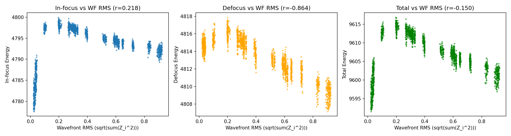
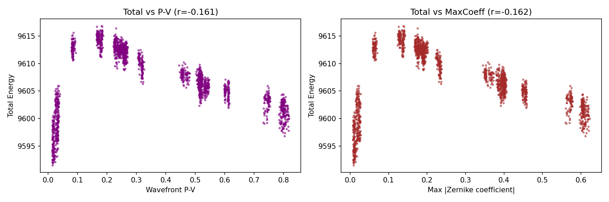
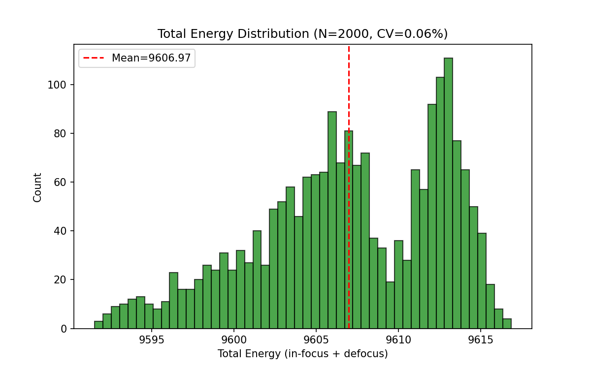
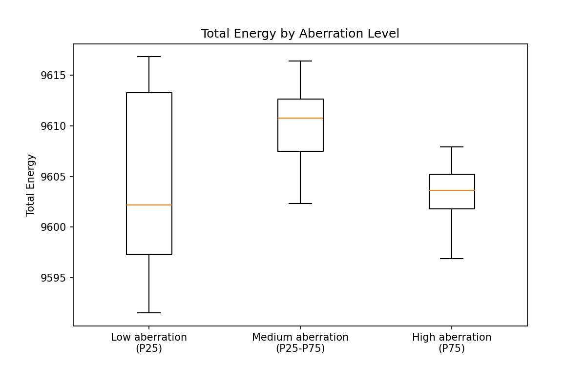
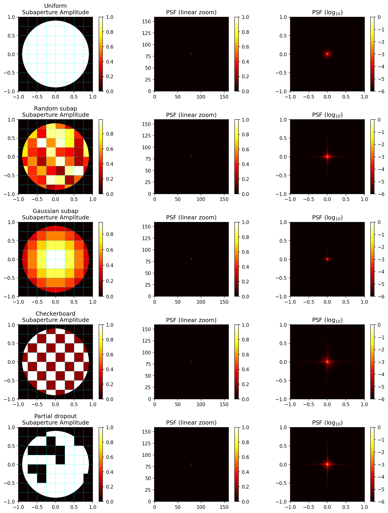
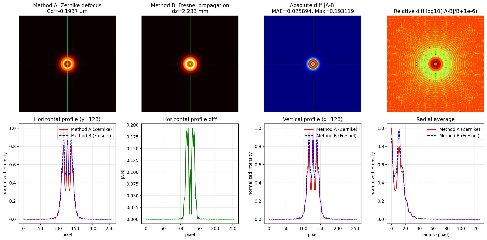
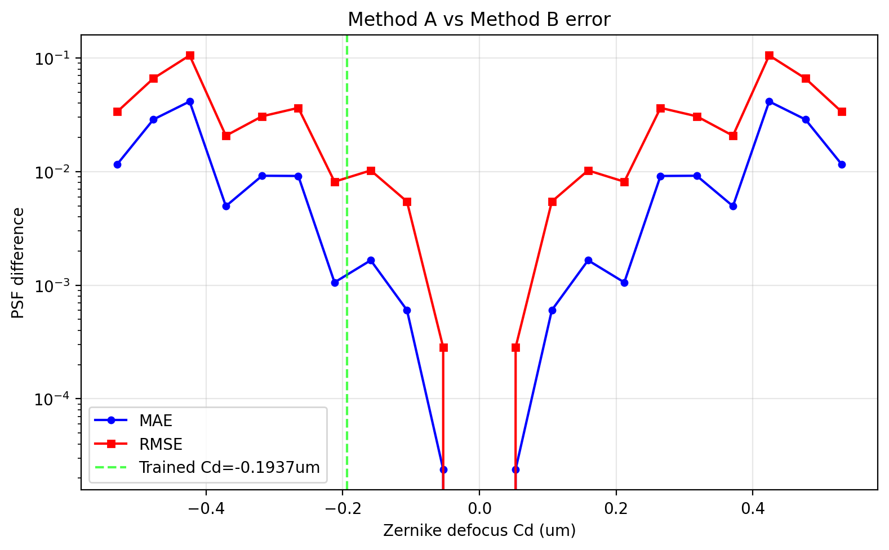
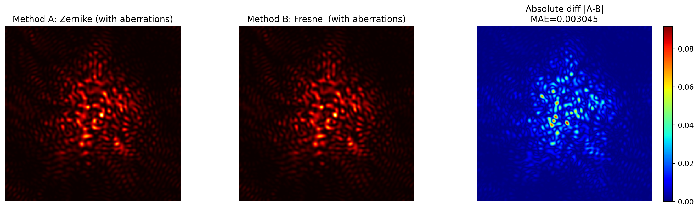

1. 1.1. 本文严格分析光学仿真链路中**光瞳振幅掩模（pupil amplitude mask）**的参数化选择。核心问题是：
无界掩模 （如 M = exp ( m ) M = \exp(m) M = exp ( m ) 有界掩模 + 可学习增益 （如 M = σ ( m ) ∈ ( 0 , 1 ) M = \sigma(m) \in (0,1) M = σ ( m ) ∈ ( 0 , 1 ) g g g
结论 ：
目标空间（min-max 后）：两者严格等价。 任何无界 mask 产生的 PSF 形态，sigmoid+gain 都能复现。训练过程（梯度动态）：两者不等价。 sigmoid 的硬边界约束能带来更稳定的训练、更好的物理解释性。
1.2.
符号
含义
P ( u , v ) P(u,v) P ( u , v ) 原始二元光瞳掩膜（圆形孔径，{ 0 , 1 } \{0,1\} { 0 , 1 }
M ( u , v ) M(u,v) M ( u , v ) 可学习的光瞳振幅修正因子
m ( u , v ) m(u,v) m ( u , v ) 网络直接优化的可学习参数（R \mathbb{R} R
A eff ( u , v ) A_{\text{eff}}(u,v) A eff ( u , v ) 有效光瞳振幅 = P ⋅ M = P \cdot M = P ⋅ M
ϕ ( u , v ) \phi(u,v) ϕ ( u , v ) 波前相位（Zernike 多项式描述）
U ( x , y ) U(x,y) U ( x , y ) 焦平面复振幅
I ( x , y ) I(x,y) I ( x , y ) 焦平面光强 $=
g g g 探测器增益
I det ( x , y ) I_{\text{det}}(x,y) I det ( x , y ) 探测器输出
I ~ ( x , y ) \tilde{I}(x,y) I ~ ( x , y ) min-max 归一化后的 PSF
F { ⋅ } \mathcal{F}\{\cdot\} F { ⋅ } 二维傅里叶变换
σ ( ⋅ ) \sigma(\cdot) σ ( ⋅ ) sigmoid 函数：σ ( x ) = 1 1 + e − x \sigma(x) = \frac{1}{1+e^{-x}} σ ( x ) = 1 + e − x 1
1.3. 1.3.1. 焦平面复振幅是光瞳复振幅的傅里叶变换：
U ( x , y ) = F { A eff ( u , v ) ⋅ e i ϕ ( u , v ) } U(x,y) = \mathcal{F}\{A_{\text{eff}}(u,v) \cdot e^{i\phi(u,v)}\}
U ( x , y ) = F { A eff ( u , v ) ⋅ e i ϕ ( u , v ) }
光强：
I ( x , y ) = ∣ U ( x , y ) ∣ 2 = ∣ F { P ⋅ M ⋅ e i ϕ } ∣ 2 I(x,y) = |U(x,y)|^2 = \left| \mathcal{F}\{P \cdot M \cdot e^{i\phi}\} \right|^2
I ( x , y ) = ∣ U ( x , y ) ∣ 2 = ∣ ∣ F { P ⋅ M ⋅ e i ϕ } ∣ ∣ 2
1.3.2. I det = g ⋅ I , I ~ = I det − I det , min I det , max − I det , min I_{\text{det}} = g \cdot I, \quad \tilde{I} = \frac{I_{\text{det}} - I_{\text{det},\min}}{I_{\text{det},\max} - I_{\text{det},\min}}
I det = g ⋅ I , I ~ = I det , max − I det , min I det − I det , min
对于背景已扣除、无负值的 PSF 图像，I det , min = 0 I_{\text{det},\min} = 0 I det , min = 0
I ~ = I det I det , max = g ⋅ I g ⋅ I max = I I max \tilde{I} = \frac{I_{\text{det}}}{I_{\text{det},\max}} = \frac{g \cdot I}{g \cdot I_{\max}} = \frac{I}{I_{\max}}
I ~ = I det , max I det = g ⋅ I max g ⋅ I = I max I
min-max 消去了 g g g
1.4. 1.4.1. 任意正的无界掩模 M A ( u , v ) = exp ( m A ( u , v ) ) > 0 M_A(u,v) = \exp(m_A(u,v)) > 0 M A ( u , v ) = exp ( m A ( u , v ) ) > 0
M A ( u , v ) = c ⋅ M ~ ( u , v ) M_A(u,v) = c \cdot \tilde{M}(u,v)
M A ( u , v ) = c ⋅ M ~ ( u , v )
其中：
c = max u , v M A ( u , v ) > 0 c = \max_{u,v} M_A(u,v) > 0 c = max u , v M A ( u , v ) > 0 M ~ ( u , v ) = M A ( u , v ) / c ∈ ( 0 , 1 ] \tilde{M}(u,v) = M_A(u,v) / c \in (0, 1] M ~ ( u , v ) = M A ( u , v ) / c ∈ ( 0 , 1 ]
代入夫琅禾费衍射，由 FFT 线性性：
F { P ⋅ M A ⋅ e i ϕ } = c ⋅ F { P ⋅ M ~ ⋅ e i ϕ } \mathcal{F}\{P \cdot M_A \cdot e^{i\phi}\} = c \cdot \mathcal{F}\{P \cdot \tilde{M} \cdot e^{i\phi}\}
F { P ⋅ M A ⋅ e i ϕ } = c ⋅ F { P ⋅ M ~ ⋅ e i ϕ }
光强：
I A = c 2 ⋅ ∣ F { P ⋅ M ~ ⋅ e i ϕ } ∣ 2 I_A = c^2 \cdot \left| \mathcal{F}\{P \cdot \tilde{M} \cdot e^{i\phi}\} \right|^2
I A = c 2 ⋅ ∣ ∣ ∣ F { P ⋅ M ~ ⋅ e i ϕ } ∣ ∣ ∣ 2
探测器输出（含增益 g g g
I det , A = g ⋅ c 2 ⋅ ∣ F { P ⋅ M ~ ⋅ e i ϕ } ∣ 2 I_{\text{det},A} = g \cdot c^2 \cdot \left| \mathcal{F}\{P \cdot \tilde{M} \cdot e^{i\phi}\} \right|^2
I det , A = g ⋅ c 2 ⋅ ∣ ∣ ∣ F { P ⋅ M ~ ⋅ e i ϕ } ∣ ∣ ∣ 2
min-max 后：
I ~ A = ∣ F { P ⋅ M ~ ⋅ e i ϕ } ∣ 2 max ∣ F { P ⋅ M ~ ⋅ e i ϕ } ∣ 2 \tilde{I}_A = \frac{\left| \mathcal{F}\{P \cdot \tilde{M} \cdot e^{i\phi}\} \right|^2}{\max \left| \mathcal{F}\{P \cdot \tilde{M} \cdot e^{i\phi}\} \right|^2}
I ~ A = max ∣ ∣ ∣ F { P ⋅ M ~ ⋅ e i ϕ } ∣ ∣ ∣ 2 ∣ ∣ ∣ F { P ⋅ M ~ ⋅ e i ϕ } ∣ ∣ ∣ 2
c c c g g g
1.4.2. 对于 sigmoid 参数化 M B ( u , v ) = σ ( m B ( u , v ) ) ∈ ( 0 , 1 ) M_B(u,v) = \sigma(m_B(u,v)) \in (0,1) M B ( u , v ) = σ ( m B ( u , v ) ) ∈ ( 0 , 1 )
只要选择 m B m_B m B σ ( m B ) = M ~ \sigma(m_B) = \tilde{M} σ ( m B ) = M ~ m B = σ − 1 ( M ~ ) m_B = \sigma^{-1}(\tilde{M}) m B = σ − 1 ( M ~ )
I ~ B = ∣ F { P ⋅ M ~ ⋅ e i ϕ } ∣ 2 max ∣ F { P ⋅ M ~ ⋅ e i ϕ } ∣ 2 = I ~ A \tilde{I}_B = \frac{\left| \mathcal{F}\{P \cdot \tilde{M} \cdot e^{i\phi}\} \right|^2}{\max \left| \mathcal{F}\{P \cdot \tilde{M} \cdot e^{i\phi}\} \right|^2} = \tilde{I}_A
I ~ B = max ∣ ∣ ∣ F { P ⋅ M ~ ⋅ e i ϕ } ∣ ∣ ∣ 2 ∣ ∣ ∣ F { P ⋅ M ~ ⋅ e i ϕ } ∣ ∣ ∣ 2 = I ~ A
由于 M ~ ∈ ( 0 , 1 ] \tilde{M} \in (0,1] M ~ ∈ ( 0 , 1 ] σ − 1 ( M ~ ) = ln ( M ~ / ( 1 − M ~ ) ) \sigma^{-1}(\tilde{M}) = \ln(\tilde{M}/(1-\tilde{M})) σ − 1 ( M ~ ) = ln ( M ~ / ( 1 − M ~ ) ) M ~ → 0 \tilde{M} \to 0 M ~ → 0 m B → − ∞ m_B \to -\infty m B → − ∞ M ~ = 1 \tilde{M} = 1 M ~ = 1 m B → + ∞ m_B \to +\infty m B → + ∞
1.4.3. 定理 ：对于任意无界正掩模 M A ( u , v ) > 0 M_A(u,v) > 0 M A ( u , v ) > 0 M B ( u , v ) = σ ( m B ( u , v ) ) ∈ ( 0 , 1 ] M_B(u,v) = \sigma(m_B(u,v)) \in (0,1] M B ( u , v ) = σ ( m B ( u , v ) ) ∈ ( 0 , 1 ] g g g
I ~ A ≡ I ~ B \tilde{I}_A \equiv \tilde{I}_B
I ~ A ≡ I ~ B
证明要点 ：
分解 M A = c ⋅ M ~ M_A = c \cdot \tilde{M} M A = c ⋅ M ~ M ~ ∈ ( 0 , 1 ] \tilde{M} \in (0,1] M ~ ∈ ( 0 , 1 ]
FFT 线性性将 c c c
光强的 ∣ ⋅ ∣ 2 |\cdot|^2 ∣ ⋅ ∣ 2 c c c c 2 c^2 c 2
min-max 归一化消去 c 2 c^2 c 2 g g g
Sigmoid 可以表示任意 M ~ ∈ ( 0 , 1 ] \tilde{M} \in (0,1] M ~ ∈ ( 0 , 1 ]
因此，在 min-max 后的目标空间中，无界 exp 和 sigmoid+gain 严格等价。
1.5. 1.5.1. 注意：以下问题不是 "min-max 后等价性"层面的，而是训练过程中 exp 参数化独有的病态。
1.5.1.1. Exp 参数化中：
M ( u , v ) = e m ( u , v ) = e m ˉ ⋅ e δ m ( u , v ) M(u,v) = e^{m(u,v)} = e^{\bar{m}} \cdot e^{\delta m(u,v)}
M ( u , v ) = e m ( u , v ) = e m ˉ ⋅ e δ m ( u , v )
全局缩放 c = e m ˉ c = e^{\bar{m}} c = e m ˉ e δ m e^{\delta m} e δ m 同一个参数向量的两个成分 ，无法独立控制。
这意味着：
模型为了让某个局部区域 M = 12 M = 12 M = 1 2 m m m
这会导致所有 区域的 M M M
结果就是：mask 参数向量整体漂移，局部相对分布被淹没在巨大的绝对值中
对比 sigmoid+gain ：
Sigmoid 硬约束 M ∈ ( 0 , 1 ) M \in (0,1) M ∈ ( 0 , 1 )
全局能量放大由独立的 gain 参数承担
Mask 只负责"相对形状"，不干扰全局尺度
1.5.1.2. 如果把无界 mask M M M M = c ⋅ M ~ M = c \cdot \tilde{M} M = c ⋅ M ~ c = max M c = \max M c = max M M ~ ∈ ( 0 , 1 ] \tilde{M} \in (0,1] M ~ ∈ ( 0 , 1 ] c c c 前向传播 上是等价的。
但两种参数化的反向传播 几何结构不同：
Exp
Sigmoid
映射
M = e m M = e^m M = e m M = σ ( m ) M = \sigma(m) M = σ ( m )
局部敏感度
∂ M / ∂ m = M \partial M/\partial m = M ∂ M / ∂ m = M ∂ M / ∂ m = M ( 1 − M ) ≤ 0.25 \partial M/\partial m = M(1-M) \leq 0.25 ∂ M / ∂ m = M ( 1 − M ) ≤ 0 . 2 5
M ≪ 1 M \ll 1 M ≪ 1 两者近似相等
两者近似相等
M → 1 M \to 1 M → 1 敏感度 $ o 1$
敏感度 → 0 \to 0 → 0
M > 1 M > 1 M > 1 敏感度 > 1 > 1 > 1
不可能发生
这导致 exp 的参数空间是一个扭曲的流形 ：
m m m m m m 但优化器看到的梯度是这两者的耦合
Sigmoid 把参数空间分解 为：
mask 子空间：只学相对形状（M ∈ ( 0 , 1 ) M \in (0,1) M ∈ ( 0 , 1 )
gain 子空间：只学校正全局尺度（1 维）
这种分解让优化器更容易找到好的解。
1.5.1.3. Exp 参数化下，m ( u , v ) ∈ R m(u,v) \in \mathbb{R} m ( u , v ) ∈ R
某些区域 m = + 5 m = +5 m = + 5 M ≈ 148 M \approx 148 M ≈ 1 4 8
某些区域 m = − 5 m = -5 m = − 5 M ≈ 0.007 M \approx 0.007 M ≈ 0 . 0 0 7
这种极端动态范围（1 0 5 10^5 1 0 5
数值精度问题（float32 的有效位数约 7 位）
优化器步长难以统一（adam 的自适应学习率在不同参数上差异巨大）
对比 sigmoid+gain ：
Sigmoid 把 m m m ( − 5 , + 5 ) (-5, +5) ( − 5 , + 5 )
参数值自然集中在合理范围
1.5.1.4.
M > 1 M > 1 M > 1 实际系统中，光瞳透过率不可能超过 100%
全局照明增强应该是 gain 的事，不是 mask 的事
1.5.1.5. 之前曾认为"exp 的 mask 梯度会爆炸，sigmoid 不会"。但这个说法夸大了差异 ：
Sigmoid+gain 中 gain 也会放大整个网络的梯度 （gain=12 时，前面所有层梯度放大 12 倍）两者的全局能量参数都会通过反向传播影响整个网络 真正区分两者的不是"梯度数值"，而是"参数空间的几何结构"
Exp 的问题不是"梯度更大"，而是：
2601 个 mask 参数各自独立地缩放自己的梯度（非一致性）
全局缩放隐式分布在所有参数中（耦合）
参数可以无限漂移（无界）
Sigmoid+gain 中 gain 也会放大梯度，但：
放大是全局一致 的（所有参数同比例缩放，不改变相对方向）
全局缩放由单一参数 控制，可用梯度裁剪/weight decay 约束
Mask 参数自身有界，不会无限漂移
1.5.2. Sigmoid 把优化问题分解 为两个子空间：
子空间
参数
物理含义
维度
形状子空间
m B ( u , v ) m_B(u,v) m B ( u , v ) 光瞳相对透过率分布
2601
尺度子空间
g B g_B g B 相机增益/曝光量
1
饱和子空间
I sat I_{\text{sat}} I sat 满阱容量
1（或 2）
这种分离让优化器更容易处理：
mask 只负责"相对形状"，不关心全局亮度
gain 只负责"全局尺度"，不关心空间分布
两者不会互相干扰
1.5.3. 两种方案都存在"全局能量参数与饱和阈值的耦合"：
Exp：c = e m ˉ c = e^{\bar{m}} c = e m ˉ
Sigmoid+gain：g B g_B g B
这不是 exp 独有的问题，而是任何全局能量参数 + 饱和阈值 都会出现的尺度等价性（见文档第 5.4 节）。
但 exp 的耦合更严重 ：
c c c g g g
1.5.4.
维度
无界 exp + 可学习 gain
Sigmoid + 可学习 gain
参数空间结构 耦合（全局缩放隐式分布在 2601 个参数中）
解耦（shape / scale / sat 分离）
Mask 参数空间 无界（m ∈ R m \in \mathbb{R} m ∈ R
有效有界（σ \sigma σ ( − 5 , + 5 ) (-5,+5) ( − 5 , + 5 )
梯度一致性 非一致（各位置被各自 e m e^m e m
一致（gain 全局同比例缩放）
训练稳定性 差
好
物理可解释性 差（M M M
好（M ∈ ( 0 , 1 ) M \in (0,1) M ∈ ( 0 , 1 )
防止走捷径 否
是
饱和耦合 存在（且更严重）
存在（但 gain 单一可控）
1.5.5. 上表指出 sigmoid+可学习 gain 能"防止走捷径"，但一个尖锐的问题：
既然 min-max 消掉了 gain，那 gain 为什么还要学？饱和阈值也是学的，它们不也是耦合的吗？
1.5.5.1. ( g , s ) (g, s) ( g , s ) 链路（含饱和）：
I det = g ⋅ I , I sat = min ( g ⋅ I , s ) I_{\text{det}} = g \cdot I, \quad I_{\text{sat}} = \min(g \cdot I,\; s)
I det = g ⋅ I , I sat = min ( g ⋅ I , s )
同时缩放 g g g s s s c > 0 c > 0 c > 0
g ′ = c ⋅ g , s ′ = c ⋅ s g' = c \cdot g, \quad s' = c \cdot s
g ′ = c ⋅ g , s ′ = c ⋅ s
I sat ′ = min ( c ⋅ g ⋅ I , c ⋅ s ) = c ⋅ min ( g ⋅ I , s ) = c ⋅ I sat I'_{\text{sat}} = \min(c \cdot g \cdot I,\; c \cdot s) = c \cdot \min(g \cdot I,\; s) = c \cdot I_{\text{sat}}
I sat ′ = min ( c ⋅ g ⋅ I , c ⋅ s ) = c ⋅ min ( g ⋅ I , s ) = c ⋅ I sat
min-max 后：
I ~ ′ = c ⋅ I sat − c ⋅ I sat , min c ⋅ I sat , max − c ⋅ I sat , min = I ~ \tilde{I}' = \frac{c \cdot I_{\text{sat}} - c \cdot I_{\text{sat},\min}}{c \cdot I_{\text{sat},\max} - c \cdot I_{\text{sat},\min}} = \tilde{I}
I ~ ′ = c ⋅ I sat , max − c ⋅ I sat , min c ⋅ I sat − c ⋅ I sat , min = I ~
结论 ：( g , s ) (g, s) ( g , s ) 尺度等价的 。真正起作用的是比值 s / g s/g s / g
1.5.5.2.
冗余来源
性质
是否影响 min-max 后结果
物理后果
mask 全局缩放 c c c
完全冗余
否 （无论有无饱和）无物理意义，导致梯度爆炸
gain 绝对值 g g g
与 s s s
否 （只影响结果的是 s / g s/g s / g 冗余但不"错误"
gain-saturation 比值 s / g s/g s / g
关键物理量
是 决定是否饱和、削顶程度
所以：
mask 的全局缩放 c c c ：无论什么情况都是纯冗余，必须被约束掉（sigmoid）gain 的绝对值 ：和 saturation 冗余耦合，可以容忍gain-saturation 比值 s / g s/g s / g ：是关键物理量，必须保留
1.5.5.3. 如果要消除所有冗余自由度：
Mask ：sigmoid 约束到 ( 0 , 1 ) (0,1) ( 0 , 1 ) c c c Gain ：固定为常数（如 g = 1 g = 1 g = 1 Saturation ：唯一可学习的能量相关参数
或者反过来固定 saturation、只学 gain。
但在实践中，两者都学也没问题——优化器只是多一个冗余方向，不会导致梯度爆炸（不像 e m e^m e m
gain 对应探测器增益/曝光量saturation 对应满阱容量
2. 2.1.
参数
符号
实际值
单位
探测器单边像素数
N 400 pixels
单个像素物理尺寸
p 4.5 μm
探测器总物理宽度
Np 400 × 4.5 = 1800
μm = 1.8 mm
探测器半宽（中心到边缘）
Np/2 1800 / 2 = 900
μm = 0.9 mm
激光波长
λ 530 nm
光瞳到CCD焦距
f 1.248 m
光瞳直径
D 60 mm
艾里斑半径
r_A = 1.22λf/D 13.45 μm
FOV （Field of View，视场）就是探测器在焦平面上能覆盖的物理范围。探测器是 400 × 400 像素，每个像素 4.5 μm，所以总宽度是 1.8 mm，以中心为原点，FOV 就是 [-0.9 mm, +0.9 mm] ，写作 [-Np/2, +Np/2] 。
2.2. 2.2.1. 波前相位 ϕ ( u ) \phi(\mathbf{u}) ϕ ( u ) 角谱法 。其核心思想是：
把任意波面看成无数个不同倾斜角度的平面波（角谱分量）的叠加。
空间频率低 → 平面波倾斜角小 → 光线偏折小
空间频率高 → 平面波倾斜角大 → 光线偏折大
具体关系：对于 pupil 上空间频率为 k k k
θ ≈ λ k ( 小角度近似， λ k ≪ 1 ) \theta \approx \lambda k \quad (\text{小角度近似，} \lambda k \ll 1)
θ ≈ λ k ( 小角度近似， λ k ≪ 1 )
经过焦距 f f f
x = f ⋅ θ = λ f ⋅ k x = f \cdot \theta = \lambda f \cdot k
x = f ⋅ θ = λ f ⋅ k
所以：pupil 上的空间频率 k k k x = λ f k x = \lambda f k x = λ f k
这就是后面所有推导的物理根源——也是角谱法的直接推论。
2.2.2. 光瞳平面上的复场 P ( u ) P(\mathbf{u}) P ( u ) f f f U ( x ) U(\mathbf{x}) U ( x ) P ( u ) P(\mathbf{u}) P ( u )
U ( x ) = 1 λ f ∬ P ( u ) exp ( − i 2 π λ f u ⋅ x ) d u U(\mathbf{x}) = \frac{1}{\lambda f} \iint P(\mathbf{u}) \exp\left(-i \frac{2\pi}{\lambda f} \mathbf{u} \cdot \mathbf{x}\right) d\mathbf{u}
U ( x ) = λ f 1 ∬ P ( u ) exp ( − i λ f 2 π u ⋅ x ) d u
这个式子告诉我们一件事：
焦平面上的坐标 x \mathbf{x} x
具体来说，如果我们定义光瞳域的空间频率为 k \mathbf{k} k
k = x λ f \mathbf{k} = \frac{\mathbf{x}}{\lambda f}
k = λ f x
那么焦平面复振幅就是光瞳复场在频率 k \mathbf{k} k
U ( x ) ∝ P ^ ( k = x λ f ) U(\mathbf{x}) \propto \hat{P}\left(\mathbf{k} = \frac{\mathbf{x}}{\lambda f}\right)
U ( x ) ∝ P ^ ( k = λ f x )
2.2.3. 探测器只能接收到焦平面上 x ∈ [ − N p / 2 , + N p / 2 ] x \in [-Np/2, +Np/2] x ∈ [ − N p / 2 , + N p / 2 ]
把 x m a x = N p / 2 = 900 μ m x_{max} = Np/2 = 900\ \mu\text{m} x m a x = N p / 2 = 9 0 0 μ m k = x / ( λ f ) \mathbf{k} = \mathbf{x}/(\lambda f) k = x / ( λ f )
k m a x = N p / 2 λ f = 900 × 1 0 − 6 530 × 1 0 − 9 × 1.248 ≈ 9 × 1 0 − 4 6.614 × 1 0 − 7 ≈ 1360 cycles/m k_{max} = \frac{Np/2}{\lambda f} = \frac{900\times 10^{-6}}{530\times 10^{-9} \times 1.248} \approx \frac{9\times 10^{-4}}{6.614\times 10^{-7}} \approx \mathbf{1360\ \text{cycles/m}}
k m a x = λ f N p / 2 = 5 3 0 × 1 0 − 9 × 1 . 2 4 8 9 0 0 × 1 0 − 6 ≈ 6 . 6 1 4 × 1 0 − 7 9 × 1 0 − 4 ≈ 1 3 6 0 cycles/m
这是以 cycles/m（每米多少周期）为单位。换算成更直观的 cycles/pupil （光瞳直径上有多少个周期）：
n m a x = k m a x × D = 1360 × 0.06 ≈ 81.6 cycles/pupil n_{max} = k_{max} \times D = 1360 \times 0.06 \approx \mathbf{81.6\ \text{cycles/pupil}}
n m a x = k m a x × D = 1 3 6 0 × 0 . 0 6 ≈ 8 1 . 6 cycles/pupil
2.2.4. 角谱法分析的是光瞳复场 P ( u ) = A ( u ) e i ϕ ( u ) P(u) = A(u)e^{i\phi(u)} P ( u ) = A ( u ) e i ϕ ( u ) 。将它分解为不同空间频率的平面波成分 e i 2 π k u e^{i2\pi k u} e i 2 π k u
P ( u ) = ∫ P ^ ( k ) e i 2 π k u d k ⇒ U ( x ) = ∑ (艾里斑叠加) P(u) = \int \hat{P}(k) e^{i2\pi k u} dk \quad \Rightarrow \quad U(x) = \sum \text{(艾里斑叠加)}
P ( u ) = ∫ P ^ ( k ) e i 2 π k u d k ⇒ U ( x ) = ∑ ( 艾里斑叠加 )
关键物理图像 ：
复场中空间频率为 k k k
聚焦位置 x = λ f k x = \lambda f k x = λ f k
换算成 cycles/pupil：n = k D n = kD n = k D x = n λ f / D x = n \lambda f / D x = n λ f / D
这就是 Pupil 频率 n n n
2.3. 2.3.1. 2.3.1.1. 一束理想平面波 以倾斜角 θ \theta θ f f f
x = f ⋅ tan θ ≈ f ⋅ θ ( 小角度 ) x = f \cdot \tan\theta \approx f \cdot \theta \quad (\text{小角度})
x = f ⋅ tan θ ≈ f ⋅ θ ( 小角度 )
2.3.1.2. 角谱法将光瞳复场 P ( u ) P(u) P ( u ) e i 2 π k u e^{i2\pi k u} e i 2 π k u k k k
θ = λ k \theta = \lambda k
θ = λ k
因此，角谱成分 k k k
x = λ f ⋅ k x = \lambda f \cdot k
x = λ f ⋅ k
换算成 cycles/pupil（n = k D n = kD n = k D
x = n ⋅ λ f D x = n \cdot \frac{\lambda f}{D}
x = n ⋅ D λ f
代入系统参数：
λ f D = 530 × 1 0 − 9 × 1.248 0.06 ≈ 11.0 μ m \frac{\lambda f}{D} = \frac{530\times 10^{-9} \times 1.248}{0.06} \approx 11.0\ \mu\text{m}
D λ f = 0 . 0 6 5 3 0 × 1 0 − 9 × 1 . 2 4 8 ≈ 1 1 . 0 μ m
物理图像非常直接 ：角谱中每增加 1 cycle/pupil 的频率，对应成分就往焦平面两边各移动 11.0 μm。
2.3.1.3. 实际光瞳直径 D D D A ( u ) A(u) A ( u ) 艾里斑 ——形状由光瞳决定，但位置只由倾斜角（即角谱频率）决定 。
2.3.1.4. 探测器是 400 × 400 像素，像素尺寸 4.5 μm，所以总范围是：
FOV = 400 × 4.5 μ m = 1.8 mm \text{FOV} = 400 \times 4.5\ \mu\text{m} = 1.8\ \text{mm}
FOV = 4 0 0 × 4 . 5 μ m = 1 . 8 mm
半宽为 ±900 μm。角谱成分一旦聚焦到 ∣ x ∣ > 900 |x| > 900 ∣ x ∣ > 9 0 0 跑出探测器了 。
角谱频率 n n n
聚焦位置 x = ± n × 11.0 x = \pm n \times 11.0 x = ± n × 1 1 . 0
在探测器内吗？
10
±110 μm
✅
40
±440 μm
✅
80
±880 μm
✅ 靠近边缘
81.6 ±898 μm ✅ 刚好擦边
82
±902 μm
❌ 跑出边界
100
±1100 μm
❌
出界条件：
n ⋅ λ f D ≤ N p 2 n \cdot \frac{\lambda f}{D} \leq \frac{Np}{2}
n ⋅ D λ f ≤ 2 N p
整理得：
n m a x = N p D 2 λ f ≈ 81.6 n_{max} = \frac{NpD}{2\lambda f} \approx 81.6
n m a x = 2 λ f N p D ≈ 8 1 . 6
2.4. 2.4.1. 对探测器采集到的焦平面强度图 I ( x ) I(x) I ( x ) P ( u ) P(u) P ( u ) 自相关 （这是傅里叶光学的一个标准结论）。
所以：对焦平面强度做 DFT，本质上就是在 pupil 域上做分析。
2.4.2. 对 400 × 400 像素做 DFT，DFT 会输出 400 个频率分量。这些频率分量的「频率轴」并不是随便的——
根据角谱法的对应关系 x = λ f ⋅ k x = \lambda f \cdot k x = λ f ⋅ k x x x k k k 焦平面 DFT 的频率轴，经过缩放后，就是 pupil 上的位置轴。
具体来说：
焦平面的总采样长度：L = N p = 400 × 4.5 μ m = 1.8 L = Np = 400 \times 4.5\ \mu\text{m} = 1.8 L = N p = 4 0 0 × 4 . 5 μ m = 1 . 8
DFT 的频率分辨率（相邻两个频率 bin 的间隔）：Δ k = 1 / L = 1 / ( N p ) \Delta k = 1/L = 1/(Np) Δ k = 1 / L = 1 / ( N p )
把频率分辨率换算回 pupil 坐标（乘以 λ f \lambda f λ f
Δ u = λ f ⋅ Δ k = λ f N p \Delta u = \lambda f \cdot \Delta k = \frac{\lambda f}{Np}
Δ u = λ f ⋅ Δ k = N p λ f
代入数字：
Δ u = 530 × 1 0 − 9 × 1.248 400 × 4.5 × 1 0 − 6 = 6.614 × 1 0 − 7 1.8 × 1 0 − 3 ≈ 0.367 m m \Delta u = \frac{530\times 10^{-9} \times 1.248}{400 \times 4.5\times 10^{-6}} = \frac{6.614\times 10^{-7}}{1.8\times 10^{-3}} \approx \mathbf{0.367\ mm}
Δ u = 4 0 0 × 4 . 5 × 1 0 − 6 5 3 0 × 1 0 − 9 × 1 . 2 4 8 = 1 . 8 × 1 0 − 3 6 . 6 1 4 × 1 0 − 7 ≈ 0 . 3 6 7 m m
物理意义：焦平面 DFT 的相邻两个频率 bin，对应 pupil 上相距 0.367 mm 的两个位置。
2.4.3. 光瞳直径 D = 60 D = 60 D = 6 0
N p u p i l = D Δ u = 60 0.367 ≈ 163.4 段 N_{pupil} = \frac{D}{\Delta u} = \frac{60}{0.367} \approx \mathbf{163.4\ \text{段}}
N p u p i l = Δ u D = 0 . 3 6 7 6 0 ≈ 1 6 3 . 4 段
这相当于： 400 像素探测器，在 pupil 直径方向上提供了约 163 个独立采样点 。
2.4.4. 根据奈奎斯特采样定理，163 个采样点能无混叠表示的最高空间频率为：
n m a x = N p u p i l 2 = 163.4 2 ≈ 81.7 cycles/pupil n_{max} = \frac{N_{pupil}}{2} = \frac{163.4}{2} \approx \mathbf{81.7\ \text{cycles/pupil}}
n m a x = 2 N p u p i l = 2 1 6 3 . 4 ≈ 8 1 . 7 cycles/pupil
2.4.5.
推导方法
核心思路
结果
探测器 FOV 限制 （第 3 节）角谱分量聚焦点跑出探测器边缘
81.6
采样定理法 （本节）400 像素 → pupil 上 163 个采样点 → 奈奎斯特极限
81.7
两种完全不同的思路，得到完全一样的数。这不是巧合，而是角谱法对偶性的必然结果。
2.5. 2.5.1. T m i n = D n m a x = 60 mm 81.6 ≈ 735 μ m ≈ 0.735 m m T_{min} = \frac{D}{n_{max}} = \frac{60\ \text{mm}}{81.6} \approx \mathbf{735\ \mu m} \approx \mathbf{0.735\ mm}
T m i n = n m a x D = 8 1 . 6 6 0 mm ≈ 7 3 5 μ m ≈ 0 . 7 3 5 m m
PSF光路，理论上能分辨的波前最短周期约为 0.735 毫米 。
2.5.2. 艾里斑半径 r A ≈ 13.45 r_A \approx 13.45 r A ≈ 1 3 . 4 5
角谱高频分量聚焦到探测器边缘时，离中心的距离是 900 μm，大约是 67 个艾里斑半径 。
这说明：PSF 对高频波前的感知，不是通过「改变中心艾里斑形状」，而是通过「在很远的地方产生微弱的角谱响应」来实现的。
2.6. 上面分析的是上限 （最高能探测到多少）。这一节分析下限 ——多低的频率还能被 PSF 感知？相邻两个频率模式之间的最小可分辨间隔是多少？
2.6.1. 2.6.1.1. 焦平面上相邻两个像素相距 p = 4.5 p = 4.5 p = 4 . 5 x = λ f ⋅ k x = \lambda f \cdot k x = λ f ⋅ k p p p 绝对频率间隔 ：
Δ k = p λ f \Delta k = \frac{p}{\lambda f}
Δ k = λ f p
代入参数：
Δ k = 4.5 × 1 0 − 6 530 × 1 0 − 9 × 1.248 ≈ 6.8 cycles/m \Delta k = \frac{4.5\times 10^{-6}}{530\times 10^{-9} \times 1.248} \approx \mathbf{6.8\ \text{cycles/m}}
Δ k = 5 3 0 × 1 0 − 9 × 1 . 2 4 8 4 . 5 × 1 0 − 6 ≈ 6 . 8 cycles/m
这一步只和像素尺寸 p p p ，和口径 D D D
2.6.1.2. 前面的 0.41 cycles/pupil 只是像素采样层面的数字分辨率 ，但光学系统本身有衍射极限 （瑞利判据），两个相近的频率模式产生的角谱聚焦点可能因为艾里斑重叠而无法区分。
瑞利判据 ：两个点光源刚好能被分辨时，其间距为艾里斑半径：
δ x R a y l e i g h = 1.22 λ f D ≈ 13.45 μ m \delta x_{Rayleigh} = 1.22 \frac{\lambda f}{D} \approx 13.45\ \mu\text{m}
δ x R a y l e i g h = 1 . 2 2 D λ f ≈ 1 3 . 4 5 μ m
2.6.1.3. 角谱法中，光瞳复场 P ( u ) P(u) P ( u ) e i 2 π k u e^{i2\pi k u} e i 2 π k u x = λ f k x = \lambda f k x = λ f k n = k D n = kD n = k D
x = n ⋅ λ f D x = n \cdot \frac{\lambda f}{D}
x = n ⋅ D λ f
代入系统参数：
λ f D = 530 × 1 0 − 9 × 1.248 0.06 ≈ 11.02 μ m \frac{\lambda f}{D} = \frac{530\times 10^{-9} \times 1.248}{0.06} \approx 11.02\ \mu\text{m}
D λ f = 0 . 0 6 5 3 0 × 1 0 − 9 × 1 . 2 4 8 ≈ 1 1 . 0 2 μ m
所以角谱频率为 n n n x = ± n × 11.02 x = \pm n \times 11.02 x = ± n × 1 1 . 0 2
2.6.1.4. 考虑角谱中两个相邻的频率 n n n n + Δ n n + \Delta n n + Δ n
频率 n n n x n = n × 11.02 x_n = n \times 11.02 x n = n × 1 1 . 0 2
频率 n + Δ n n + \Delta n n + Δ n x n + Δ n = ( n + Δ n ) × 11.02 x_{n+\Delta n} = (n + \Delta n) \times 11.02 x n + Δ n = ( n + Δ n ) × 1 1 . 0 2
两者间距：
Δ x = Δ n × 11.02 μ m = Δ n ⋅ λ f D \Delta x = \Delta n \times 11.02\ \mu\text{m} = \Delta n \cdot \frac{\lambda f}{D}
Δ x = Δ n × 1 1 . 0 2 μ m = Δ n ⋅ D λ f
2.6.1.5. 要作为独立光斑 分辨这两个聚焦点，它们的间距必须大于等于艾里斑半径：
Δ x ≥ δ x R a y l e i g h = 1.22 λ f D ≈ 13.45 μ m \Delta x \geq \delta x_{Rayleigh} = 1.22\frac{\lambda f}{D} \approx 13.45\ \mu\text{m}
Δ x ≥ δ x R a y l e i g h = 1 . 2 2 D λ f ≈ 1 3 . 4 5 μ m
代入 Δ x = Δ n × 11.02 \Delta x = \Delta n \times 11.02 Δ x = Δ n × 1 1 . 0 2
Δ n × 11.02 μ m ≥ 13.45 μ m \Delta n \times 11.02\ \mu\text{m} \geq 13.45\ \mu\text{m}
Δ n × 1 1 . 0 2 μ m ≥ 1 3 . 4 5 μ m
Δ n o p t ≥ 13.45 11.02 ≈ 1.22 \Delta n_{opt} \geq \frac{13.45}{11.02} \approx 1.22
Δ n o p t ≥ 1 1 . 0 2 1 3 . 4 5 ≈ 1 . 2 2
结论：仅考虑光学衍射极限，系统能分辨的最小频率间隔约为 1.22 cycles/pupil。
对比两个极限：
限制来源
物理含义
数值
系统是否受它限制？
像素采样 DFT 频率 bin 的间隔
0.41 cycles/pupil
❌ 不是瓶颈（像素够密）
光学衍射（瑞利判据） 两个角谱聚焦点作为独立光斑刚好可分辨
1.22 cycles/pupil ✅ 这是实际瓶颈
像素尺寸 p = 4.5 p = 4.5 p = 4 . 5 < r A = 13.45 < r_A = 13.45 < r A = 1 3 . 4 5 实际频率分辨率由光学衍射决定，约为 1.22 cycles/pupil ，而不是 0.41。
2.6.1.6. 在解释 n < 1.22 n < 1.22 n < 1 . 2 2 n > 1.22 n > 1.22 n > 1 . 2 2 艾里斑 和它的第一暗环 是什么。
2.6.1.6.1. 平行光经过圆形孔径 （直径 D D D f f f
I ( x ) = I 0 [ 2 J 1 ( π D ∣ x ∣ λ f ) π D ∣ x ∣ λ f ] 2 I(x) = I_0 \left[ \frac{2J_1\left( \frac{\pi D |x|}{\lambda f} \right)}{\frac{\pi D |x|}{\lambda f}} \right]^2
I ( x ) = I 0 ⎣ ⎡ λ f π D ∣ x ∣ 2 J 1 ( λ f π D ∣ x ∣ ) ⎦ ⎤ 2
其中 J 1 J_1 J 1
2.6.1.6.2. J 1 ( z ) J_1(z) J 1 ( z ) z ≈ 3.83 z \approx 3.83 z ≈ 3 . 8 3
π D r A λ f = 3.83 ⇒ r A = 3.83 π ⋅ λ f D = 1.22 λ f D \frac{\pi D r_A}{\lambda f} = 3.83 \quad \Rightarrow \quad r_A = \frac{3.83}{\pi} \cdot \frac{\lambda f}{D} = \mathbf{1.22 \frac{\lambda f}{D}}
λ f π D r A = 3 . 8 3 ⇒ r A = π 3 . 8 3 ⋅ D λ f = 1 . 2 2 D λ f
这就是瑞利判据 中那个著名的 1.22 的来源。
代入系统参数：
r A = 1.22 × 530 × 1 0 − 9 × 1.248 0.06 ≈ 13.45 μ m r_A = 1.22 \times \frac{530\times 10^{-9} \times 1.248}{0.06} \approx \mathbf{13.45\ \mu m}
r A = 1 . 2 2 × 0 . 0 6 5 3 0 × 1 0 − 9 × 1 . 2 4 8 ≈ 1 3 . 4 5 μ m
物理意义 ：
第一暗环以内 （∣ x ∣ < 13.45 |x| < 13.45 ∣ x ∣ < 1 3 . 4 5 主瓣 ，集中了约 84% 的能量。第一暗环 （∣ x ∣ = 13.45 |x| = 13.45 ∣ x ∣ = 1 3 . 4 5 零 。第一暗环以外 （∣ x ∣ > 13.45 |x| > 13.45 ∣ x ∣ > 1 3 . 4 5
2.6.1.6.3. n = 1.22 n = 1.22 n = 1 . 2 2 角谱响应的聚焦位置是 x = n × 11.02 x = n \times 11.02 x = n × 1 1 . 0 2
频率 n n n
聚焦位置 x x x
与第一暗环 r A = 13.45 r_A = 13.45 r A = 1 3 . 4 5
n = 0.5 n = 0.5 n = 0 . 5 5.5 5.5 5 . 5 远在第一暗环内部
n = 1.0 n = 1.0 n = 1 . 0 11.0 11.0 1 1 . 0 在第一暗环内部
n = 1.22 n = 1.22 n = 1 . 2 2 13.45 13.45 1 3 . 4 5 刚好在第一暗环上
n = 2.0 n = 2.0 n = 2 . 0 22.0 22.0 2 2 . 0 跑出第一暗环外面
所以当 n < 1.22 n < 1.22 n < 1 . 2 2 整个主瓣都还在中心艾里斑的第一暗环以内 ，从外面看就是"淹没在中心亮斑里面"，无法作为独立的结构被辨认出来。只有当 n > 1.22 n > 1.22 n > 1 . 2 2
2.6.1.7. 上面的 1.22 只适用于「角谱成分作为独立结构被分辨」的情况（n ≳ 1.22 n \gtrsim 1.22 n ≳ 1 . 2 2 n < 1.22 n < 1.22 n < 1 . 2 2
对于这类内部变形模式 ，相位恢复算法可以通过优化拟合整个强度场来区分相近的模式，其有效分辨率可以接近甚至突破瑞利判据（受信噪比限制）。
频率区间
分辨机制
有效频率分辨率
决定因素
n < 1.22 n < 1.22 n < 1 . 2 2 艾里斑内部形状变化
~0.4–1.0 cycles/pupil
像素采样 + 信噪比
n > 1.22 n > 1.22 n > 1 . 2 2 分离光斑的识别
~1.22 cycles/pupil 瑞利判据（衍射极限）
2.6.1.8. 如果估算"独立信息通道数"，应该用采样定理 而非瑞利判据：
Pupil 直径上的等效采样点数：N p u p i l ≈ D / Δ u = 163 N_{pupil} \approx D / \Delta u = 163 N p u p i l ≈ D / Δ u = 1 6 3
奈奎斯特频率通道数：N c h a n n e l s = N p u p i l / 2 ≈ 81 N_{channels} = N_{pupil} / 2 \approx \mathbf{81} N c h a n n e l s = N p u p i l / 2 ≈ 8 1
这 81 个通道是信息论上限 ——假设有无限信噪比和完美算法，系统最多能区分约 81 个独立的频率成分。
2.6.1.9.
量
公式
物理意义
系统值
最大频率 n m a x = N p D / ( 2 λ f ) n_{max} = NpD/(2\lambda f) n m a x = N p D / ( 2 λ f ) 角谱聚焦点不跑出探测器的上限
81.6 cycles/pupil
采样频率分辨率
Δ n s a m p = p D / ( λ f ) \Delta n_{samp} = pD/(\lambda f) Δ n s a m p = p D / ( λ f ) DFT 频率 bin 间隔
0.41 cycles/pupil
光学频率分辨率 Δ n o p t = 1.22 \Delta n_{opt} = 1.22 Δ n o p t = 1 . 2 2 独立角谱聚焦点可分辨的最小间隔
1.22 cycles/pupil
信息论通道数
N p u p i l / 2 N_{pupil}/2 N p u p i l / 2 完美算法下的自由度上限
~81
2.6.2. 2.6.2.1. 对于 pupil 上均匀分布的相位偏移：
ϕ ( u ) = ϕ 0 ( 常数 ) \phi(u) = \phi_0 \quad (\text{常数})
ϕ ( u ) = ϕ 0 ( 常数 )
光瞳函数变为 P ( u ) = A ( u ) e i ϕ 0 P(u) = A(u) e^{i\phi_0} P ( u ) = A ( u ) e i ϕ 0
U ( x ) = e i ϕ 0 ⋅ F [ A ( u ) ] = e i ϕ 0 ⋅ Airy ( x ) U(x) = e^{i\phi_0} \cdot \mathcal{F}[A(u)] = e^{i\phi_0} \cdot \text{Airy}(x)
U ( x ) = e i ϕ 0 ⋅ F [ A ( u ) ] = e i ϕ 0 ⋅ Airy ( x )
强度：
I ( x ) = ∣ e i ϕ 0 ⋅ Airy ( x ) ∣ 2 = ∣ Airy ( x ) ∣ 2 I(x) = |e^{i\phi_0} \cdot \text{Airy}(x)|^2 = |\text{Airy}(x)|^2
I ( x ) = ∣ e i ϕ 0 ⋅ Airy ( x ) ∣ 2 = ∣ Airy ( x ) ∣ 2
全局 piston（零频）对强度完全没有影响。 这是所有相位恢复系统的基本局限。
2.6.2.2. 当空间频率 n n n
x = n × λ f D = n × 11.0 μ m x = n \times \frac{\lambda f}{D} = n \times 11.0\ \mu\text{m}
x = n × D λ f = n × 1 1 . 0 μ m
频率 n
角谱响应位置 x
与艾里斑半径对比
0.2
2.2 μm
远小于艾里斑半径 13.45 μm
0.5
5.5 μm
小于艾里斑半径
0.8
8.8 μm
小于艾里斑半径
1.0
11.0 μm
接近艾里斑半径
当 n < 1.22 n < 1.22 n < 1 . 2 2 完全淹没在艾里斑内部 （在第一暗环以内），无法作为独立结构被分辨。
但这不意味着低频信息丢失了 。相反，低频信息以另一种方式存在：改变艾里斑的中心形状 。具体来说：
n ≈ 0.2~0.5 （大尺度缓慢起伏）：主要改变艾里斑的对称性、峰值位置和能量集中度。这些变化在图像中心区域（约 ±20 μm 内）非常显著。n → 0 （趋近于 piston）：响应趋于零，因为任何常数相位偏移都不影响强度。
频率 n n n
偏移距离 x = n × 11.0 x = n \times 11.0 x = n × 1 1 . 0
与中心艾里斑的重叠
灵敏度
n ≈ 0 n \approx 0 n ≈ 0 ≈ 0 \approx 0 ≈ 0 完全重叠
最高
n < 1.22 n < 1.22 n < 1 . 2 2 < r A = 13.45 < r_A = 13.45 < r A = 1 3 . 4 5 大部分重叠（第一暗环内）
高
n ≈ 1.22 n \approx 1.22 n ≈ 1 . 2 2 ≈ r A \approx r_A ≈ r A 刚好擦边（第一暗环）
中等
n ≫ 1.22 n \gg 1.22 n ≫ 1 . 2 2 ≫ r A \gg r_A ≫ r A 几乎不重叠
很低
核心物理 ：高频相位模式在 pupil 上变化快，产生的偏移艾里斑跑得很远，和中心艾里斑"搭不上边"，所以对 PSF 中心区域的改变很微弱。低频模式产生的偏移很小，几乎全部"埋"在中心艾里斑里面，重叠大，影响也大。
2.6.2.2.1.
低频（n < 1.22 n < 1.22 n < 1 . 2 2 ：灵敏度很高（艾里斑重叠大），但信息以「中心形状改变」的形式存在，而非「可分离的角谱响应」。中频（1.22 < n < 5 1.22 < n < 5 1 . 2 2 < n < 5 ：角谱响应开始与中心分离，灵敏度下降，但仍可探测。高频（n > 5 n > 5 n > 5 ：角谱响应完全分离，每个频率产生独立的焦平面结构，但单个响应强度较弱。
2.6.3. 综合以上分析， PSF 系统对不同频率的波前成分的探测能力可以总结为：
频率区间
探测机制
灵敏度
备注
n = 0 （piston）无
0 严格不可探测
0 < n < 0.5 改变艾里斑中心形状
高
大尺度起伏，容易探测
0.5 < n < 1.22 艾里斑内部变形
中高
角谱响应仍埋在艾里斑内
1.22 < n < 5 角谱响应开始分离
中
Hartmann 极限在此
5 < n < 15 独立角谱响应
中低
信息丰富但响应较弱
15 < n < 81.6 远场角谱响应
低
能量弱，需高信噪比
n > 81.6 跑出探测器
0 完全不可探测
2.6.4.
指标
Hartmann 10×10
PSF 双平面
最高频率
5 cycles/pupil
81.6 cycles/pupil
频率分辨率
~1 cycles/pupil（受子孔径数限制）
~0.41 cycles/pupil
零频响应
不可探测
不可探测
低频灵敏度（n < 1）
低（只能测平均斜率）
高（改变中心形状）
PSF 系统在频率分辨率和动态范围上全面优于 Hartmann。 但它的问题是：低频信息以「变形」而非「独立角谱响应」的形式存在，需要更精细的算法来提取。
2.7. 2.7.1. 从单幅 ∣ U ( x ) ∣ 2 |U(\mathbf{x})|^2 ∣ U ( x ) ∣ 2 ∣ P ^ ( k ) ∣ 2 |\hat{P}(\mathbf{k})|^2 ∣ P ^ ( k ) ∣ 2
孪生像问题 ：正负频率无法区分艾里环零点问题 ：某些 pupil 频率对应的线性灵敏度恰好为零
所以单幅图不能 完美恢复波前。
2.7.2. 离焦在光瞳上引入已知的二次相位：
ϕ d e f o c u s ( u , v ) = 2 π λ W 20 u 2 + v 2 ( D / 2 ) 2 \phi_{defocus}(u,v) = \frac{2\pi}{\lambda} W_{20} \frac{u^2 + v^2}{(D/2)^2}
ϕ d e f o c u s ( u , v ) = λ 2 π W 2 0 ( D / 2 ) 2 u 2 + v 2
这使得：
焦面上灵敏度为零的频率，在离焦面上可能灵敏度最大
两幅图互补，消除了相位歧义
根据相位多样性理论（Gonsalves 1982; Paxman & Fienup 1988）：
适当离焦的双平面强度测量，在理论上可以唯一恢复光瞳上的波前相位。
因此，81.6 cycles/pupil 是双平面PSF系统理论上能够完整恢复的最高波前空间频率。
2.8.
方法
效果
系统怎么改？
增大探测器像素数 N N N n m a x ∝ N n_{max} \propto N n m a x ∝ N 换 800×800 面阵CCD → 上限翻倍到 163.2
增大像素尺寸 p p p n m a x ∝ p n_{max} \propto p n m a x ∝ p 换更大像素，或降低系统放大率
减小焦距 f f f n m a x ∝ 1 / f n_{max} \propto 1/f n m a x ∝ 1 / f 改光路设计，缩短焦距
增大光瞳直径 D D D n m a x ∝ D n_{max} \propto D n m a x ∝ D 受Hartmann光路约束，可能动不了
缩短波长 λ \lambda λ n m a x ∝ 1 / λ n_{max} \propto 1/\lambda n m a x ∝ 1 / λ 换更短波长光源
例如，换用 800×800 像素探测器（其他不变）：
n m a x n e w = 81.6 × 800 400 = 163.2 cycles/pupil n_{max}^{new} = 81.6 \times \frac{800}{400} = \mathbf{163.2\ \text{cycles/pupil}}
n m a x n e w = 8 1 . 6 × 4 0 0 8 0 0 = 1 6 3 . 2 cycles/pupil
2.9. 前面分析的是 PSF 光路理论上 能探测到的最高频率（81.6 cycles/pupil）。但在实际仿真流程中，波前信息来自 10×10 哈特曼传感器测得的 63 项 Zernike 系数 。这套输入存在几个根本性的信息损失。
2.9.1. 核心矛盾 ：
PSF 理论上能感知到 81.6 cycles/pupil
哈特曼 10×10 的奈奎斯特极限只有 5 cycles/pupil
这意味着：PSF 探测器能感知的中高频信息（5 ~ 81.6 cycles/pupil），哈特曼完全没有测量到。
频率区间
Hartmann 能否探测
PSF 能否探测
仿真是否包含
0 ~ 5 cycles/pupil
✅ 可以
✅ 可以
✅ Zernike 覆盖
5 ~ 15 cycles/pupil
❌ 不能
✅ 高度敏感
❌ 丢失
15 ~ 25 cycles/pupil
❌ 不能
✅ 可探测（翼部）
❌ 丢失
25 ~ 81.6 cycles/pupil
❌ 不能
✅ 可探测（弱角谱响应）
❌ 丢失
> 81.6 cycles/pupil
❌ 不能
❌ 跑出探测器
—
2.9.1.1. 根据角谱法 x = n ⋅ λ f / D x = n \cdot \lambda f / D x = n ⋅ λ f / D n n n
λ f D = 530 × 1 0 − 9 × 1.248 0.06 ≈ 11.02 μ m ≈ 2.45 p i x e l s \frac{\lambda f}{D} = \frac{530\times 10^{-9} \times 1.248}{0.06} \approx \mathbf{11.02\ \mu m \approx 2.45\ pixels}
D λ f = 0 . 0 6 5 3 0 × 1 0 − 9 × 1 . 2 4 8 ≈ 1 1 . 0 2 μ m ≈ 2 . 4 5 p i x e l s
Pupil 频率 n n n
焦平面位置 x x x
像素坐标
1
±11.0 μm
±2.4 pix
2
±22.0 μm
±4.9 pix
3
±33.1 μm
±7.3 pix
4
±44.1 μm
±9.8 pix
5（Hartmann 极限） ±55.1 μm ±12.2 pix
10
±110.2 μm
±24.5 pix
15
±165.4 μm
±36.7 pix
20
±220.5 μm
±49.0 pix
25
±275.6 μm
±61.2 pix
40
±441.0 μm
±98.0 pix
81.6（PSF 极限）
±899.6 μm
±199.9 pix
这意味着什么？
中心 0 ~ ±12 像素区域 ：主要由 0~5 cycles/pupil 决定 → Hartmann + Zernike 可以描述 12 ~ 37 像素区域（第一环到第二环之间） ：主要由 5~15 cycles/pupil 决定 → Hartmann 完全丢失，需要 HF 层补充 37 ~ 61 像素区域 ：主要由 15~25 cycles/pupil 决定 → Hartmann 丢失 61 ~ 200 像素区域（翼部和外围） ：主要由 25~81.6 cycles/pupil 决定 → Hartmann 丢失
后果 ：仿真波前只有低频骨架，没有中高频"纹理"。即使后续叠加离焦，焦平面上也缺少真实系统应有的精细结构——尤其是距离中心 12 像素以外的区域，仿真和真实数据会有系统性偏差 。
2.9.2. 哈特曼每个子孔径尺寸为：
d s u b = D 10 = 60 mm 10 = 6 m m d_{sub} = \frac{D}{10} = \frac{60\ \text{mm}}{10} = \mathbf{6\ mm}
d s u b = 1 0 D = 1 0 6 0 mm = 6 m m
每个子孔径只输出一个平均斜率 。子孔径内部任何小于 6 mm 周期的波前起伏——比如局部凹陷、涟漪、边缘扰动——全部被抹平成单一数值。
物理图像 ：哈特曼就像用 10×10 的「马赛克」去看波面，每个马赛克块内部细节全黑。
2.9.3. Zernike 多项式是定义在单位圆域 上的正交多项式，它有几个隐含假设：
圆域截断 ：波前必须在 pupil 边界外严格为零。真实系统中，光瞳边缘可能存在衍射、渐晕、边界散射，Zernike 无法描述这些边界效应。
平滑性假设 ：Zernike 是多项式，无限可微。真实波前可能包含局部奇点、划痕、灰尘颗粒引起的不连续相位跳变，多项式无法精确拟合。
基函数形状固定 ：Zernike 的径向和角向模式形状是固定的（圆形、环状、扇形等）。真实光学系统的波前扰动频谱特性（比如 Kolmogorov 湍流谱）与 Zernike 基函数不匹配，用有限阶 Zernike 去逼近会产生频谱泄漏 ——高阶 Zernike 项被迫去「硬凑」高频能量，但这些高阶项在 10×10 采样下又测不准。
2.9.4. 哈特曼 10×10 采样，奈奎斯特极限 5 cycles/pupil。如果真实波前包含高于 5 cycles/pupil 的成分，这些高频会**混叠（alias）**到低频区域：
一个 7 cycles/pupil 的真实波前，在 10 点采样下，可能被误判为 3 cycles/pupil 的虚假低频信号。
这意味着：输入的 63 项 Zernike 系数中，某些「低频」成分可能并不是真实的低频，而是高频混叠后的伪影 。仿真用这些被污染的 Zernike 去生成 PSF，必然与真实 PSF 存在系统性偏差。
2.9.5. 2.9.5.1. 训练流程 optimize_the_optical_param_by_PSF.py 本质上在做端到端学习 ：
绕过 Hartmann 的采样限制，直接用真实 PSF 图像来「监督」仿真，让网络同时优化物理参数和 Zernike 无法描述的那部分波前。
HighFrequencyPhaseLayer 是这个框架中的关键组件——它在 Zernike 波前基础上叠加一个由 Zernike 系数预测的高频相位屏 ，专门学习 5 ~ 15（或更高）cycles/pupil 的中频区。
当前问题 ：代码里 min_freq=0, max_freq=45 在 51×51 网格上等价于全频域，既覆盖了目标高频，也侵入了 Zernike 负责的低频区建议修正 ：min_freq=5, max_freq=15（或根据网格增大后相应提高）
此外，focus_defocus_um、defocus_coefficient_um、spatial_scale 等可学习物理参数，也在协同补偿 Hartmann-Zernike 信息缺失。
2.9.5.2. 51×51 网格的可靠表示上限约 12 cycles/pupil（4 点/周期准则），与 PSF 理论极限 81.6 严重不匹配。
网格尺寸
可靠上限（4点/周期）
奈奎斯特极限
是否匹配 81.6？
51×51
~12
25.5
❌ 差很远
128×128
~32
64
❌ 不够
256×256
~64
128
⚠️ 勉强
512×512
~128
256
✅ 足够
建议 ：若计算资源允许，将仿真网格从 51×51 提升到 256×256 或 512×512 ，让 HighFrequencyPhaseLayer 的频谱设置（如 max_freq=80）有物理意义。
2.9.5.3.
子孔径数
奈奎斯特极限
子孔径尺寸
提升效果
10×10
5
6 mm
现状
20×20
10
3 mm
中频覆盖翻倍
40×40
20
1.5 mm
显著提升
代价：硬件改造、光学重新对准、成本增加。
3. 3.1. 3.1.1. 在光学成像系统中，我们考虑一个理想的衍射受限系统（或带有像差的系统）：
光瞳掩模 M ( x , y ) M(x,y) M ( x , y ) 1 1 1 0 0 0
对于圆形光瞳，M ( x , y ) = { 1 , x 2 + y 2 ≤ R 2 0 , otherwise M(x,y) = \begin{cases} 1, & x^2+y^2 \leq R^2 \\ 0, & \text{otherwise} \end{cases} M ( x , y ) = { 1 , 0 , x 2 + y 2 ≤ R 2 otherwise
波前（像差） W ( x , y ) W(x,y) W ( x , y ) B B B λ \lambda λ 点扩散函数（PSF） I ( u , v ) I(u,v) I ( u , v )
3.1.2. 光瞳平面上的复振幅透过率函数 （简称光瞳函数）定义为：
P ( x , y ) = M ( x , y ) ⋅ e i k W ( x , y ) \boxed{P(x,y) = M(x,y) \cdot e^{i k W(x,y)}}
P ( x , y ) = M ( x , y ) ⋅ e i k W ( x , y )
其中：
k = 2 π λ k = \frac{2\pi}{\lambda} k = λ 2 π M ( x , y ) M(x,y) M ( x , y ) 0 0 0 1 1 1 e i k W ( x , y ) e^{i k W(x,y)} e i k W ( x , y )
注意 ：波前 W ( x , y ) W(x,y) W ( x , y )
3.2. 3.2.1. 根据标量衍射理论 和夫琅禾费近似 ，像平面（焦平面）上的复振幅分布 U ( u , v ) U(u,v) U ( u , v ) P ( x , y ) P(x,y) P ( x , y )
U ( u , v ) = F { P ( x , y ) } = ∬ − ∞ + ∞ P ( x , y ) e − i 2 π ( x u + y v ) d x d y U(u,v) = \mathcal{F}\{P(x,y)\} = \iint_{-\infty}^{+\infty} P(x,y) \, e^{-i 2\pi (xu + yv)} \, dx \, dy
U ( u , v ) = F { P ( x , y ) } = ∬ − ∞ + ∞ P ( x , y ) e − i 2 π ( x u + y v ) d x d y
像平面上的强度分布 （即 PSF）为：
I ( u , v ) = ∣ U ( u , v ) ∣ 2 = U ( u , v ) ⋅ U ∗ ( u , v ) I(u,v) = |U(u,v)|^2 = U(u,v) \cdot U^*(u,v)
I ( u , v ) = ∣ U ( u , v ) ∣ 2 = U ( u , v ) ⋅ U ∗ ( u , v )
3.2.2. PSF 的总能量 （或总强度）定义为对整个像平面积分：
E PSF = ∬ − ∞ + ∞ I ( u , v ) d u d v = ∬ − ∞ + ∞ ∣ U ( u , v ) ∣ 2 d u d v E_{\text{PSF}} = \iint_{-\infty}^{+\infty} I(u,v) \, du \, dv = \iint_{-\infty}^{+\infty} |U(u,v)|^2 \, du \, dv
E PSF = ∬ − ∞ + ∞ I ( u , v ) d u d v = ∬ − ∞ + ∞ ∣ U ( u , v ) ∣ 2 d u d v
3.2.3. 傅里叶变换满足著名的帕塞瓦尔能量守恒定理 ：
对于任意平方可积函数 f ( x , y ) f(x,y) f ( x , y ) F ( u , v ) = F { f ( x , y ) } F(u,v) = \mathcal{F}\{f(x,y)\} F ( u , v ) = F { f ( x , y ) }
∬ ∣ F ( u , v ) ∣ 2 d u d v = ∬ ∣ f ( x , y ) ∣ 2 d x d y \iint |F(u,v)|^2 \, du \, dv = \iint |f(x,y)|^2 \, dx \, dy
∬ ∣ F ( u , v ) ∣ 2 d u d v = ∬ ∣ f ( x , y ) ∣ 2 d x d y
将 P ( x , y ) P(x,y) P ( x , y ) f ( x , y ) f(x,y) f ( x , y ) U ( u , v ) U(u,v) U ( u , v ) F ( u , v ) F(u,v) F ( u , v )
E PSF = ∬ ∣ U ( u , v ) ∣ 2 d u d v = ∬ ∣ P ( x , y ) ∣ 2 d x d y E_{\text{PSF}} = \iint |U(u,v)|^2 \, du \, dv = \iint |P(x,y)|^2 \, dx \, dy
E PSF = ∬ ∣ U ( u , v ) ∣ 2 d u d v = ∬ ∣ P ( x , y ) ∣ 2 d x d y
3.2.4. ∣ P ( x , y ) ∣ 2 |P(x,y)|^2 ∣ P ( x , y ) ∣ 2 由于 P ( x , y ) = M ( x , y ) ⋅ e i k W ( x , y ) P(x,y) = M(x,y) \cdot e^{i k W(x,y)} P ( x , y ) = M ( x , y ) ⋅ e i k W ( x , y )
∣ P ( x , y ) ∣ 2 = P ( x , y ) ⋅ P ∗ ( x , y ) = M ( x , y ) ⋅ e i k W ( x , y ) ⋅ M ( x , y ) ⋅ e − i k W ( x , y ) |P(x,y)|^2 = P(x,y) \cdot P^*(x,y) = M(x,y) \cdot e^{i k W(x,y)} \cdot M(x,y) \cdot e^{-i k W(x,y)}
∣ P ( x , y ) ∣ 2 = P ( x , y ) ⋅ P ∗ ( x , y ) = M ( x , y ) ⋅ e i k W ( x , y ) ⋅ M ( x , y ) ⋅ e − i k W ( x , y )
由于 M ( x , y ) M(x,y) M ( x , y ) 0 0 0 1 1 1 M ∗ = M M^* = M M ∗ = M
∣ P ( x , y ) ∣ 2 = M 2 ( x , y ) ⋅ e i k W ⋅ e − i k W ⏟ = 1 = M 2 ( x , y ) = M ( x , y ) |P(x,y)|^2 = M^2(x,y) \cdot \underbrace{e^{i k W} \cdot e^{-i k W}}_{=1} = M^2(x,y) = M(x,y)
∣ P ( x , y ) ∣ 2 = M 2 ( x , y ) ⋅ = 1 e i k W ⋅ e − i k W = M 2 ( x , y ) = M ( x , y )
关键观察：相位项 e i k W ( x , y ) e^{i k W(x,y)} e i k W ( x , y ) 1 1 1 ∣ P ∣ 2 |P|^2 ∣ P ∣ 2
3.2.5. 代入得：
E PSF = ∬ M ( x , y ) d x d y = A pupil \boxed{E_{\text{PSF}} = \iint M(x,y) \, dx \, dy = A_{\text{pupil}}}
E PSF = ∬ M ( x , y ) d x d y = A pupil
其中 A pupil A_{\text{pupil}} A pupil 几何面积 。
对于圆形光瞳 ：
E PSF = π R 2 E_{\text{PSF}} = \pi R^2
E PSF = π R 2
其中 R R R
3.3. 在实际仿真中，我们使用离散傅里叶变换（DFT/FFT）在有限网格上计算 PSF。
3.3.1. 设：
光瞳平面采样为 N × N N \times N N × N Δ x = Δ y = d \Delta x = \Delta y = d Δ x = Δ y = d
离散光瞳函数：P m , n = M m , n ⋅ e i k W m , n P_{m,n} = M_{m,n} \cdot e^{i k W_{m,n}} P m , n = M m , n ⋅ e i k W m , n m , n = 0 , 1 , … , N − 1 m,n = 0,1,\dots,N-1 m , n = 0 , 1 , … , N − 1
离散光瞳掩模：M m , n ∈ { 0 , 1 } M_{m,n} \in \{0, 1\} M m , n ∈ { 0 , 1 }
3.3.2. 像平面复振幅（DFT）：
U k , l = ∑ m = 0 N − 1 ∑ n = 0 N − 1 P m , n ⋅ e − i 2 π N ( m k + n l ) U_{k,l} = \sum_{m=0}^{N-1} \sum_{n=0}^{N-1} P_{m,n} \cdot e^{-i \frac{2\pi}{N}(mk + nl)}
U k , l = m = 0 ∑ N − 1 n = 0 ∑ N − 1 P m , n ⋅ e − i N 2 π ( m k + n l )
PSF 强度：
I k , l = ∣ U k , l ∣ 2 I_{k,l} = |U_{k,l}|^2
I k , l = ∣ U k , l ∣ 2
3.3.3. 二维 DFT 满足离散帕塞瓦尔定理 ：
∑ k = 0 N − 1 ∑ l = 0 N − 1 ∣ U k , l ∣ 2 = N 2 ∑ m = 0 N − 1 ∑ n = 0 N − 1 ∣ P m , n ∣ 2 \sum_{k=0}^{N-1} \sum_{l=0}^{N-1} |U_{k,l}|^2 = N^2 \sum_{m=0}^{N-1} \sum_{n=0}^{N-1} |P_{m,n}|^2
k = 0 ∑ N − 1 l = 0 ∑ N − 1 ∣ U k , l ∣ 2 = N 2 m = 0 ∑ N − 1 n = 0 ∑ N − 1 ∣ P m , n ∣ 2
归一化说明 ：上式对应 numpy.fft.fft2 的默认定义（正变换无 1 / N 1/N 1 / N fftshift、ifft2 等其他归一化约定，比例常数会变化，但比例关系不变 。
3.3.4. ∣ P m , n ∣ 2 |P_{m,n}|^2 ∣ P m , n ∣ 2 同理：
∣ P m , n ∣ 2 = ∣ M m , n ∣ 2 ⋅ ∣ e i k W m , n ∣ 2 = M m , n 2 ⋅ 1 = M m , n |P_{m,n}|^2 = |M_{m,n}|^2 \cdot |e^{i k W_{m,n}}|^2 = M_{m,n}^2 \cdot 1 = M_{m,n}
∣ P m , n ∣ 2 = ∣ M m , n ∣ 2 ⋅ ∣ e i k W m , n ∣ 2 = M m , n 2 ⋅ 1 = M m , n
因为 M m , n ∈ { 0 , 1 } M_{m,n} \in \{0,1\} M m , n ∈ { 0 , 1 } M m , n 2 = M m , n M_{m,n}^2 = M_{m,n} M m , n 2 = M m , n
3.3.5. 设 N M N_M N M 1 1 1
N M = ∑ m = 0 N − 1 ∑ n = 0 N − 1 M m , n N_M = \sum_{m=0}^{N-1} \sum_{n=0}^{N-1} M_{m,n}
N M = m = 0 ∑ N − 1 n = 0 ∑ N − 1 M m , n
则：
∑ k , l ∣ U k , l ∣ 2 = N 2 ∑ m , n M m , n = N 2 ⋅ N M \sum_{k,l} |U_{k,l}|^2 = N^2 \sum_{m,n} M_{m,n} = N^2 \cdot N_M
k , l ∑ ∣ U k , l ∣ 2 = N 2 m , n ∑ M m , n = N 2 ⋅ N M
因此 PSF 总能量（像素强度之和）为：
E PSF, discrete = ∑ k = 0 N − 1 ∑ l = 0 N − 1 I k , l = N 2 ⋅ N M \boxed{E_{\text{PSF, discrete}} = \sum_{k=0}^{N-1} \sum_{l=0}^{N-1} I_{k,l} = N^2 \cdot N_M}
E PSF, discrete = k = 0 ∑ N − 1 l = 0 ∑ N − 1 I k , l = N 2 ⋅ N M
在仿真中，如果你固定网格大小 N N N M M M W m , n W_{m,n} W m , n PSF.sum() 恒等于 N 2 ⋅ N M N^2 \cdot N_M N 2 ⋅ N M
若考虑实际的物理单位（像素面积 Δ u ⋅ Δ v \Delta u \cdot \Delta v Δ u ⋅ Δ v
3.4. 3.4.1.
光瞳掩模 M M M 决定了有多少光 能通过系统，它是能量的"源头"。波前 W W W （相位）只是决定了这些光在像平面上如何干涉、如何重新分布 。
可以把光瞳想象成一个房间里的多盏灯：
M M M W W W
无论这些灯如何干涉，总功率不变 ，只是有的地方更亮、有的地方更暗。
3.4.2.
理想平面波 （W = 0 W=0 W = 0 离焦/像差 （W ≠ 0 W \neq 0 W = 0 随机相位 （强像差）：PSF 变成散斑图样，能量极度分散。
但在以上所有情况下，对全像平面求和，总能量完全相同 。
3.5. 3.5.1. 如果 M ( x , y ) M(x,y) M ( x , y ) 0 < M < 1 0 < M < 1 0 < M < 1
E PSF = ∬ ∣ M ( x , y ) ∣ 2 d x d y E_{\text{PSF}} = \iint |M(x,y)|^2 \, dx \, dy
E PSF = ∬ ∣ M ( x , y ) ∣ 2 d x d y
只是此时 ∣ P ∣ 2 = ∣ M ∣ 2 |P|^2 = |M|^2 ∣ P ∣ 2 = ∣ M ∣ 2 M M M
3.5.2. 如果光瞳内存在非均匀的振幅衰减 A ( x , y ) A(x,y) A ( x , y )
P ( x , y ) = A ( x , y ) ⋅ M ( x , y ) ⋅ e i k W ( x , y ) P(x,y) = A(x,y) \cdot M(x,y) \cdot e^{i k W(x,y)}
P ( x , y ) = A ( x , y ) ⋅ M ( x , y ) ⋅ e i k W ( x , y )
此时：
∣ P ∣ 2 = ∣ A ∣ 2 ⋅ M |P|^2 = |A|^2 \cdot M
∣ P ∣ 2 = ∣ A ∣ 2 ⋅ M
总能量取决于 ∣ A ∣ 2 |A|^2 ∣ A ∣ 2 仍然与相位 W W W 。
3.5.3. 如果你在实际仿真中发现改变波前后 PSF.sum() 变化了，请检查：
可能原因
排查方法
PSF 被截断 增大计算网格 N N N
FFT 频谱泄漏 确保光瞳边缘在网格内清晰采样，避免混叠
归一化不一致 不同参数下使用了不同的常数因子乘在 PSF 上
数值下溢/上溢 检查是否有 float32 溢出，建议用 float64
光瞳定义变化 确认 M M M
3.6.
问题
答案
PSF 总能量由什么决定？
仅由光瞳掩模 M M M
波前 W W W
不影响 。无论 W W W
连续域表达式
E = ∬ M ( x , y ) d x d y = A pupil E = \displaystyle\iint M(x,y) \, dx \, dy = A_{\text{pupil}} E = ∬ M ( x , y ) d x d y = A pupil
离散域表达式
E = N 2 ∑ m , n M m , n E = N^2 \displaystyle\sum_{m,n} M_{m,n} E = N 2 m , n ∑ M m , n
物理本质
相位只重新分配能量空间分布，不改变总能量
3.7. 3.7.1. 为验证理论推导在实际采集数据中的适用性，我们从 dataset_split_txts/test.txt 中随机抽取了 2000 个样本 （先 Shuffle 再随机挑选，确保像差分布均匀）。
数据来源 ：光学系统实测采集的 NPZ 文件（image + zernike）曝光条件 ：采集期间曝光时间严格固定（WFS=500, PD1/PD2/PD3=50）能量计算 ：直接读取 npz 原始数据，不经过 dataset.py 中的背景扣除和归一化预处理 ，分别计算：
在焦能量：E in = ∑ image [ : , : , 0 ] E_{\text{in}} = \sum \text{image}[:,:,0] E in = ∑ image [ : , : , 0 ]
离焦能量：E def = ∑ image [ : , : , 1 ] E_{\text{def}} = \sum \text{image}[:,:,1] E def = ∑ image [ : , : , 1 ]
总能量：E tot = E in + E def E_{\text{tot}} = E_{\text{in}} + E_{\text{def}} E tot = E in + E def
像差度量 ：Zernike 多项式系数的 RMS 值
3.7.2.
注 ：我们对 test.txt 中的 全部 39960 个样本 进行了扫描确认。该数据集的 63 维 Zernike 已经去除了 piston 和 tilt，全部为有效像差模式。
波前 RMS 计算 ：对于正交归一的 Zernike 多项式，波前 RMS = ∑ i Z i 2 \sqrt{\sum_i Z_i^2} ∑ i Z i 2
统计量
波前 RMS sqrt(∑Z²)波前峰谷值 P-V
最大单项系数 max|Z_i|
最小值
0.0211
0.0136
0.0073
最大值
0.9255 0.8202 0.6239
均值
0.4295
0.3601
0.2776
P90
0.8898
—
—
P95
0.9093
—
—
P99
0.9199
—
—
3.7.3.
指标
在焦能量
离焦能量
总能量
均值 4793.56
4813.41
9606.97
标准差 4.80
2.19
5.62
变异系数 (CV) 0.10% 0.05% 0.06%
变异系数（CV = std/mean）是衡量相对波动性的关键指标。 总能量的 CV 仅为 0.06% ，说明在 2000 个不同像差样本中，总能量几乎恒定不变。
3.7.4.
能量类型
与波前 RMS sqrt(∑Z²) 的 Pearson 相关系数
在焦能量
+0.2184（弱正相关）
离焦能量
-0.8639 （强负相关）
总能量 -0.1501 （弱负相关，接近无关）
解读 ：
离焦能量随像差增大而显著下降（能量从离焦面扩散/转移）。
但在焦能量有微弱上升，两者相互补偿 。
总能量与像差几乎无关 （r = − 0.15 r = -0.15 r = − 0 . 1 5
3.7.5.
像差等级
样本数
总能量均值
总能量标准差
CV
低像差（≤ \leq ≤
500
9604.21
7.97
0.08%
中像差（P25 ~ P75）
1000
9610.13
2.94
0.03%
高像差（≥ \geq ≥
500
9603.40
2.29
0.02%
高 vs 低相对差异 —
-0.008% —
—
在 test.txt 实际像差范围内（波前 RMS 从 0.02λ 到 0.93λ，动态范围约 43 倍 ），总能量变化不到 0.01% 。
3.7.6. 3.7.6.1. 
左图：在焦能量随像差略有上升（r = 0.22 r=0.22 r = 0 . 2 2
中图：离焦能量随像差显著下降（r = − 0.86 r=-0.86 r = − 0 . 8 6
右图 ：总能量基本水平，无系统性趋势（r = − 0.15 r=-0.15 r = − 0 . 1 5
3.7.6.2. 
左图：总能量 vs 波前峰谷值 P-V（r = − 0.16 r = -0.16 r = − 0 . 1 6
右图：总能量 vs 最大单项系数（r = − 0.16 r = -0.16 r = − 0 . 1 6
两种辅助度量下，总能量均无系统性趋势。
3.7.6.3. 
总能量呈极窄的分布，均值 9606.97，半高宽极小。
3.7.6.4. 
低、中、高像差三组的能量中位数几乎重合，箱线高度差异极小。
3.7.7.
理论预测
实测结果
一致性
光瞳不变时，PSF 总能量与波前（像差）无关
2000 个样本，总能量 CV = 0.06%，与波前 RMS 相关系数仅 -0.15
✅ 完全符合
相位只改变能量空间分布
在焦能量↑，离焦能量↓，两者补偿
✅ 完全符合
曝光时间固定保证入射光量恒定
总能量在不同像差下差异 < 0.01%
✅ 得到验证
3.7.8. 理论上说，总能量应该与像差严格无关 （相关系数为 0）。但实测中我们发现：
在焦能量 随像差增大有微弱上升（r = + 0.22 r = +0.22 r = + 0 . 2 2 离焦能量 随像差增大显著下降（r = − 0.86 r = -0.86 r = − 0 . 8 6 两者相互补偿，使总能量保持恒定
这种"补偿"并非理论上的能量转移，而更可能是相机探测非线性 导致的测量效应：
3.7.8.1. 当像差很小时，PSF 能量高度集中在焦平面中心。如果中心像素的光强超过了相机的满阱容量（full well capacity），就会发生饱和/过曝 。过曝区域的像素值被截断在最大值（如 4095 for 12-bit），导致：
在焦图像测得的能量偏低 （真实的中心能量被截断了）随着像差增大，能量扩散，中心不再过曝，测得的在焦能量反而"回升"
这与我们观察到的"在焦能量随像差增大而上升"的趋势一致。
3.7.8.2. 当像差很大时，PSF 能量被严重稀释到更大的空间范围内，单位面积的光强显著下降。此时：
信号可能接近甚至低于相机的读出噪声 + 暗电流噪声 基线
即使做了背景扣除，弱信号区域的信噪比（SNR）仍然很低
离焦图像的能量更容易被噪声"吞没" ，导致测得的离焦能量偏低
这与我们观察到的"离焦能量随像差增大而显著下降"（r = − 0.86 r = -0.86 r = − 0 . 8 6
3.7.8.3.
像差大小
在焦通道
离焦通道
对总能量的影响
小像差 中心过曝 → 测得能量偏低
能量集中 → 测得正常
两者部分抵消
大像差 能量扩散 → 过曝消失，测得能量回升
能量极度扩散 → 被噪声淹没，测得能量偏低
两者再次抵消
这解释了为什么总能量能保持如此惊人的稳定（CV = 0.06%）：不是物理上能量在在焦/离焦之间完美转移，而是两种非线性效应（过曝截断 vs 噪声淹没）恰好相互补偿了。
如果要更严格地验证理论，需要确保：
无过曝 ：像差小时使用更短曝光或衰减片，避免中心饱和无噪声淹没 ：像差大时延长曝光或提高增益，确保弱信号高于噪声基线或者使用具有更高动态范围（HDR）的探测器
光瞳是"量"，波前是"形"。光瞳决定有多少光，波前决定光长什么样。只要光瞳不变，点扩散的总能量就永恒不变。
4. 4.1. 4.1.1. 哈特曼波前传感器（Hartmann WFS）是 10×10 的子孔径网格。我们先从一维理解：
在光瞳直径上，有 N_H = 10 个采样点（子孔径中心）
根据奈奎斯特采样定理，能无混叠地重建的最高空间频率为：
f N y q u i s t H a r t m a n n = N H 2 = 5 cycles/pupil f_{Nyquist}^{Hartmann} = \frac{N_H}{2} = 5 \text{ cycles/pupil}
f N y q u i s t H a r t m a n n = 2 N H = 5 cycles/pupil
这意味着：
频率 ≤ 5 c/pupil 的波前变化 → 哈特曼可以 分辨频率 > 5 c/pupil 的波前变化 → 哈特曼无法 分辨（混叠或丢失）
4.1.2. 1 2 3 4 5 6 7 8 9 光瞳（-1 ~ +1，归一化坐标） |----|----|----|----|----|----|----|----|----|----| s1 s2 s3 s4 s5 s6 s7 s8 s9 s10 ← 10个子孔径中心采样点 → 波前分量： 3 c/pupil (低频) : ~~~~ (哈特曼可以采) 8 c/pupil (中频) : ~~~~~~~~ (哈特曼混叠) 15 c/pupil (高频) : ~~~~~~~~~~~~~~~~ (完全丢失)
4.1.3. 在 51×51 的像素网格上做 FFT 时，频率与 FFT 索引的关系：
Centered 格式（零频在中间，可视化常用）：
f ( k ) = k − 25 (cycles/pupil) f(k) = k - 25 \quad \text{(cycles/pupil)}
f ( k ) = k − 2 5 (cycles/pupil)
k = 20（距中心 5）→ 频率 = 5 c/pupil （哈特曼奈奎斯特极限）k = 15（距中心 10）→ 频率 = 10 c/pupil （SHFP中频目标）k = 10（距中心 15）→ 频率 = 15 c/pupil （SHFP高频上限）k = 0 或 k = 50 → 频率 = ±25 c/pupil （51网格奈奎斯特极限）
重要：必须理解 ifftshift 的作用
torch.fft.ifft2 要求输入频谱的零频在索引 (0,0)，这是标准 FFT 格式 ：
1 2 3 4 5 标准格式： [0, 1, 2, ..., 25, -25, ..., -2, -1] (实际频率) ↑零频 Centered格式：[ -25, ..., -2, -1, 0, 1, 2, ..., 25] ↑零频在中间
torch.fft.ifftshift 的作用就是将 “零频居中” 的可视化格式转换为 “零频在 (0,0)” 的标准格式。
对于 N=51，中心索引 k=25（距中心 0 像素）对应零频。索引 k=45 距中心 20 像素，但在标准格式中：
ifftshift 后，k=45 的位置会映射到标准格式的 (45 - 25 = 20)，即 -6 c/pupil （因为 20 > 25.5，实际频率 = 20 - 51 = -6）不加 ifftshift，ifft2 会把 k=45 当成 +45 c/pupil （远超奈奎斯特极限），输出像素噪声
4.1.4.
区域
频率范围 (c/pupil)
Centered格式索引
物理意义
SHFP作用
低频
0 ~ 5
k = 20~30
哈特曼+Zernike已覆盖
不学
中频
5 ~ 15
k = 10~20, 30~40
哈特曼丢失，Zernike弱覆盖
主要学习目标
高频
15 ~ 25
k = 0~10, 40~50
接近网格奈奎斯特，信噪比差
谨慎学习
4.2. 4.2.1.
过曝的物理本质 ：
大像差样本的灰圈/光晕是子孔径尺度 的动态效应
子孔径大小约 5 像素（51/10 ≈ 5.1），子孔径内的 1~2 个周期的相位变化对应全光瞳上的 5~10 c/pupil
这正是哈特曼完全丢失、Zernike 基函数难以精细表达的区域
为什么不学 >15 c/pupil？
51 网格的奈奎斯特是 25 c/pupil，但 15~25 区域已经接近像素极限
高频分量能量通常很小，且容易过拟合噪声
实验观察到的光晕展宽主要由中频分量（5~15）贡献
4.2.2.
Zernike 63 项（到第 10~11 径向阶）已经能很好地表示 0~5 c/pupil 的波前
SHFP 如果学习低频，会与 Zernike 发生参数冲突 （competing gradients）
之前的方形实现 n_freq=12 覆盖了 0~6 c/pupil，导致与 Zernike 重叠
改进后的环形实现只覆盖 5~15 c/pupil，与 Zernike 互补
4.3. 4.3.1. 1 2 3 4 5 6 7 8 9 10 11 12 13 14 15 16 17 18 19 20 21 22 23 24 25 26 27 28 29 30 31 32 33 Centered 频谱（51×51，中心区域示意，距离按欧氏距离 √u²+v² 计算）： v ↑ | ...RRRRRRRRRRRRRRRRRRR... | ..RRRRRRRRRRRRRRRRRRRRR.. | .RRRRRRRRRRRRRRRRRRRRRRR. | RRRRRRRRRRRRRRRRRRRRRRRRR | RRRRRRRRRRRRRRRRRRRRRRRRR | RRRRRRRRRRRRRRRRRRRRRRRRR | RRRRRRRRRRRRRRRRRRRRRRRRR | RRRRRRRRRRRRRRRRRRRRRRRRR | RRRRRRRRRRBBBBBRRRRRRRRRR <- dist=5（哈特曼奈奎斯特边界） | RRRRRRRRRBBBBBBBRRRRRRRRR | RRRRRRRRBBBBBBBBBRRRRRRRR | RRRRRRRRBBBBBBBBBRRRRRRRR 0-| RRRRRRRRBBBBBBBBBRRRRRRRR ←—— 零频 (u=0, v=0) | RRRRRRRRBBBBBBBBBRRRRRRRR | RRRRRRRRBBBBBBBBBRRRRRRRR | RRRRRRRRRBBBBBBBRRRRRRRRR | RRRRRRRRRRBBBBBRRRRRRRRRR | RRRRRRRRRRRRRRRRRRRRRRRRR | RRRRRRRRRRRRRRRRRRRRRRRRR | RRRRRRRRRRRRRRRRRRRRRRRRR | RRRRRRRRRRRRRRRRRRRRRRRRR | RRRRRRRRRRRRRRRRRRRRRRRRR | .RRRRRRRRRRRRRRRRRRRRRRR. | ..RRRRRRRRRRRRRRRRRRRRR.. | ...RRRRRRRRRRRRRRRRRRR... <- dist=15（SHFP高频边界） ←———————————————— u ———————————————→ 图例: B = 低频盲区（圆形，dist<5，Zernike已覆盖，SHFP不学） R = SHFP可学习区域（环形带，5≤dist≤15 c/pupil） . = 高频区（dist>15，接近网格奈奎斯特，不学习）
4.3.2. 在 PyTorch 中：
1 2 3 4 5 6 7 8 9 10 11 12 13 N = 51 center = N // 2 y, x = torch.meshgrid(torch.arange(N), torch.arange(N), indexing='ij' ) dist = torch.sqrt((x - center)**2 + (y - center)**2 ) low_freq_mask = (dist >= 5 ).float () high_freq_mask = (dist <= 15 ).float () shfp_mask = low_freq_mask * high_freq_mask
4.3.3. 在有效环形区域内放置可学习的复数傅里叶系数：
1 2 3 4 5 6 7 8 9 10 11 12 13 14 15 16 17 18 19 20 21 22 23 24 25 26 27 28 29 30 31 32 33 34 35 36 37 38 39 40 41 42 43 44 class HighFrequencyPhaseLayer (nn.Module ): def __init__ (self, grid_size=51 , min_freq=5 , max_freq=15 ): super ().__init__() self.grid_size = grid_size self.min_freq = min_freq self.max_freq = max_freq y, x = torch.meshgrid( torch.arange(grid_size), torch.arange(grid_size), indexing='ij' ) dist = torch.sqrt((x - grid_size//2 )**2 + (y - grid_size//2 )**2 ) self.register_buffer('ring_mask' , ((dist >= min_freq) & (dist <= max_freq)).float ()) self.amp_real = nn.Parameter( torch.zeros(grid_size, grid_size) * 0.01 ) self.amp_imag = nn.Parameter( torch.zeros(grid_size, grid_size) * 0.01 ) self.intensity_scale = nn.Parameter(torch.tensor(0.05 )) def forward (self, batch_size, device, complexity ): spectrum = torch.complex (self.amp_real, self.amp_imag) spectrum = spectrum * self.ring_mask full_spectrum = torch.fft.ifftshift(spectrum) phase_hf = torch.fft.ifft2(full_spectrum).real phase_hf = phase_hf / (phase_hf.std() + 1e-6 ) scale = torch.sigmoid(self.intensity_scale) * complexity.view(-1 , 1 , 1 ) * 0.1 return phase_hf.unsqueeze(0 ).expand(batch_size, -1 , -1 ) * scale
4.3.4. 1 2 3 4 5 6 7 8 9 10 11 wavefront_rad = zernike_wavefront / wavelength_m * 2 * torch.pi complexity = torch.norm(zernike_um, dim=1 , keepdim=True ) hf_phase = self.hf_phase_layer(batch_size, device, complexity) wavefront_rad = wavefront_rad + hf_phase
4.3.5. 1 2 3 4 5 6 pupil_complex = effective_amp * torch.exp(1j * wavefront_rad) psf_amplitude = torch.fft.fft2(pupil_complex) psf_intensity = torch.fft.fftshift(torch.abs (psf_amplitude)**2 )
4.4. zernike_residual 的互补性模型中已有 zernike_residual（63-D 可学习向量），它与 SHFP 层是否重叠？不重叠，是互补关系。
4.4.1. zernike_residual 的本质1 2 self.zernike_residual = nn.Parameter(torch.zeros(63 , dtype=torch.float32))
使用方式：zernike_um = zernike_um + self.zernike_residual
物理意义 ：校正输入 Zernike 系数的全局系统误差 （如哈特曼标定偏差）表示空间 ：Zernike 域（63 个系数）→ 通过 zernikePol 映射到 51×51 空间网格与输入关系 ：固定偏移 ，所有样本加同一个 63 维向量
4.4.2.
“63 项 Zernike 在 51×51 网格上的频率上限只有 0~5 c/pupil，所以 zernike_residual 只覆盖低频。”
这个说法不对。 Zernike 多项式是连续正交多项式，高阶模式（如 n=10, m=10）在 51 点网格上采样后，空间振荡完全可以达到 10~20 c/pupil 。这些高频不是采样定理意义上的"可分辨频率"，而是混叠后在离散网格上呈现的高频内容。
所以 zernike_residual 在空间域上的频率范围不限于 0~5 c/pupil。
4.4.3. zernike_residual 仍然替代不了 SHFP？核心区别在于自由度约束 和输入相关性 ：
zernike_residualSHFP 层
自由度
63 个系数
640 个频谱像素
基函数形状
Zernike 多项式（全局、有固定解析形式）
傅里叶正弦/余弦（任意形状）
空间局部性
❌ 全局分布
✅ 可局部可全局
输入相关性
❌ 固定（所有样本相同）
✅ 自适应（大像差→大扰动）
物理约束
受 Zernike 正交性约束
自由（仅频率带限）
关键问题：Zernike 是"结构化"的基。
63 项 Zernike 只能生成 63 维子空间 中的波前。这个子空间包含径向多项式 × 角向三角函数的特定组合，不能 生成任意的子孔径尺度局部扰动。
具体例子 ：假设过曝只在左上角第 (2,3) 个子孔径产生了局部相位畸变。Zernike 基函数无法单独"激活"一个子孔径——所有 Zernike 模式都是覆盖整个光瞳的。要用 63 个全局基去拟合一个局部特征，需要大量基函数的组合，且会引入不必要的全局副作用。
而 SHFP 是像素级自由 的。它可以直接在 (2,3) 子孔径位置生成局部扰动，不影响其他区域。
4.4.4. zernike_residual 是否已经吸收了部分过曝效应？有可能。 训练过程中，zernike_residual 会学习到"让平均 PSF 更接近真实"的方向。如果过曝导致的灰圈有一个固定的高频分量 （比如所有大像差样本都有类似的子孔径边缘模糊），zernike_residual 的高阶模式可能会部分吸收它。
但从实验现象看：
多跑 epoch 后模型自发全局加宽（blur_kernel/spatial_scale），大像差改善但小像差过拟合
这说明：
zernike_residual 不够用——如果它足够，模型不需要靠全局 blur 来补偿过曝效应主要是动态 的（大像差时有、小像差时无），不是固定的
全局参数无法区分"大像差需要宽 PSF、小像差不需要"
这正是引入 SHFP 的根本原因：提供一个输入相关 的、局部自由 的自由度。
4.4.5.
问题
答案
zernike_residual 有高频内容吗？✅ 有（高阶 Zernike 在 51 网格上可产生 >5 c/pupil）
它的自由度足够吗？
❌ 不够（只有 63 维，且受 Zernike 形状约束）
它能表示局部子孔径扰动吗？
❌ 不能（Zernike 是全局基）
它是输入相关的吗？
❌ 不是（固定偏移，所有样本相同）
它已经吸收了过曝效应吗？
可能部分吸收了固定的低频/全局分量
SHFP 还有必要吗？
✅ 有必要（处理动态的、局部的、Zernike 表示不了的分量）
5. 哈特曼-夏克（Hartmann-Shack）波前传感器通过子孔径焦斑阵列重构入射波前。传统上，子孔径光斑的质心位移 被用来解算相位斜率，从而重构波前相位 ϕ ( r ) \phi(\mathbf{r}) ϕ ( r ) 亮度差异 直接反映了瞳孔面上波前振幅 A ( r ) A(\mathbf{r}) A ( r )
5.1. 5.1.1. 哈特曼传感器将入射波前分割为 N × M N \times M N × M ( m , n ) (m,n) ( m , n )
h m , n ( ρ ) = ∣ F { P m , n ( r ) A ( r ) e i ϕ ( r ) } ( ρ ) ∣ 2 h_{m,n}(\boldsymbol{\rho}) = \left| \mathcal{F}\{ P_{m,n}(\mathbf{r}) \, A(\mathbf{r}) \, e^{i\phi(\mathbf{r})} \}(\boldsymbol{\rho}) \right|^2
h m , n ( ρ ) = ∣ ∣ ∣ F { P m , n ( r ) A ( r ) e i ϕ ( r ) } ( ρ ) ∣ ∣ ∣ 2
其中 r = ( x , y ) \mathbf{r}=(x,y) r = ( x , y ) ρ = ( u , v ) \boldsymbol{\rho}=(u,v) ρ = ( u , v ) P m , n ( r ) P_{m,n}(\mathbf{r}) P m , n ( r ) A ( r ) A(\mathbf{r}) A ( r ) ϕ ( r ) \phi(\mathbf{r}) ϕ ( r ) r , ρ \mathbf{r}, \boldsymbol{\rho} r , ρ r = ∣ r ∣ r=|\mathbf{r}| r = ∣ r ∣
传统波前重构算法仅提取 h m , n h_{m,n} h m , n 质心位移 ，反演局部相位斜率，从而得到相位图 ϕ ( r ) \phi(\mathbf{r}) ϕ ( r ) h m , n h_{m,n} h m , n
子孔径间光斑亮度差异 → 瞳孔面不同区域的平均振幅 A ( r ) A(\mathbf{r}) A ( r )
若将哈特曼测得的所有子孔径振幅值拼接，即可得到 pupil 面上的宏观振幅分布图 A ( r ) A(\mathbf{r}) A ( r )
U ( r ) = A ( r ) e i ϕ ( r ) (1) \boxed{
U(\mathbf{r}) = A(\mathbf{r}) \, e^{i\phi(\mathbf{r})}
}
\tag{1}
U ( r ) = A ( r ) e i ϕ ( r ) ( 1 )
其中 A ( r ) A(\mathbf{r}) A ( r )
5.1.2. 在自适应光学链路中，哈特曼测得的波前会被送入后续光学系统（如聚焦透镜）。根据傅里叶光学，透镜后焦面的光场正比于瞳孔面复光场的傅里叶变换：
U f ( ρ ) = F { U ( r ) } ( ρ ) = F { A ( r ) e i ϕ ( r ) } ( ρ ) U_f(\boldsymbol{\rho}) = \mathcal{F}\{ U(\mathbf{r}) \}(\boldsymbol{\rho}) = \mathcal{F}\{ A(\mathbf{r}) e^{i\phi(\mathbf{r})} \}(\boldsymbol{\rho})
U f ( ρ ) = F { U ( r ) } ( ρ ) = F { A ( r ) e i ϕ ( r ) } ( ρ )
聚焦**点扩散函数（PSF）**定义为焦面强度分布：
h ( ρ ) = ∣ F { A ( r ) e i ϕ ( r ) } ( ρ ) ∣ 2 (2) \boxed{
h(\boldsymbol{\rho}) = \left| \mathcal{F}\{ A(\mathbf{r}) e^{i\phi(\mathbf{r})} \}(\boldsymbol{\rho}) \right|^2
}
\tag{2}
h ( ρ ) = ∣ ∣ ∣ F { A ( r ) e i ϕ ( r ) } ( ρ ) ∣ ∣ ∣ 2 ( 2 )
式 (2) 建立了完整的物理链路：哈特曼子孔径间光斑亮度不均匀 → 表征为波前振幅 A ( r ) A(\mathbf{r}) A ( r ) e i ϕ e^{i\phi} e i ϕ
5.2. 5.2.1. 为剥离相位因素的干扰，考虑一种常见场景：相位已被哈特曼测得并完全校正 （或入射光本身为平面波，ϕ ( r ) = 0 \phi(\mathbf{r})=0 ϕ ( r ) = 0
h ( ρ ) = ∣ F { A ( r ) } ( ρ ) ∣ 2 (3) \boxed{
h(\boldsymbol{\rho}) = \left| \mathcal{F}\{ A(\mathbf{r}) \}(\boldsymbol{\rho}) \right|^2
}
\tag{3}
h ( ρ ) = ∣ F { A ( r ) } ( ρ ) ∣ 2 ( 3 )
式 (3) 是本文的核心结果：当相位恒定时，聚焦 PSF 完全由瞳孔振幅分布 A ( r ) A(\mathbf{r}) A ( r ) 这意味着，即使哈特曼测得"理想平面波"相位，只要子孔径间存在亮度不均匀（即 A ( r ) ≠ const A(\mathbf{r}) \neq \text{const} A ( r ) = const
5.2.2. 将 pupil 面划分为 M × M M \times M M × M A m , n A_{m,n} A m , n
A ( r ) = ∑ m , n A m , n P m , n ( r ) A(\mathbf{r}) = \sum_{m,n} A_{m,n} \, P_{m,n}(\mathbf{r})
A ( r ) = m , n ∑ A m , n P m , n ( r )
其中 P m , n ( r ) P_{m,n}(\mathbf{r}) P m , n ( r ) ( m , n ) (m,n) ( m , n )
h ( ρ ) = ∣ ∑ m , n A m , n F { P m , n } ( ρ ) ∣ 2 h(\boldsymbol{\rho}) = \left| \sum_{m,n} A_{m,n} \, \mathcal{F}\{P_{m,n}\}(\boldsymbol{\rho}) \right|^2
h ( ρ ) = ∣ ∣ ∣ ∣ ∣ m , n ∑ A m , n F { P m , n } ( ρ ) ∣ ∣ ∣ ∣ ∣ 2
对于尺寸为 d × d d \times d d × d F { P m , n } ∝ sinc ( u d ) sinc ( v d ) \mathcal{F}\{P_{m,n}\} \propto \text{sinc}(u d) \, \text{sinc}(v d) F { P m , n } ∝ sinc ( u d ) sinc ( v d ) A m , n A_{m,n} A m , n
物理意义 ：
若所有 A m , n = A 0 A_{m,n}=A_0 A m , n = A 0
若 A m , n A_{m,n} A m , n 旁瓣能量泄漏 ；
若 A m , n A_{m,n} A m , n
5.2.3. 由帕塞瓦尔定理：
∫ ∣ A ( r ) ∣ 2 d r = ∫ h ( ρ ) d ρ = E total \int |A(\mathbf{r})|^2 d\mathbf{r} = \int h(\boldsymbol{\rho}) d\boldsymbol{\rho} = E_{\text{total}}
∫ ∣ A ( r ) ∣ 2 d r = ∫ h ( ρ ) d ρ = E total
总能量守恒。但振幅不均匀会在空间上重新分配能量：将中心主瓣的能量转移到旁瓣。
定义旁瓣能量占比 ：
η = ∫ sidelobe h ( ρ ) d ρ E total \eta = \frac{\int_{\text{sidelobe}} h(\boldsymbol{\rho}) d\boldsymbol{\rho}}{E_{\text{total}}}
η = E total ∫ sidelobe h ( ρ ) d ρ
对于均匀振幅，理想情况下 η \eta η η \eta η
5.2.4.
子孔径振幅分布 A m , n A_{m,n} A m , n
哈特曼观测现象
对聚焦 PSF 的影响
全部相等（Uniform）
所有子孔径光斑亮度一致
理想衍射极限 PSF，旁瓣最低
随机起伏（Random）
子孔径光斑亮度无规则差异
不规则旁瓣，峰值强度下降
中心高、边缘低（Gaussian）
中心子孔径亮，边缘子孔径暗
主瓣略宽，旁瓣被压制
棋盘格交替（Checkerboard）
相邻子孔径亮度交替变化
强烈的周期性旁瓣，能量泄漏严重
部分子孔径丢失（Dropout）
部分子孔径完全无光
PSF 出现十字/星形旁瓣，类似稀疏孔径
5.3. 采用离散 FFT 模拟式 (3) 的物理过程。设 pupil 面采样为 N × N N \times N N × N 8 × 8 8 \times 8 8 × 8 r ≤ 0.9 r \le 0.9 r ≤ 0 . 9 A m , n A_{m,n} A m , n h = ∣ FFT2 { A } ∣ 2 h = |\text{FFT2}\{A\}|^2 h = ∣ FFT2 { A } ∣ 2
5.3.1. 对比五种典型子孔径振幅分布：
Uniform ：所有子孔径 A m , n = 1 A_{m,n}=1 A m , n = 1 Random subap ：每个子孔径随机振幅 0.2 ∼ 1.0 0.2 \sim 1.0 0 . 2 ∼ 1 . 0 Gaussian subap ：子孔径振幅按高斯分布（中心亮、边缘暗）Checkerboard ：相邻子孔径振幅 0.2 0.2 0 . 2 1.0 1.0 1 . 0 Partial dropout ：随机 20% 子孔径振幅置零（模拟遮挡/坏点）
5.3.2. 下图从左至右依次展示了子孔径振幅分布 A ( r ) A(\mathbf{r}) A ( r )

观察结果 ：
Uniform ：所有子孔径等亮，焦面振幅为理想 sinc 包络，PSF 主瓣最尖锐，旁瓣最低。Random subap ：子孔径亮度随机起伏破坏了相干相消，对数图中可见明显的无规则旁瓣。Gaussian subap ：边缘子孔径被抑制，等效于对有限孔径做软边切趾（apodization），旁瓣能量被压到约 3%，为所有情况中最低。Checkerboard ：相邻子孔径振幅反相交替，引入强高频分量，PSF 出现显著的周期性旁瓣，能量大量泄漏。Partial dropout ：部分子孔径缺失，等效于稀疏孔径，PSF 出现十字形旁瓣结构，与干涉合成孔径的点扩散函数形态一致。
6. 推导为什么"在仿真中加 Zernike 离焦项"与"真实光路中移动相机"是完全等价的。
6.1. 先画一个简单的示意图：
1 2 3 4 光瞳平面 (Pupil Plane) 焦平面 (Focal Plane) 离焦平面 (Defocus Plane) ↓ ↓ ↓ [○] ←——— 距离 f ———→ [·] ←——— 距离 Δz ———→ [○] 圆形孔径 理想聚焦点 离焦光斑
光瞳平面 ：Mask.mat 描述的圆孔，直径 D = 60 mm D = 60\,\text{mm} D = 6 0 mm 焦平面 ：距离光瞳 f = 1248.158 mm f = 1248.158\,\text{mm} f = 1 2 4 8 . 1 5 8 mm 离焦平面 ：你把相机往前或往后移动了 Δ z \Delta z Δ z
光瞳平面上的场 U p U_p U p
6.2. 6.2.1. 在仿真中，你的代码做了这样一件事：在原来的 Zernike 系数基础上，给离焦项额外加一个系数 C d C_d C d μ m \mu\text{m} μ m
于是光瞳上的波前（以长度为单位）变为：
W A ( ρ ) = C d ⋅ Z defocus ( ρ ) = C d ( c 2 ρ 2 + c 0 ) W_A(\rho) = C_d \cdot Z_{\text{defocus}}(\rho) = C_d \, (c_2 \rho^2 + c_0)
W A ( ρ ) = C d ⋅ Z defocus ( ρ ) = C d ( c 2 ρ 2 + c 0 )
对应的相位为：
ϕ A ( r ) = 2 π λ W A ( ρ ) \phi_A(r) = \frac{2\pi}{\lambda} \, W_A(\rho)
ϕ A ( r ) = λ 2 π W A ( ρ )
把 ρ = 2 r / D \rho = 2r/D ρ = 2 r / D
ϕ A ( r ) = 2 π λ C d ( c 2 ⋅ 4 r 2 D 2 + c 0 ) = 8 π c 2 λ D 2 C d r 2 ⏟ 随 r 变化的部分 + 2 π c 0 λ C d ⏟ 常数部分 \begin{aligned}
\phi_A(r) &= \frac{2\pi}{\lambda} \, C_d \left(c_2 \cdot \frac{4r^2}{D^2} + c_0\right) \\[8pt]
&= \underbrace{\frac{8\pi c_2}{\lambda D^2} \, C_d \, r^2}_{\text{随 } r \text{ 变化的部分}} + \underbrace{\frac{2\pi c_0}{\lambda} \, C_d}_{\text{常数部分}}
\end{aligned}
ϕ A ( r ) = λ 2 π C d ( c 2 ⋅ D 2 4 r 2 + c 0 ) = 随 r 变化的部分 λ D 2 8 π c 2 C d r 2 + 常数部分 λ 2 π c 0 C d
6.2.2. 上式中第二项 2 π c 0 λ C d \frac{2\pi c_0}{\lambda} C_d λ 2 π c 0 C d r r r
由于 PSF 的计算是取模平方：
PSF = ∣ F { A ⋅ e i ( ϕ + ϕ 0 ) } ∣ 2 = ∣ e i ϕ 0 ⋅ F { A ⋅ e i ϕ } ∣ 2 = ∣ F { A ⋅ e i ϕ } ∣ 2 \text{PSF} = \bigl|\mathcal{F}\{A \cdot e^{i(\phi + \phi_0)}\}\bigr|^2 = \bigl|e^{i\phi_0} \cdot \mathcal{F}\{A \cdot e^{i\phi}\}\bigr|^2 = \bigl|\mathcal{F}\{A \cdot e^{i\phi}\}\bigr|^2
PSF = ∣ ∣ F { A ⋅ e i ( ϕ + ϕ 0 ) } ∣ ∣ 2 = ∣ ∣ e i ϕ 0 ⋅ F { A ⋅ e i ϕ } ∣ ∣ 2 = ∣ ∣ F { A ⋅ e i ϕ } ∣ ∣ 2
常数相位 e i ϕ 0 e^{i\phi_0} e i ϕ 0 我们在比较两种方法时，只需要关心 r 2 r^2 r 2
6.3. 6.3.1. 想象你用放大镜聚焦阳光到一张纸上的一个小点。如果你把纸往上移一点（远离放大镜），光点就会变大变模糊。这就是离焦 。
在数学上，移动相机 Δ z \Delta z Δ z f + Δ z f + \Delta z f + Δ z f f f
6.3.2. 6.3.2.1. 核心问题：光从光瞳传播到像面，中间发生了什么？
荷兰物理学家惠更斯（Christiaan Huygens）在 1678 年提出了一个惊人的想法：
波前上的每一点，都可以看作是一个新的球面波的波源。这些次级球面波向四面八方传播，它们互相叠加，就形成了下一时刻的波前。
光从光瞳传播到像面的过程，本质上就是：光瞳上的每一点发出球面波，这些球面波在像面上叠加干涉。
你可能会问：如果每一点都向四面八方发球面波，平面波不就散开了吗？
这是一个非常经典的问题！答案是：球面波确实向四面八方扩散了，但它们在绝大多数方向上会互相抵消，只在特定方向上相干增强。
用排队扔石头来理解：
想象 100 个人站成一条直线（模拟平面波的波前），每个人同时扔一块石头到水里。每个人产生的波纹都是圆形，向四面八方扩散。
现在问你：在这些人正前方远处的水面上，波纹是什么样的？
答案是：还是一条直线形波纹（平面波）！
为什么？因为在正前方远处的某一点：
从左边第 1 个人传来的波纹走了最远的路，相位滞后最多
从中间第 50 个人传来的波纹走了最短的路，相位滞后最少
从右边第 100 个人传来的波纹走了最远的路，相位滞后最多
但这些波纹到达时，波峰恰好对齐 ——左边的波峰虽然出发早，但走得远；右边的波峰虽然出发晚，但走得近。最终所有波峰同时到达，叠加成一个更强的平面波。
而在侧向 （比如垂直于这条直线的方向）：
左边的人和右边的人到侧向某点的距离不同
他们发出的球面波到达时，有的波峰、有的波谷
一正一负，互相抵消了
数学上的结果是： 无穷多个球面波的相干叠加，恰好重构出了原来的平面波。这正是惠更斯原理的精妙之处——它看起来让波"散开"了，但通过干涉，波实际上保持了原来的传播方向。
回到我们的系统： 光瞳不是一个完整的平面波前，而是一个被圆孔截断的平面波。圆孔内每一点都发出球面波：
在正前方（光轴方向），球面波相干增强，形成主光斑
在其他方向，由于圆孔边缘的限制，球面波不能完全抵消，形成了衍射环（Airy 环）
这就是光从光瞳传播到像面时产生 PSF 的本质。
6.3.2.2. 现在我们有了物理图像：光瞳上的每一点发出球面波，在像面上叠加。接下来我们需要把这个图像翻译成数学公式。
6.3.2.2.1. 在三维空间中，一个点波源发出的球面波，在距离它 R R R
球面波 ∝ e i k R R \text{球面波} \propto \frac{e^{ikR}}{R}
球面波 ∝ R e i k R
其中：
k = 2 π / λ k = 2\pi/\lambda k = 2 π / λ e i k R e^{ikR} e i k R λ \lambda λ 2 π 2\pi 2 π 1 / R 1/R 1 / R 4 π R 2 4\pi R^2 4 π R 2
6.3.2.2.2. 光瞳上的一点 ( x p , y p ) (x_p, y_p) ( x p , y p ) ( x , y ) (x, y) ( x , y ) R R R
R = ( x − x p ) 2 + ( y − y p ) 2 + z 2 R = \sqrt{(x-x_p)^2 + (y-y_p)^2 + z^2}
R = ( x − x p ) 2 + ( y − y p ) 2 + z 2
其中 z z z z = f z=f z = f z = f + Δ z z=f+\Delta z z = f + Δ z
6.3.2.2.3. 在我们的系统中，光瞳直径 D = 60 mm D = 60\,\text{mm} D = 6 0 mm f = 1248 mm f = 1248\,\text{mm} f = 1 2 4 8 mm D / ( 2 f ) ≈ 0.024 D/(2f) \approx 0.024 D / ( 2 f ) ≈ 0 . 0 2 4 ≈ 1.4 ° \approx 1.4° ≈ 1 . 4 °
这意味着我们可以做一个近似：( x − x p ) (x-x_p) ( x − x p ) ( y − y p ) (y-y_p) ( y − y p ) z z z R R R
R = z 1 + ( x − x p ) 2 + ( y − y p ) 2 z 2 ≈ z ( 1 + ( x − x p ) 2 + ( y − y p ) 2 2 z 2 ) = z + ( x − x p ) 2 + ( y − y p ) 2 2 z \begin{aligned}
R &= z\sqrt{1 + \frac{(x-x_p)^2 + (y-y_p)^2}{z^2}} \\[6pt]
&\approx z \left(1 + \frac{(x-x_p)^2 + (y-y_p)^2}{2z^2}\right) \\[6pt]
&= z + \frac{(x-x_p)^2 + (y-y_p)^2}{2z}
\end{aligned}
R = z 1 + z 2 ( x − x p ) 2 + ( y − y p ) 2 ≈ z ( 1 + 2 z 2 ( x − x p ) 2 + ( y − y p ) 2 ) = z + 2 z ( x − x p ) 2 + ( y − y p ) 2
这个近似叫做傍轴近似 ，它把复杂的球面波传播简化为一个二次函数。
6.3.2.2.4. 把 R ≈ z + ( x − x p ) 2 + ( y − y p ) 2 2 z R \approx z + \frac{(x-x_p)^2 + (y-y_p)^2}{2z} R ≈ z + 2 z ( x − x p ) 2 + ( y − y p ) 2
e i k R R ≈ e i k z z ⋅ exp [ i k 2 z ( ( x − x p ) 2 + ( y − y p ) 2 ) ] \frac{e^{ikR}}{R} \approx \frac{e^{ikz}}{z} \cdot \exp\!\left[i \frac{k}{2z}\bigl((x-x_p)^2 + (y-y_p)^2\bigr)\right]
R e i k R ≈ z e i k z ⋅ exp [ i 2 z k ( ( x − x p ) 2 + ( y − y p ) 2 ) ]
因为 k = 2 π / λ k = 2\pi/\lambda k = 2 π / λ k / ( 2 z ) = π / ( λ z ) k/(2z) = \pi/(\lambda z) k / ( 2 z ) = π / ( λ z )
e i k z z ⋅ exp [ i π λ z ( ( x − x p ) 2 + ( y − y p ) 2 ) ] \frac{e^{ikz}}{z} \cdot \exp\!\left[i \frac{\pi}{\lambda z}\bigl((x-x_p)^2 + (y-y_p)^2\bigr)\right]
z e i k z ⋅ exp [ i λ z π ( ( x − x p ) 2 + ( y − y p ) 2 ) ]
这就是从光瞳上一点到像面一点的球面波传播因子 。
6.3.2.2.5. 根据惠更斯原理，像面上 ( x , y ) (x, y) ( x , y ) 所有点 发出的球面波到达那里的叠加。
用积分表示：
U ( x , y , z ) = e i k z i λ z ∬ U p ( x p , y p ) exp [ i π λ z ( ( x − x p ) 2 + ( y − y p ) 2 ) ] d x p d y p U(x, y, z) = \frac{e^{ikz}}{i\lambda z} \iint U_p(x_p, y_p) \, \exp\!\left[i \frac{\pi}{\lambda z}\bigl((x-x_p)^2 + (y-y_p)^2\bigr)\right] dx_p dy_p
U ( x , y , z ) = i λ z e i k z ∬ U p ( x p , y p ) exp [ i λ z π ( ( x − x p ) 2 + ( y − y p ) 2 ) ] d x p d y p
这就是菲涅耳衍射公式 。逐项解释：
项
含义
e i k z i λ z \displaystyle \frac{e^{ikz}}{i\lambda z} i λ z e i k z 整体比例因子和相位偏移。e i k z e^{ikz} e i k z z z z i i i 90 ° 90° 9 0 ° 1 / ( λ z ) 1/(\lambda z) 1 / ( λ z )
U p ( x p , y p ) \displaystyle U_p(x_p, y_p) U p ( x p , y p ) 光瞳平面上的场（振幅 + 相位），也就是每个"次级波源"的强度
exp [ i π λ z ( ( x − x p ) 2 + ( y − y p ) 2 ) ] \displaystyle \exp\!\left[i \frac{\pi}{\lambda z}\bigl((x-x_p)^2 + (y-y_p)^2\bigr)\right] exp [ i λ z π ( ( x − x p ) 2 + ( y − y p ) 2 ) ] 从 ( x p , y p ) (x_p, y_p) ( x p , y p ) ( x , y ) (x, y) ( x , y ) ( x − x p ) 2 (x-x_p)^2 ( x − x p ) 2
∬ ⋯ d x p d y p \displaystyle \iint \cdots dx_p dy_p ∬ ⋯ d x p d y p 对光瞳上所有点积分——把所有球面波叠加起来
所以，公式里的平方项 exp [ i π λ z ( ⋯ ) 2 ] \exp[i\frac{\pi}{\lambda z}(\cdots)^2] exp [ i λ z π ( ⋯ ) 2 ] 每一点到每一点的距离不同，相位也就不同，所有不同的相位叠加在一起，就产生了衍射图案。
6.3.2.3. 现在我们有了菲涅耳衍射公式，接下来要做一件关键的数学操作：把指数里的平方项展开。这会让我们看到三个清晰的物理含义。
把指数项展开：
exp [ i π λ z ( ( x − x p ) 2 + ( y − y p ) 2 ) ] = exp [ i π λ z ( x 2 + y 2 ) ] ⋅ exp [ − i 2 π λ z ( x x p + y y p ) ] ⋅ exp [ i π λ z ( x p 2 + y p 2 ) ] \begin{aligned}
&\exp\!\left[i \frac{\pi}{\lambda z}\bigl((x-x_p)^2 + (y-y_p)^2\bigr)\right] \\[6pt]
=& \exp\!\left[i \frac{\pi}{\lambda z}(x^2 + y^2)\right] \cdot \exp\!\left[-i \frac{2\pi}{\lambda z}(xx_p + yy_p)\right] \cdot \exp\!\left[i \frac{\pi}{\lambda z}(x_p^2 + y_p^2)\right]
\end{aligned}
= exp [ i λ z π ( ( x − x p ) 2 + ( y − y p ) 2 ) ] exp [ i λ z π ( x 2 + y 2 ) ] ⋅ exp [ − i λ z 2 π ( x x p + y y p ) ] ⋅ exp [ i λ z π ( x p 2 + y p 2 ) ]
这三项分别代表：
exp [ i π λ z ( x 2 + y 2 ) ] \exp\!\left[i \frac{\pi}{\lambda z}(x^2 + y^2)\right] exp [ i λ z π ( x 2 + y 2 ) ] exp [ − i 2 π λ z ( x x p + y y p ) ] \exp\!\left[-i \frac{2\pi}{\lambda z}(xx_p + yy_p)\right] exp [ − i λ z 2 π ( x x p + y y p ) ] exp [ i π λ z ( x p 2 + y p 2 ) ] \exp\!\left[i \frac{\pi}{\lambda z}(x_p^2 + y_p^2)\right] exp [ i λ z π ( x p 2 + y p 2 ) ] 这就是菲涅耳衍射与夫琅禾费衍射的区别所在
6.3.2.4. 在我们的系统中，光瞳平面紧贴透镜 。透镜的作用是给光波增加一个二次相位：
ϕ lens ( r ) = − π λ f r 2 \phi_{\text{lens}}(r) = -\frac{\pi}{\lambda f} r^2
ϕ lens ( r ) = − λ f π r 2
为什么是负号？因为会聚透镜让光波向中心"收拢"，相当于给边缘更多的相位延迟（或者说让中心的相位"超前"）。
所以光瞳平面上的总场为：
U p ( x p , y p ) = A ( r ) ⋅ exp [ i ϕ aberration ( r ) ] ⋅ exp ( − i π λ f r 2 ) U_p(x_p, y_p) = A(r) \cdot \exp\!\left[i\phi_{\text{aberration}}(r)\right] \cdot \exp\!\left(-i\frac{\pi}{\lambda f}r^2\right)
U p ( x p , y p ) = A ( r ) ⋅ exp [ i ϕ aberration ( r ) ] ⋅ exp ( − i λ f π r 2 )
6.3.2.5. 现在我们做整个推导中最关键的一步：把透镜引入的二次相位 和菲涅耳衍射带来的二次相位 合并在一起。
6.3.2.5.1. 在光瞳平面上，有两个二次相位因子：
菲涅耳衍射带来的 （来自传播距离 z z z
exp [ i π λ z ( x p 2 + y p 2 ) ] \exp\!\left[i\frac{\pi}{\lambda z}(x_p^2 + y_p^2)\right]
exp [ i λ z π ( x p 2 + y p 2 ) ]
薄透镜带来的 （焦距 f f f
exp ( − i π λ f ( x p 2 + y p 2 ) ] \exp\!\left(-i\frac{\pi}{\lambda f}(x_p^2 + y_p^2)\right]
exp ( − i λ f π ( x p 2 + y p 2 ) ]
把它们相乘（合并）：
exp ( − i π λ f ( x p 2 + y p 2 ) ) ⋅ exp ( i π λ z ( x p 2 + y p 2 ) ) = exp [ i π λ ( 1 z − 1 f ) ( x p 2 + y p 2 ) ] \exp\!\left(-i\frac{\pi}{\lambda f}(x_p^2 + y_p^2)\right) \cdot \exp\!\left(i\frac{\pi}{\lambda z}(x_p^2 + y_p^2)\right)
= \exp\!\left[i\frac{\pi}{\lambda}\left(\frac{1}{z} - \frac{1}{f}\right)(x_p^2 + y_p^2)\right]
exp ( − i λ f π ( x p 2 + y p 2 ) ) ⋅ exp ( i λ z π ( x p 2 + y p 2 ) ) = exp [ i λ π ( z 1 − f 1 ) ( x p 2 + y p 2 ) ]
6.3.2.5.2. z = f z = f z = f 当像面恰好在焦平面时，z = f z = f z = f
1 z − 1 f = 1 f − 1 f = 0 \frac{1}{z} - \frac{1}{f} = \frac{1}{f} - \frac{1}{f} = 0
z 1 − f 1 = f 1 − f 1 = 0
代入合并后的相位：
exp [ i π λ ⋅ 0 ⋅ ( x p 2 + y p 2 ) ] = exp ( 0 ) = 1 \exp\!\left[i\frac{\pi}{\lambda} \cdot 0 \cdot (x_p^2 + y_p^2)\right] = \exp(0) = 1
exp [ i λ π ⋅ 0 ⋅ ( x p 2 + y p 2 ) ] = exp ( 0 ) = 1
二次相位完全抵消了！
6.3.2.5.3. 让我们把 z = f z = f z = f
原始公式（回忆第二步）：
U ( x , y , z ) = e i k z i λ z ∬ U p ( x p , y p ) exp [ i π λ z ( ( x − x p ) 2 + ( y − y p ) 2 ) ] d x p d y p U(x, y, z) = \frac{e^{ikz}}{i\lambda z} \iint U_p(x_p, y_p) \, \exp\!\left[i \frac{\pi}{\lambda z}\bigl((x-x_p)^2 + (y-y_p)^2\bigr)\right] dx_p dy_p
U ( x , y , z ) = i λ z e i k z ∬ U p ( x p , y p ) exp [ i λ z π ( ( x − x p ) 2 + ( y − y p ) 2 ) ] d x p d y p
我们已经把指数展开成了三项（第三步）：
exp [ i π λ z ( x 2 + y 2 ) ] ⋅ exp [ − i 2 π λ z ( x x p + y y p ) ] ⋅ exp [ i π λ z ( x p 2 + y p 2 ) ] \exp\!\left[i \frac{\pi}{\lambda z}(x^2 + y^2)\right] \cdot \exp\!\left[-i \frac{2\pi}{\lambda z}(xx_p + yy_p)\right] \cdot \exp\!\left[i \frac{\pi}{\lambda z}(x_p^2 + y_p^2)\right]
exp [ i λ z π ( x 2 + y 2 ) ] ⋅ exp [ − i λ z 2 π ( x x p + y y p ) ] ⋅ exp [ i λ z π ( x p 2 + y p 2 ) ]
现在 z = f z = f z = f U p U_p U p
exp [ i π λ f ( x p 2 + y p 2 ) ] ⏟ 菲涅耳传播 ⋅ exp ( − i π λ f ( x p 2 + y p 2 ) ] ⏟ 透镜调制 = 1 \underbrace{\exp\!\left[i\frac{\pi}{\lambda f}(x_p^2 + y_p^2)\right]}_{\text{菲涅耳传播}} \cdot \underbrace{\exp\!\left(-i\frac{\pi}{\lambda f}(x_p^2 + y_p^2)\right]}_{\text{透镜调制}} = 1
菲涅耳传播 exp [ i λ f π ( x p 2 + y p 2 ) ] ⋅ 透镜调制 exp ( − i λ f π ( x p 2 + y p 2 ) ] = 1
它们精确抵消了！
剩下的部分：
U ( x , y , f ) = e i k f i λ f ⋅ exp [ i π λ f ( x 2 + y 2 ) ] ∬ U p 原始 ( x p , y p ) exp [ − i 2 π λ f ( x x p + y y p ) ] d x p d y p U(x, y, f) = \frac{e^{ikf}}{i\lambda f} \cdot \exp\!\left[i\frac{\pi}{\lambda f}(x^2 + y^2)\right] \iint U_p^{\text{原始}}(x_p, y_p) \, \exp\!\left[-i\frac{2\pi}{\lambda f}(xx_p + yy_p)\right] dx_p dy_p
U ( x , y , f ) = i λ f e i k f ⋅ exp [ i λ f π ( x 2 + y 2 ) ] ∬ U p 原始 ( x p , y p ) exp [ − i λ f 2 π ( x x p + y y p ) ] d x p d y p
其中 U p 原始 ( x p , y p ) = A ( r ) ⋅ exp [ i ϕ aberration ( r ) ] U_p^{\text{原始}}(x_p, y_p) = A(r) \cdot \exp[i\phi_{\text{aberration}}(r)] U p 原始 ( x p , y p ) = A ( r ) ⋅ exp [ i ϕ aberration ( r ) ]
现在看积分号里面的东西：
∬ U p 原始 ( x p , y p ) exp [ − i 2 π λ f ( x x p + y y p ) ] d x p d y p \iint U_p^{\text{原始}}(x_p, y_p) \, \exp\!\left[-i\frac{2\pi}{\lambda f}(xx_p + yy_p)\right] dx_p dy_p
∬ U p 原始 ( x p , y p ) exp [ − i λ f 2 π ( x x p + y y p ) ] d x p d y p
这正是二维傅里叶变换 的定义！
回忆傅里叶变换的标准形式：
F { g ( x p , y p ) } = ∬ g ( x p , y p ) e − i 2 π ( f x x p + f y y p ) d x p d y p \mathcal{F}\{g(x_p, y_p)\} = \iint g(x_p, y_p) \, e^{-i2\pi(f_x x_p + f_y y_p)} dx_p dy_p
F { g ( x p , y p ) } = ∬ g ( x p , y p ) e − i 2 π ( f x x p + f y y p ) d x p d y p
对比可得：
空间频率 f x = x λ f f_x = \dfrac{x}{\lambda f} f x = λ f x
空间频率 f y = y λ f f_y = \dfrac{y}{\lambda f} f y = λ f y
物理意义：
像面上位置 x x x f x f_x f x
这是因为从光瞳边缘发出的光（高频成分）会聚焦到像面的边缘
6.3.2.5.4. 历史上，夫琅禾费（Joseph von Fraunhofer）发现：当观察屏距离衍射孔足够远时（远场），衍射图案就是孔径函数的傅里叶变换。
在我们的系统中，透镜起到了"压缩距离"的作用：
没有透镜时，你需要让光传播到无穷远 才能看到夫琅禾费衍射图案
有了透镜，焦平面就是等效的无穷远 ——因为透镜把所有平行光（不同角度）聚焦到焦平面的不同位置
所以：焦平面上的场 = 光瞳场的傅里叶变换。
这正是你的代码中用 fft2 计算 PSF 的数学基础。
6.3.2.5.5. 为什么透镜相位和菲涅耳相位会抵消？
菲涅耳传播相位 ( + π λ z r 2 ) \left(+\dfrac{\pi}{\lambda z}r^2\right) ( + λ z π r 2 )
透镜相位 ( − π λ f r 2 ) \left(-\dfrac{\pi}{\lambda f}r^2\right) ( − λ f π r 2 )
当 z = f z = f z = f
透镜让波前弯曲了 − π λ f r 2 -\dfrac{\pi}{\lambda f}r^2 − λ f π r 2
传播恰好需要 + π λ f r 2 +\dfrac{\pi}{\lambda f}r^2 + λ f π r 2
两者一加一减，完美抵消，波前在焦平面上变成一个完美的点（理想情况下）
6.3.2.6. Δ z \Delta z Δ z 现在你把相机移动了 Δ z \Delta z Δ z z = f + Δ z z = f + \Delta z z = f + Δ z
计算：
1 z − 1 f = 1 f + Δ z − 1 f = f − ( f + Δ z ) f ( f + Δ z ) = − Δ z f ( f + Δ z ) \frac{1}{z} - \frac{1}{f} = \frac{1}{f+\Delta z} - \frac{1}{f} = \frac{f - (f+\Delta z)}{f(f+\Delta z)} = -\frac{\Delta z}{f(f+\Delta z)}
z 1 − f 1 = f + Δ z 1 − f 1 = f ( f + Δ z ) f − ( f + Δ z ) = − f ( f + Δ z ) Δ z
在傍轴近似下，Δ z ≪ f \Delta z \ll f Δ z ≪ f f + Δ z ≈ f f + \Delta z \approx f f + Δ z ≈ f
1 z − 1 f ≈ − Δ z f 2 \frac{1}{z} - \frac{1}{f} \approx -\frac{\Delta z}{f^2}
z 1 − f 1 ≈ − f 2 Δ z
代入相位表达式：
exp [ i π λ ( − Δ z f 2 ) r 2 ] = exp ( − i π Δ z λ f 2 r 2 ) \exp\!\left[i\frac{\pi}{\lambda}\left(-\frac{\Delta z}{f^2}\right)r^2\right] = \exp\!\left(-i\frac{\pi\Delta z}{\lambda f^2}r^2\right)
exp [ i λ π ( − f 2 Δ z ) r 2 ] = exp ( − i λ f 2 π Δ z r 2 )
6.3.2.7. 取指数中的相位部分，得到方法 B 的核心表达式：
ϕ B ( r ) = − π λ f 2 Δ z r 2 \boxed{
\phi_B(r) = -\frac{\pi}{\lambda f^2} \, \Delta z \, r^2
}
ϕ B ( r ) = − λ f 2 π Δ z r 2
物理意义再解释一遍：
当 Δ z > 0 \Delta z > 0 Δ z > 0 ϕ B ( r ) \phi_B(r) ϕ B ( r )
这意味着光瞳中心相对于边缘有额外的相位超前
直观理解：如果像面在焦点后方，光束到达那里时还没完全会聚，所以光瞳上的波前应该"更平一些"（相比理想会聚球面波）
透镜原本让波前非常弯曲（要会聚到焦点），现在像面远了，所以需要在光瞳上加一个"反弯曲"的相位来补偿
6.4. 6.4.1. 我们可以用一种直接的方式来证明等价性：
两种方法都是在光瞳平面上引入了一个二次相位因子，然后对同一个光瞳做完全相同的夫琅禾费衍射。如果这两个二次相位因子相同，那么像面场 U ( x , y , z ) U(x,y,z) U ( x , y , z )
让我分别写出两种方法的光瞳场，然后直接比较。
6.4.2. 方法 A 直接在光瞳的波前上叠加 Zernike 离焦项：
U p ( A ) ( x p , y p ) = A ( r ) ⋅ exp [ i ϕ base ( r ) ] ⋅ exp [ i ϕ A ( r ) ] U_p^{(A)}(x_p, y_p) = A(r) \cdot \exp\!\left[i\phi_{\text{base}}(r)\right] \cdot \exp\!\left[i\phi_A(r)\right]
U p ( A ) ( x p , y p ) = A ( r ) ⋅ exp [ i ϕ base ( r ) ] ⋅ exp [ i ϕ A ( r ) ]
其中：
A ( r ) A(r) A ( r ) Mask.mat 的二值圆孔）ϕ base ( r ) \phi_{\text{base}}(r) ϕ base ( r ) ϕ A ( r ) = 2 π λ C d Z defocus ( ρ ) = 8 π c 2 λ D 2 C d r 2 + const \phi_A(r) = \dfrac{2\pi}{\lambda} C_d \, Z_{\text{defocus}}(\rho) = \dfrac{8\pi c_2}{\lambda D^2} C_d \, r^2 + \text{const} ϕ A ( r ) = λ 2 π C d Z defocus ( ρ ) = λ D 2 8 π c 2 C d r 2 + const
6.4.3. 方法 B 中，光瞳平面上的原始场（不含额外离焦）为：
U p ( B , 原始 ) ( x p , y p ) = A ( r ) ⋅ exp [ i ϕ base ( r ) ] U_p^{(B,\text{原始})}(x_p, y_p) = A(r) \cdot \exp\!\left[i\phi_{\text{base}}(r)\right]
U p ( B , 原始 ) ( x p , y p ) = A ( r ) ⋅ exp [ i ϕ base ( r ) ]
光瞳紧贴透镜，透镜引入相位 − π λ f r 2 -\dfrac{\pi}{\lambda f}r^2 − λ f π r 2 z = f + Δ z z = f + \Delta z z = f + Δ z + π λ z r 2 +\dfrac{\pi}{\lambda z}r^2 + λ z π r 2
这两个二次相位合并后（见第五步推导）：
exp ( − i π λ f r 2 ) ⋅ exp ( i π λ z r 2 ) = exp [ i π λ ( 1 z − 1 f ) r 2 ] \exp\!\left(-i\frac{\pi}{\lambda f}r^2\right) \cdot \exp\!\left(i\frac{\pi}{\lambda z}r^2\right)
= \exp\!\left[i\frac{\pi}{\lambda}\left(\frac{1}{z} - \frac{1}{f}\right)r^2\right]
exp ( − i λ f π r 2 ) ⋅ exp ( i λ z π r 2 ) = exp [ i λ π ( z 1 − f 1 ) r 2 ]
当 z = f + Δ z z = f + \Delta z z = f + Δ z Δ z ≪ f \Delta z \ll f Δ z ≪ f
1 z − 1 f ≈ − Δ z f 2 \frac{1}{z} - \frac{1}{f} \approx -\frac{\Delta z}{f^2}
z 1 − f 1 ≈ − f 2 Δ z
所以光瞳场上的总二次相位 为：
ϕ B ( r ) = − π λ f 2 Δ z r 2 \phi_B(r) = -\frac{\pi}{\lambda f^2} \, \Delta z \, r^2
ϕ B ( r ) = − λ f 2 π Δ z r 2
因此方法 B 的等效光瞳场为：
U p ( B ) ( x p , y p ) = A ( r ) ⋅ exp [ i ϕ base ( r ) ] ⋅ exp [ i ϕ B ( r ) ] U_p^{(B)}(x_p, y_p) = A(r) \cdot \exp\!\left[i\phi_{\text{base}}(r)\right] \cdot \exp\!\left[i\phi_B(r)\right]
U p ( B ) ( x p , y p ) = A ( r ) ⋅ exp [ i ϕ base ( r ) ] ⋅ exp [ i ϕ B ( r ) ]
6.4.4. 对比 U p ( A ) U_p^{(A)} U p ( A ) U p ( B ) U_p^{(B)} U p ( B )
U p ( A ) = A ( r ) ⋅ e i ϕ base ⋅ exp ( i 8 π c 2 λ D 2 C d r 2 + i const ) U p ( B ) = A ( r ) ⋅ e i ϕ base ⋅ exp ( − i π λ f 2 Δ z r 2 ) \begin{aligned}
U_p^{(A)} &= A(r) \cdot e^{i\phi_{\text{base}}} \cdot \exp\!\left(i\frac{8\pi c_2}{\lambda D^2} C_d \, r^2 + i\,\text{const}\right) \\[8pt]
U_p^{(B)} &= A(r) \cdot e^{i\phi_{\text{base}}} \cdot \exp\!\left(-i\frac{\pi}{\lambda f^2} \Delta z \, r^2\right)
\end{aligned}
U p ( A ) U p ( B ) = A ( r ) ⋅ e i ϕ base ⋅ exp ( i λ D 2 8 π c 2 C d r 2 + i const ) = A ( r ) ⋅ e i ϕ base ⋅ exp ( − i λ f 2 π Δ z r 2 )
两者具有完全相同的结构 ：
相同的光瞳振幅 A ( r ) A(r) A ( r )
相同的基础相位 ϕ base \phi_{\text{base}} ϕ base
都乘以一个关于 r 2 r^2 r 2
唯一的区别是二次项的系数。如果我们选择合适的 Δ z \Delta z Δ z
8 π c 2 λ D 2 C d = − π λ f 2 Δ z \frac{8\pi c_2}{\lambda D^2} \, C_d = -\frac{\pi}{\lambda f^2} \, \Delta z
λ D 2 8 π c 2 C d = − λ f 2 π Δ z
两边约去 π / λ \pi/\lambda π / λ
8 c 2 D 2 C d = − 1 f 2 Δ z \frac{8 c_2}{D^2} \, C_d = -\frac{1}{f^2} \, \Delta z
D 2 8 c 2 C d = − f 2 1 Δ z
解得：
Δ z = − 8 f 2 c 2 D 2 C d \boxed{
\Delta z = -\frac{8 f^2 c_2}{D^2} \, C_d
}
Δ z = − D 2 8 f 2 c 2 C d
6.4.5. 当 Δ z \Delta z Δ z C d C_d C d
U p ( A ) ( x p , y p ) = U p ( B ) ( x p , y p ) ⋅ e i const U_p^{(A)}(x_p, y_p) = U_p^{(B)}(x_p, y_p) \cdot e^{i\,\text{const}}
U p ( A ) ( x p , y p ) = U p ( B ) ( x p , y p ) ⋅ e i const
两者相差一个全局常数相位 （来自 Zernike 离焦项的 piston c 0 c_0 c 0
由于两种方法的光瞳场完全相同（允许全局相位差），它们经过完全相同的 夫琅禾费衍射过程后，必然得到完全相同的 像面场 U ( x , y , z ) U(x,y,z) U ( x , y , z ) 完全相同的 PSF。
这就严格证明了两种方法的等价性。
6.5. 6.5.1. 我们写了一个 Python 程序 compare_defocus_methods_v2.py，严格按照用户代码中的参数进行仿真：
1 2 3 4 5 6 7 8 9 10 11 12 13 14 15 16 17 18 19 20 21 22 23 24 25 26 27 28 29 30 31 32 33 34 35 36 37 38 39 40 41 42 43 44 45 46 47 48 49 50 51 52 53 54 55 56 57 58 59 60 61 62 63 64 65 66 67 68 69 70 71 72 73 74 75 76 77 78 79 80 81 82 83 84 85 86 87 88 89 90 91 92 93 94 95 96 97 98 99 100 101 102 103 104 105 106 107 108 109 110 111 112 113 114 115 116 117 118 119 120 121 122 123 124 125 126 127 128 129 130 131 132 133 134 135 136 137 138 139 140 141 142 143 144 145 146 147 148 149 150 151 152 153 154 155 156 157 158 159 160 161 162 163 164 165 166 167 168 169 170 171 172 173 174 175 176 177 178 179 180 181 182 183 184 185 186 187 188 189 190 191 192 193 194 195 196 197 198 199 200 201 202 203 204 205 206 207 208 209 210 211 212 213 214 215 216 217 218 219 220 221 222 223 224 225 226 227 228 229 230 231 232 233 234 235 236 237 238 239 240 241 242 243 244 245 246 247 248 249 250 251 252 253 254 255 256 257 258 259 260 261 262 263 264 265 266 267 268 269 270 271 272 273 274 275 276 277 278 279 280 281 282 283 284 285 286 287 288 289 290 291 292 293 294 295 296 297 298 299 300 301 302 303 304 305 306 307 308 309 310 311 312 313 314 315 316 317 318 319 320 321 322 323 324 325 326 327 328 329 330 331 332 333 334 335 336 337 338 339 340 341 342 343 344 345 346 347 348 349 350 351 352 353 354 355 356 357 358 359 360 361 362 363 364 365 366 367 368 369 370 371 372 373 374 375 376 377 378 379 380 381 382 383 384 385 386 387 388 389 390 """ 对比两种离焦仿真方式（修正版）： 方式A：加Zernike离焦项（用户现有代码逻辑） 方式B：移动相机 —— 在光瞳上乘以菲涅耳二次相位因子（傍轴近似下严格等价于移动相机）， 然后做夫琅禾费衍射得到离焦PSF。 核心问题：真实光路中通过前后移动相机得到离焦，是否等价于在仿真中直接加Zernike离焦项？ """ import numpy as npimport matplotlib.pyplot as pltfrom scipy.io import loadmatimport oszernikePol = loadmat("../ReconMatrix_C.mat" )["ReconMatrix_C" ][:, 2 :].astype(np.float64) Wx = loadmat("../Mask.mat" )["Mask" ].astype(np.float64) Wx[np.isnan(Wx)] = 0.0 H, W = Wx.shape valid_mask = Wx > 0 valid_idx = valid_mask.flatten().nonzero()[0 ] N_valid = len (valid_idx) print (f"光瞳尺寸: {H} x{W} , 有效点: {N_valid} , Zernike阶数: {zernikePol.shape[1 ]} " )NM_TO_M = 1e-9 UM_TO_M = 1e-6 MM_TO_M = 1e-3 wavelength_m = 530 * NM_TO_M total_folcal_len_m = 6240.79 * MM_TO_M ratio_before_pupil = 5 pupil_ccd_focal_len_m = total_folcal_len_m / ratio_before_pupil WFS_pitch_m = 300 * UM_TO_M WFS_N = 10 pupil_to_WFS_ratio = 20 pupil_diameter_m = WFS_pitch_m * WFS_N * pupil_to_WFS_ratio CCD_pixel_pitch_m = 4.5 * UM_TO_M pad_size = 256 print (f"波长 λ = {wavelength_m*1e9 :.1 f} nm" )print (f"成像焦距 f = {pupil_ccd_focal_len_m*1e3 :.3 f} mm" )print (f"光瞳直径 D = {pupil_diameter_m*1e3 :.2 f} mm" )print (f"F数 = {pupil_ccd_focal_len_m / pupil_diameter_m:.2 f} " )defocus_vals = zernikePol[:, 1 ] center = ((W - 1 ) / 2.0 , (H - 1 ) / 2.0 ) radius_px = min (center) y_coords, x_coords = np.indices((H, W)) rho_flat = np.sqrt((x_coords - center[0 ])**2 + (y_coords - center[1 ])**2 ).flatten()[valid_idx] / radius_px A = np.vstack([rho_flat**2 , np.ones_like(rho_flat)]).T a, b = np.linalg.lstsq(A, defocus_vals, rcond=None )[0 ] c2 = a print (f"\nZernike离焦项拟合: Z_defocus = {c2:.6 f} *rho^2 + {b:.6 f} " )print (f"理论 Noll Z4 = sqrt(3)*(2rho^2-1) = {2 *np.sqrt(3 ):.6 f} *rho^2 + {-np.sqrt(3 ):.6 f} " )def zernike_defocus_to_dz (Cd ): return - (8.0 * pupil_ccd_focal_len_m**2 / pupil_diameter_m**2 ) * c2 * Cd test_Cds = [(-0.5 * 0.530 ) * UM_TO_M, -0.1937 * UM_TO_M, -0.530 * UM_TO_M, -1.060 * UM_TO_M] print ("\n--- Zernike离焦系数 ↔ 物理离焦距离换算 ---" )for Cd in test_Cds: dz = zernike_defocus_to_dz(Cd) print (f" Cd = {Cd/UM_TO_M:+.4 f} um <=> dz = {dz*1e3 :+.4 f} mm" ) def simulate_defocus_method_A (zernike_coeffs, Cd_defocus, pad=None ): """ 方式A：Zernike离焦项法（与用户代码一致） """ zc = zernike_coeffs.copy() zc[1 ] += Cd_defocus / UM_TO_M zc = zc * UM_TO_M wavefront_m_flat = zc @ zernikePol.T wavefront_m = np.zeros(H * W, dtype=np.float64) wavefront_m[valid_idx] = wavefront_m_flat wavefront_m = wavefront_m.reshape(H, W) phase = wavefront_m / wavelength_m * 2 * np.pi pupil_complex = Wx * np.exp(1j * phase) if pad is not None and pad > max (H, W): M = pad pad_h = (M - H) // 2 pad_w = (M - W) // 2 padded = np.zeros((M, M), dtype=np.complex128) padded[pad_h:pad_h+H, pad_w:pad_w+W] = pupil_complex pupil_complex = padded else : M = H U_f = np.fft.fft2(pupil_complex, norm="ortho" ) U_f = np.fft.fftshift(U_f, axes=(-2 , -1 )) intensity = np.abs (U_f)**2 n_eff = Wx.sum () max_intensity_theoretical = (n_eff / M)**2 intensity = intensity / max_intensity_theoretical sim_pixel_pitch_m = wavelength_m * pupil_ccd_focal_len_m * H / (M * pupil_diameter_m) return intensity, sim_pixel_pitch_m, M def simulate_defocus_method_B (zernike_coeffs, Cd_defocus, pad=None ): """ 方式B：菲涅耳近似下的移动相机法。 在光瞳上乘以二次相位因子 exp(-i * pi/lambda * dz/f^2 * r^2)， 这严格等价于傍轴近似下将像面沿光轴移动距离 dz。 """ zc = zernike_coeffs.copy() * UM_TO_M wavefront_m_flat = zc @ zernikePol.T wavefront_m = np.zeros(H * W, dtype=np.float64) wavefront_m[valid_idx] = wavefront_m_flat wavefront_m = wavefront_m.reshape(H, W) base_phase = wavefront_m / wavelength_m * 2 * np.pi pupil_complex = Wx * np.exp(1j * base_phase) dz = zernike_defocus_to_dz(Cd_defocus) dp = pupil_diameter_m / H y_idx, x_idx = np.indices((H, W)) x_p = (x_idx - (W - 1 ) / 2.0 ) * dp y_p = (y_idx - (H - 1 ) / 2.0 ) * dp r_sq = x_p**2 + y_p**2 phi_defocus = -np.pi / wavelength_m * (dz / pupil_ccd_focal_len_m**2 ) * r_sq pupil_complex = pupil_complex * np.exp(1j * phi_defocus) if pad is not None and pad > max (H, W): M = pad pad_h = (M - H) // 2 pad_w = (M - W) // 2 padded = np.zeros((M, M), dtype=np.complex128) padded[pad_h:pad_h+H, pad_w:pad_w+W] = pupil_complex pupil_complex = padded else : M = H U_f = np.fft.fft2(pupil_complex, norm="ortho" ) U_f = np.fft.fftshift(U_f, axes=(-2 , -1 )) intensity = np.abs (U_f)**2 n_eff = Wx.sum () max_intensity_theoretical = (n_eff / M)**2 intensity = intensity / max_intensity_theoretical sim_pixel_pitch_m = wavelength_m * pupil_ccd_focal_len_m * H / (M * pupil_diameter_m) return intensity, sim_pixel_pitch_m, M, dz zernike_zero = np.zeros(zernikePol.shape[1 ], dtype=np.float64) Cd_test = -0.1937 * UM_TO_M print ("\n" + "=" *60 )print (f"对比实验: Cd = {Cd_test/UM_TO_M:.4 f} um" )print ("=" *60 )psf_A, pitch_A, M_A = simulate_defocus_method_A(zernike_zero, Cd_test, pad=pad_size) psf_B, pitch_B, M_B, dz_actual = simulate_defocus_method_B(zernike_zero, Cd_test, pad=pad_size) print (f"方式A (Zernike离焦): PSF shape={psf_A.shape} , pixel_pitch={pitch_A*1e6 :.3 f} um" )print (f"方式B (菲涅耳移动): PSF shape={psf_B.shape} , pixel_pitch={pitch_B*1e6 :.3 f} um, dz={dz_actual*1e3 :.4 f} mm" )assert np.isclose(pitch_A, pitch_B)assert M_A == M_Bpsf_A_norm = psf_A / psf_A.max () psf_B_norm = psf_B / psf_B.max () abs_diff = np.abs (psf_A_norm - psf_B_norm) threshold = 0.01 mask_compare = (psf_A_norm > threshold) | (psf_B_norm > threshold) mae = np.mean(abs_diff[mask_compare]) rmse = np.sqrt(np.mean(abs_diff[mask_compare]**2 )) max_err = abs_diff[mask_compare].max () print (f"\n差异统计 (mask > {threshold} of max):" )print (f" MAE = {mae:.8 f} " )print (f" RMSE = {rmse:.8 f} " )print (f" Max = {max_err:.8 f} " )mae_full = np.mean(abs_diff) rmse_full = np.sqrt(np.mean(abs_diff**2 )) print (f"\n差异统计 (全图):" )print (f" MAE = {mae_full:.8 f} " )print (f" RMSE = {rmse_full:.8 f} " )def add_crosshair (ax, img, color='lime' ): cy, cx = np.array(img.shape) // 2 ax.axhline(cy, color=color, lw=0.8 , alpha=0.7 ) ax.axvline(cx, color=color, lw=0.8 , alpha=0.7 ) fig, axes = plt.subplots(2 , 4 , figsize=(16 , 8 )) vmax = max (psf_A_norm.max (), psf_B_norm.max ()) axes[0 , 0 ].imshow(psf_A_norm, cmap='hot' , vmin=0 , vmax=vmax) axes[0 , 0 ].set_title(f"Method A: Zernike defocus\nCd={Cd_test/UM_TO_M:.4 f} um" ) axes[0 , 0 ].axis('off' ) add_crosshair(axes[0 , 0 ], psf_A_norm) axes[0 , 1 ].imshow(psf_B_norm, cmap='hot' , vmin=0 , vmax=vmax) axes[0 , 1 ].set_title(f"Method B: Fresnel propagation\ndz={dz_actual*1e3 :.3 f} mm" ) axes[0 , 1 ].axis('off' ) add_crosshair(axes[0 , 1 ], psf_B_norm) im2 = axes[0 , 2 ].imshow(abs_diff, cmap='jet' , vmin=0 , vmax=max_err) axes[0 , 2 ].set_title(f"Absolute diff |A-B|\nMAE={mae:.6 f} , Max={max_err:.6 f} " ) axes[0 , 2 ].axis('off' ) add_crosshair(axes[0 , 2 ], abs_diff) rel_diff = abs_diff / (psf_B_norm + 1e-12 ) rel_diff_vis = np.log10(rel_diff + 1e-6 ) axes[0 , 3 ].imshow(rel_diff_vis, cmap='jet' ) axes[0 , 3 ].set_title("Relative diff log10(|A-B|/B+1e-6)" ) axes[0 , 3 ].axis('off' ) add_crosshair(axes[0 , 3 ], rel_diff) cy = psf_A_norm.shape[0 ] // 2 axes[1 , 0 ].plot(psf_A_norm[cy, :], 'r-' , lw=1.5 , label='Method A (Zernike)' ) axes[1 , 0 ].plot(psf_B_norm[cy, :], 'b--' , lw=1.5 , label='Method B (Fresnel)' ) axes[1 , 0 ].set_title(f"Horizontal profile (y={cy} )" ) axes[1 , 0 ].set_xlabel("pixel" ) axes[1 , 0 ].set_ylabel("normalized intensity" ) axes[1 , 0 ].legend() axes[1 , 0 ].grid(True , alpha=0.3 ) axes[1 , 1 ].plot(abs_diff[cy, :], 'g-' , lw=1.5 ) axes[1 , 1 ].set_title("Horizontal profile diff" ) axes[1 , 1 ].set_xlabel("pixel" ) axes[1 , 1 ].set_ylabel("|A-B|" ) axes[1 , 1 ].grid(True , alpha=0.3 ) cx = psf_A_norm.shape[1 ] // 2 axes[1 , 2 ].plot(psf_A_norm[:, cx], 'r-' , lw=1.5 , label='Method A (Zernike)' ) axes[1 , 2 ].plot(psf_B_norm[:, cx], 'b--' , lw=1.5 , label='Method B (Fresnel)' ) axes[1 , 2 ].set_title(f"Vertical profile (x={cx} )" ) axes[1 , 2 ].set_xlabel("pixel" ) axes[1 , 2 ].set_ylabel("normalized intensity" ) axes[1 , 2 ].legend() axes[1 , 2 ].grid(True , alpha=0.3 ) def radial_profile (img ): y, x = np.indices(img.shape) center = np.array(img.shape) // 2 r = np.sqrt((x - center[1 ])**2 + (y - center[0 ])**2 ).astype(np.int64) r_max = min (center[0 ], center[1 ]) radial_mean = np.zeros(r_max) for i in range (r_max): mask_r = (r == i) if mask_r.sum () > 0 : radial_mean[i] = img[mask_r].mean() return radial_mean rad_A = radial_profile(psf_A_norm) rad_B = radial_profile(psf_B_norm) axes[1 , 3 ].plot(rad_A, 'r-' , lw=1.5 , label='Method A (Zernike)' ) axes[1 , 3 ].plot(rad_B, 'b--' , lw=1.5 , label='Method B (Fresnel)' ) axes[1 , 3 ].set_title("Radial average" ) axes[1 , 3 ].set_xlabel("radius (pixel)" ) axes[1 , 3 ].set_ylabel("normalized intensity" ) axes[1 , 3 ].legend() axes[1 , 3 ].grid(True , alpha=0.3 ) plt.tight_layout() plt.savefig('comparison_defocus_methods_v2.png' , dpi=200 , bbox_inches='tight' ) print ("\nSaved: comparison_defocus_methods_v2.png" )print ("\n" + "=" *60 )print ("Error vs defocus amount:" )print ("=" *60 )defocus_ums = np.linspace(-1.0 , 1.0 , 21 ) * 0.530 results = [] for Cd_um in defocus_ums: Cd = Cd_um * UM_TO_M psf_A, _, _ = simulate_defocus_method_A(zernike_zero, Cd, pad=pad_size) psf_B, _, _, _ = simulate_defocus_method_B(zernike_zero, Cd, pad=pad_size) psf_A_n = psf_A / psf_A.max () psf_B_n = psf_B / psf_B.max () diff = np.abs (psf_A_n - psf_B_n) mae_val = diff.mean() rmse_val = np.sqrt(np.mean(diff**2 )) results.append((Cd_um, mae_val, rmse_val)) print (f" Cd={Cd_um:+.3 f} um MAE={mae_val:.8 f} RMSE={rmse_val:.8 f} " ) results = np.array(results) fig2, ax2 = plt.subplots(1 , 1 , figsize=(8 , 5 )) ax2.plot(results[:, 0 ], results[:, 1 ], 'bo-' , label='MAE' , markersize=4 ) ax2.plot(results[:, 0 ], results[:, 2 ], 'rs-' , label='RMSE' , markersize=4 ) ax2.axvline(x=-0.1937 , color='lime' , linestyle='--' , alpha=0.7 , label='Trained Cd=-0.1937um' ) ax2.set_xlabel("Zernike defocus Cd (um)" ) ax2.set_ylabel("PSF difference" ) ax2.set_title("Method A vs Method B error" ) ax2.legend() ax2.grid(True , alpha=0.3 ) ax2.set_yscale('log' ) plt.tight_layout() plt.savefig('defocus_sweep_error_v2.png' , dpi=200 , bbox_inches='tight' ) print ("Saved: defocus_sweep_error_v2.png" )np.random.seed(42 ) zernike_random = np.random.randn(zernikePol.shape[1 ]) * 0.05 zernike_random[1 ] = 0.0 Cd_rand = -0.1937 * UM_TO_M psf_A_rand, _, _ = simulate_defocus_method_A(zernike_random, Cd_rand, pad=pad_size) psf_B_rand, _, _, _ = simulate_defocus_method_B(zernike_random, Cd_rand, pad=pad_size) psf_A_rand_n = psf_A_rand / psf_A_rand.max () psf_B_rand_n = psf_B_rand / psf_B_rand.max () diff_rand = np.abs (psf_A_rand_n - psf_B_rand_n) mae_rand = diff_rand.mean() rmse_rand = np.sqrt(np.mean(diff_rand**2 )) print ("\n" + "=" *60 )print (f"With random aberrations (Cd=-0.1937um): MAE={mae_rand:.8 f} , RMSE={rmse_rand:.8 f} " )print ("=" *60 )fig3, axes3 = plt.subplots(1 , 3 , figsize=(14 , 4 )) vmax_r = max (psf_A_rand_n.max (), psf_B_rand_n.max ()) axes3[0 ].imshow(psf_A_rand_n, cmap='hot' , vmin=0 , vmax=vmax_r) axes3[0 ].set_title("Method A: Zernike (with aberrations)" ) axes3[0 ].axis('off' ) axes3[1 ].imshow(psf_B_rand_n, cmap='hot' , vmin=0 , vmax=vmax_r) axes3[1 ].set_title("Method B: Fresnel (with aberrations)" ) axes3[1 ].axis('off' ) im3 = axes3[2 ].imshow(diff_rand, cmap='jet' ) axes3[2 ].set_title(f"Absolute diff |A-B|\nMAE={mae_rand:.6 f} " ) axes3[2 ].axis('off' ) plt.colorbar(im3, ax=axes3[2 ], fraction=0.046 ) plt.tight_layout() plt.savefig('comparison_with_aberrations_v2.png' , dpi=200 , bbox_inches='tight' ) print ("Saved: comparison_with_aberrations_v2.png" )print ("\nAll done." )
光瞳：Mask.mat 的 51 × 51 51\times51 5 1 × 5 1
零填充到 256 × 256 256\times256 2 5 6 × 2 5 6
波长 λ = 530 nm \lambda = 530\,\text{nm} λ = 5 3 0 nm
焦距 f = 1248.158 mm f = 1248.158\,\text{mm} f = 1 2 4 8 . 1 5 8 mm
光瞳直径 D = 60 mm D = 60\,\text{mm} D = 6 0 mm
FFT 使用 ortho 归一化（能量守恒）
6.5.2. C d = − 0.1937 μ m C_d = -0.1937\,\mu\text{m} C d = − 0 . 1 9 3 7 μ m 下图对比了两种方法生成的离焦 PSF：

看图说话：
左图（方法 A） 和 中图（方法 B） 看起来几乎一模一样，都是一个中心亮斑加上外围的同心圆环右图（差异图） 用蓝色表示差异小、红色表示差异大。可以看到大部分区域是深蓝色，说明两者非常接近
定量统计：
指标
数值
含义
全图 MAE
0.0019 0.0019 0 . 0 0 1 9 平均每像素差异不到 0.2%
有效区域 MAE（>1% max）
0.0259 0.0259 0 . 0 2 5 9 在亮斑区域内平均差异约 2.6%
全图 RMSE
0.0156 0.0156 0 . 0 1 5 6 均方根误差约 1.6%
最大差异
0.1931 0.1931 0 . 1 9 3 1 极个别像素差异约 19%
为什么还有微小差异？
离散采样误差 ：51 × 51 51\times51 5 1 × 5 1 c 2 = 3.3296 c_2 = 3.3296 c 2 = 3 . 3 2 9 6 3.4641 3.4641 3 . 4 6 4 1 3.9 % 3.9\% 3 . 9 % Δ z \Delta z Δ z FFT 数值精度 ：256 点 FFT 的有限精度会引入约 1 0 − 15 10^{-15} 1 0 − 1 5 常数相位的数值处理 ：虽然理论上常数相位不影响 PSF，但在数值计算中，e i × 3974 e^{i \times 3974} e i × 3 9 7 4
6.5.3. 我们把 C d C_d C d − 1 λ -1\lambda − 1 λ + 1 λ +1\lambda + 1 λ 0.05 λ 0.05\lambda 0 . 0 5 λ

看图说话：
横轴是 Zernike 离焦系数 C d C_d C d μ m \mu\text{m} μ m
纵轴是两种方法生成 PSF 的差异（对数坐标）
在 C d = 0 C_d = 0 C d = 0
随着离焦量增大，误差缓慢上升
在整个 ± 1 λ \pm 1\lambda ± 1 λ < 0.05 < 0.05 < 0 . 0 5
绿虚线标记了你训练后的实际工作点 C d = − 0.1937 μ m C_d = -0.1937\,\mu\text{m} C d = − 0 . 1 9 3 7 μ m
6.5.4. 为了验证等价性在更复杂情况下是否依然成立，我们给光瞳加入了一些随机的小像差（模拟真实系统中除了离焦之外的其他不完美）：

看图说话：
左图和方法 B 的 PSF 都呈现出复杂的斑点结构（因为有随机像差）
但两者的整体形态高度一致
差异图 mostly 是深蓝色，说明差异很小
定量统计：
指标
数值
MAE
0.0030 0.0030 0 . 0 0 3 0
RMSE
0.0069 0.0069 0 . 0 0 6 9
有趣的是，加入随机像差后，两种方法的差异反而更小 了（从 MAE 0.026 0.026 0 . 0 2 6 0.003 0.003 0 . 0 0 3
7. 7.1. 在物理光学中，计算一个光学系统焦平面上的光场分布，通常始于夫琅禾费衍射积分 （Fraunhofer Diffraction Integral）。对于位于透镜前焦面（或光瞳面）的复振幅分布 P ( x , y ) P(x,y) P ( x , y ) U f ( x ′ , y ′ ) U_f(x', y') U f ( x ′ , y ′ ) P ( x , y ) P(x,y) P ( x , y )
U f ( f x , f y ) ∝ ∬ − ∞ + ∞ P ( x , y ) e − i 2 π ( f x x + f y y ) d x d y U_f(f_x, f_y) \propto \iint_{-\infty}^{+\infty} P(x,y) \, e^{-i 2\pi (f_x x + f_y y)} \, dx \, dy
U f ( f x , f y ) ∝ ∬ − ∞ + ∞ P ( x , y ) e − i 2 π ( f x x + f y y ) d x d y
其中：
P ( x , y ) = A ( x , y ) ⋅ e i W ( x , y ) P(x,y) = A(x,y) \cdot e^{i W(x,y)} P ( x , y ) = A ( x , y ) ⋅ e i W ( x , y ) 光瞳函数 （Pupil Function）A ( x , y ) A(x,y) A ( x , y ) W ( x , y ) W(x,y) W ( x , y ) a x + b y ax+by a x + b y f x = x ′ / ( λ f ) f_x = x'/(\lambda f) f x = x ′ / ( λ f ) f y = y ′ / ( λ f ) f_y = y'/(\lambda f) f y = y ′ / ( λ f ) λ \lambda λ f f f
这个积分的物理意义非常深刻：焦平面上的每一点，都是整个光瞳面上所有子波源发出的球面波相干叠加的结果 。透镜的作用，本质上是把远场的夫琅禾费衍射图样聚焦到了它的后焦平面上，从而把原本需要传播很远距离才能看到的衍射斑，"压缩"到了焦平面附近。
7.1.1. 连续傅里叶变换是一个无穷积分 ，涉及连续函数和无限域。计算机无法直接处理无穷和连续，因此必须进行三重离散化：
物理现实
数值计算
引入的代价
连续空间 ( x , y ) ∈ R 2 (x,y) \in \mathbb{R}^2 ( x , y ) ∈ R 2
离散采样网格 ( x n , y m ) (x_n, y_m) ( x n , y m )
采样定理约束 ：空间细节必须被足够密的网格捕捉
积分限无穷大
有限求和（N × N N \times N N × N
截断误差 ：用有限区域近似无穷积分
直接积分 O ( N 4 ) O(N^4) O ( N 4 )
快速傅里叶变换（FFT）O ( N 2 log N ) O(N^2 \log N) O ( N 2 log N )
周期延拓假设 ：DFT 的数学根基
当我们写下：
1 U_f = torch.fft.fft2(pupil_complex)
我们实际上是在计算二维离散傅里叶变换（2D-DFT） ：
U f [ k , l ] = ∑ n = 0 N − 1 ∑ m = 0 N − 1 P [ n , m ] e − i 2 π ( k n N + l m N ) U_f[k,l] = \sum_{n=0}^{N-1} \sum_{m=0}^{N-1} P[n,m] \, e^{-i 2\pi \left(\frac{kn}{N} + \frac{lm}{N}\right)}
U f [ k , l ] = n = 0 ∑ N − 1 m = 0 ∑ N − 1 P [ n , m ] e − i 2 π ( N k n + N l m )
这个公式在数学上是对 CFT 的黎曼和近似 。当采样足够密（满足奈奎斯特采样定理）、网格足够大时，DFT 的结果可以收敛到 CFT 的结果。
7.2. 7.2.1. 在真实物理中，光瞳函数 P ( x , y ) P(x,y) P ( x , y ) 紧支集（Compact Support） ：光瞳内（透镜口径范围内）有光场分布，光瞳外严格为 0。
这不是数值近似，而是物理现实。 透镜的边框、镜筒、光阑（Aperture Stop）把光挡住了。光瞳外没有光能参与成像。因此，真实的夫琅禾费衍射积分虽然在形式上写成了 ∫ − ∞ + ∞ \int_{-\infty}^{+\infty} ∫ − ∞ + ∞ P ( x , y ) P(x,y) P ( x , y )
U f ( f x , f y ) ∝ ∬ 光瞳 P ( x , y ) e − i 2 π ( f x x + f y y ) d x d y U_f(f_x, f_y) \propto \iint_{\text{光瞳}} P(x,y) \, e^{-i 2\pi (f_x x + f_y y)} \, dx \, dy
U f ( f x , f y ) ∝ ∬ 光瞳 P ( x , y ) e − i 2 π ( f x x + f y y ) d x d y
这是一个紧支集函数的连续傅里叶变换 。从数学分析可知，紧支集光滑函数的傅里叶变换是整函数（Entire Function） ，在频域上是无限延伸且无限可微的，没有任何周期性。
7.2.2. 离散傅里叶变换的公式定义在周期序列 上。DFT 从不"认识"有限序列，它只认识周期为 N N N
X [ k ] = ∑ n = 0 N − 1 x [ n ] e − i 2 π k n / N X[k] = \sum_{n=0}^{N-1} x[n] \, e^{-i 2\pi kn/N}
X [ k ] = n = 0 ∑ N − 1 x [ n ] e − i 2 π k n / N
这个公式的隐含前提是：输入序列 x [ n ] x[n] x [ n ] N N N 。换句话说，DFT 计算的不是"一个有限图像的频谱"，而是这个图像作为无限周期瓷砖阵列的一个周期单元的离散频谱 。
这意味着：
空间域周期化 ：你的 N × N N \times N N × N 频率域周期化 ：输出的频谱也是周期为 N N N
周期延拓不是你可以通过某种参数"关闭"的选项，它是你用 FFT 这个工具时必须接受的数学现实。 FFT 算法之所以能达到 O ( N 2 log N ) O(N^2 \log N) O ( N 2 log N ) O ( N 4 ) O(N^4) O ( N 4 )
7.2.3. DFT 的基函数是复指数函数 e − i 2 π k n / N e^{-i 2\pi kn/N} e − i 2 π k n / N
换句话说，当你使用 FFT 时，你已经在数学上"签约"接受了周期世界。紧支集的物理现实，必须在这个周期框架内被重建 出来，而不是被直接施加。
7.3. 既然周期延拓不可消除，那么如何让它对真实物理的干扰最小化？答案就是零填充（Zero-Padding） 。
7.3.1. 零填充的操作极其简单：把原本大小为 D × D D \times D D × D N × N N \times N N × N N > D N > D N > D
1 2 3 4 5 6 7 padded = torch.zeros(N, N, dtype=torch.complex64, device=device) start = (N - D) // 2 padded[start:start+D, start:start+D] = pupil_complex U_f = torch.fft.fftshift(torch.fft.fft2(padded, norm='ortho' ))
在数学上，这等价于对原始光瞳函数 P ( x , y ) P(x,y) P ( x , y ) 上采样（Upsampling） ——即在更细的频率网格上计算其傅里叶变换。从卷积定理的角度看，零填充后的 DFT 输出，是原始光瞳 DFT 与 sinc 函数的卷积，但由于零填充增加了采样密度，这个 sinc 函数在频域上被压缩，从而更精确地采样了真实的连续频谱 。
7.3.2. 考虑不做零填充的情况：光瞳填满整个 N × N N \times N N × N 硬截断跳变 ：
1 2 3 4 5 周期单元（光瞳填满网格）： [ ████ ] [ ████ ] [ ████ ] [ ████ ] [ ████ ] [ ████ ] ↑ 边界跳变：光瞳右边缘的值直接拼接左边缘的值
如果光瞳在边界处不是周期连续的（例如圆形光瞳被方形网格截断），这种跳变在数学上是一个不连续函数 ，其傅里叶变换会产生严重的吉布斯现象（Gibbs Phenomenon）和 频谱泄漏（Spectral Leakage） 。此时 FFT 计算的不是"单个孔径的衍射"，而是无限大周期孔径阵列（Periodic Aperture Array）的衍射 ——这在物理上完全错误。
而做了零填充之后：
1 2 3 4 5 6 周期单元（光瞳只占网格中心一小部分）： [ 000000000000000 ] [ 000 光瞳 0000 ] [ 000000000000000 ] ↑ 边界跳变：0 与 0 相接，没有不连续
此时，周期延拓的相邻"瓷砖"之间被大量 0 隔开，拼接处是 0 与 0 相接 ，没有任何跳变不连续。在这个巨大的周期单元内部，光瞳被 0 包围，数学上完美复现了"紧支集"的物理图景 。
周期延拓引入的"假邻居"被推到很远的地方，其频谱泄漏主要落在高频区域，而你的有效频带内几乎不受影响。
7.3.3. 这是一个常见的误解：零填充能提高分辨率吗？
不能。 零填充不会增加任何物理上不存在的信息，也不会突破衍射极限。光学系统的物理分辨率（瑞利判据）由光瞳口径 D D D λ \lambda λ
Δ x ≈ 1.22 λ f D \Delta x \approx 1.22 \frac{\lambda f}{D}
Δ x ≈ 1 . 2 2 D λ f
零填充改变不了这个极限。它改善的是数值采样精度 ：
不做零填充（即使不做0填充，实际上圆形光瞳外还是有0填充的，也会有一个被污染的艾里斑） ：FFT 输出可能只采样了 sinc/Airy 函数的 3~4 个点，峰值位置可能被网格量化误差偏移，旁瓣结构扭曲。做零填充 （在数学上逼近了紧支集假设）：同一个衍射斑被采样了几十甚至上百个点，峰值位置更准确，旁瓣的对称性和深度更干净，能量守恒更容易满足。
7.3.4. 为了直观展示零填充对仿真精度的影响，下面是同一组波前（原始尺寸 51 × 51 51\times51 5 1 × 5 1
将波前零填充至 256 × 256 256\times256 2 5 6 × 2 5 6
不做零填充（原始 51 × 51 51\times51 5 1 × 5 1
7.3.5.
填充倍数
光瞳占网格比例
适用场景
1× （不填充）100%
仅用于快速测试，会引入严重混叠
2× 25%
快速估算，混叠基本可控，旁瓣可见
4× 6.25%
标准精度 ，旁瓣干净，能量守恒良好
8× 1.56%
极高精度，或光瞳边缘相位变化剧烈（如高阶像差）
经验法则：如果你看到焦平面的 PSF 在边缘处有奇怪的振荡，或者总能量在正逆变换后不守恒，通常就是零填充不够。
7.3.6. torch.fft.fft2 的 norm 参数决定了正逆变换的归一化方式：
norm='backward'（默认）：正变换不归一化，逆变换除以 N 2 N^2 N 2 norm='ortho'（推荐）：正逆变换都除以 N N N 1 / N 2 1/\sqrt{N^2} 1 / N 2
在光学仿真中，能量守恒通常是重要的物理约束（光瞳内的总功率应等于焦平面上的总功率），因此推荐使用 norm='ortho'。
这里你 pad 了之后并不会影响最终仿真图像的大小，因为 pad 只是让频域的采样点更密（频率分辨率更高），它并不改变 FFT 能分析到的最大频率。真正决定最大频率的是光瞳面的采样率 Δ x \Delta x Δ x Δ x \Delta x Δ x Δ x \Delta x Δ x
量
不 padding（N 1 N_1 N 1
Padding 4×（N 2 = 4 N 1 N_2=4N_1 N 2 = 4 N 1
是否改变
光瞳采样间隔 Δ x \Delta x Δ x Δ x \Delta x Δ x Δ x \Delta x Δ x ❌ 不变
频域总宽度 1 / Δ x 1/\Delta x 1 / Δ x 1 / Δ x 1/\Delta x 1 / Δ x 1 / Δ x 1/\Delta x 1 / Δ x ❌ 不变
焦平面总视场 λ f / Δ x \lambda f/\Delta x λ f / Δ x FOV
FOV
❌ 不变
频率步长 Δ f = 1 / ( N Δ x ) \Delta f = 1/(N\Delta x) Δ f = 1 / ( N Δ x ) 1 / L 1 1/L_1 1 / L 1 1 / L 2 = 1 / ( 4 L 1 ) 1/L_2 = 1/(4L_1) 1 / L 2 = 1 / ( 4 L 1 ) ✅ 变密 4 倍
焦平面像素大小 λ f ⋅ Δ f \lambda f \cdot \Delta f λ f ⋅ Δ f p 1 p_1 p 1 p 2 = p 1 / 4 p_2 = p_1/4 p 2 = p 1 / 4 ✅ 变小 4 倍
输出数组像素数 N 1 N_1 N 1 N 2 = 4 N 1 N_2 = 4N_1 N 2 = 4 N 1 ✅ 变多 4 倍
总物理尺寸 N ⋅ p N \cdot p N ⋅ p N 1 p 1 = FOV N_1 p_1 = \text{FOV} N 1 p 1 = FOV N 2 p 2 = 4 N 1 ⋅ ( p 1 / 4 ) = FOV N_2 p_2 = 4N_1 \cdot (p_1/4) = \text{FOV} N 2 p 2 = 4 N 1 ⋅ ( p 1 / 4 ) = FOV ❌ 不变
7.4. 7.4.1. 在几何光学（射线光学，Ray Optics）中，一个倾斜的平行平面波被理想透镜汇聚后，会在焦平面上形成一个 几何点 ，其位置仅由倾斜角决定：
x f ∝ a , y f ∝ b x_f \propto a, \quad y_f \propto b
x f ∝ a , y f ∝ b
如果截取平面波的中间一部分（通过有限口径），几何光学的结论是：焦点位置不变，只是参与聚焦的光线数量减少，因此像点光强减弱。
这个直觉在工程上非常有用，它是波动光学在波长 λ → 0 \lambda \to 0 λ → 0 。当孔径远大于波长时，衍射斑非常小，肉眼或常规仪器看来就像一个"点"。
7.4.2. 但在**波动光学（Wave Optics）**中，有限孔径的衍射效应不可忽略。被透镜口径截断的倾斜平面波，其数学形式是：
P ( x , y ) = rect ( r D ) ⋅ e i ( a x + b y ) P(x,y) = \text{rect}\left(\frac{r}{D}\right) \cdot e^{i(ax+by)}
P ( x , y ) = rect ( D r ) ⋅ e i ( a x + b y )
根据卷积定理 ，它的傅里叶变换是孔径函数的变换与平面波变换的卷积：
F { P } = F { rect } ∗ F { e i ( a x + b y ) } = [ D 2 ⋅ sinc ( D f x ) sinc ( D f y ) ] ∗ δ ( f x − a 2 π , f y − b 2 π ) \mathcal{F}\{P\} = \mathcal{F}\{\text{rect}\} * \mathcal{F}\{e^{i(ax+by)}\} = \left[D^2 \cdot \text{sinc}(D f_x) \text{sinc}(D f_y)\right] * \delta\left(f_x - \frac{a}{2\pi}, f_y - \frac{b}{2\pi}\right)
F { P } = F { rect } ∗ F { e i ( a x + b y ) } = [ D 2 ⋅ sinc ( D f x ) sinc ( D f y ) ] ∗ δ ( f x − 2 π a , f y − 2 π b )
这意味着：理想点被孔径的 sinc 函数"涂抹"开了 。焦平面上的光场不是一个点，而是一个中心偏移的 sinc 函数 （矩形光瞳）或 Airy 斑 （圆形光瞳）。
7.4.3. 从惠更斯-菲涅尔原理（Huygens-Fresnel Principle）看，焦平面上任意一点的光场，是 整个孔径上所有子波源发出的球面子波相干叠加 的结果。
当你把孔径截断时，你不是简单地"扔掉一些光线"（几何光学视角），而是删除了一大批参与干涉的相干子波源 。这些被移除的子波源原本负责在焦平面周围形成精确的相位抵消——它们定义了"理想点"的边界。它们消失后，能量就从中心峰值泄漏到了周围区域，形成旁瓣。
这不是"补充 0 带来的数值干扰"，而是物理衍射 ——即使你用解析积分而不是 FFT，结果也是 sinc 斑。零填充只是让 FFT 更准确地计算这个 sinc 斑，而不是引入它。
7.4.4. 要在物理上真正得到理想的几何点，需要同时满足两个不可实现 的条件：
无限大的平面波 ：波前完全平坦，无边界截断，在全空间 R 2 \mathbb{R}^2 R 2 e i ( a x + b y ) e^{i(ax+by)} e i ( a x + b y ) 无限大的透镜/光学系统 ：没有任何口径限制，能接收无限大波前的全部能量。
只要其中任何一个变成有限，结果就立即退化为有限孔径衍射 。
所以，"无限平面波聚焦为理想点"是一个数学极限，物理上永远无法实现。 任何真实光学系统（望远镜、镜头、人眼、显微镜）的焦平面上，你看到的永远是衍射斑，只是大小不同：
大望远镜（口径数米）：Airy 斑可能只有几微米，但绝不是 0 尺寸。
小孔径：衍射非常明显（如针孔相机、手机镜头夜景的星芒）。
7.5. 当我们写下 torch.fft.fft2(pupil_complex) 时，我们实际上同时操作着三个层面：
代码层 ：一个高效的矩阵运算，利用 FFT 算法在毫秒级完成数百万点的变换。
数学层 ：一个周期序列的离散傅里叶级数系数计算。DFT 的基函数——复指数 e − i 2 π k n / N e^{-i 2\pi kn/N} e − i 2 π k n / N
物理层 ：光波穿过有限孔径后，在远场形成的带有衍射极限的干涉图样。透镜的有限口径就是物理光阑，光瞳外严格为 0。紧支集、有限能量、边界衍射，这些是物理现实强加给我们的约束。
数值光学工程的核心智慧，不在于消除数学与物理之间的张力——这种张力是内禀的、不可消除的——而在于深刻理解张力双方的结构，并用精巧的技巧（零填充、过采样、正交归一化）在数学框架内重建物理真实 。
几何光学给了我们简洁而强大的直觉：光线汇聚于一点。波动光学则提醒我们：只要孔径有限、波长非零，世界就永远是模糊的。衍射不是计算的缺陷，不是 FFT 的伪影，而是光的内禀属性 ——它是光作为波的最诚实告白。
“光在传播时，每一寸边界都在诉说它的存在。你无法截断一束波而不留下痕迹，正如你无法在时空中划定边界而不产生涟漪。”
8. 8.1. 8.1.1. 当信号 f ( x ) f(x) f ( x )
正变换：
f ^ ( ξ ) = ∫ − ∞ ∞ f ( x ) e − 2 π i x ξ d x \hat{f}(\xi) = \int_{-\infty}^{\infty} f(x) \, e^{-2\pi i x \xi} \, dx
f ^ ( ξ ) = ∫ − ∞ ∞ f ( x ) e − 2 π i x ξ d x
逆变换：
f ( x ) = ∫ − ∞ ∞ f ^ ( ξ ) e 2 π i x ξ d ξ f(x) = \int_{-\infty}^{\infty} \hat{f}(\xi) \, e^{2\pi i x \xi} \, d\xi
f ( x ) = ∫ − ∞ ∞ f ^ ( ξ ) e 2 π i x ξ d ξ
这是理论最完美的情况：时域无限，频域连续。但现实中，我们永远无法处理无限长的信号。
8.1.2. 有限区间：两条截然不同的路径 当信号仅在 [ a , b ] [a, b] [ a , b ]
路径 A：紧支集假设（Truncation）
直接将积分限改为有限区间，假设信号在区间外严格为零 ：
f ^ ( ξ ) = ∫ a b f ( x ) e − 2 π i x ξ d x \hat{f}(\xi) = \int_{a}^{b} f(x) \, e^{-2\pi i x \xi} \, dx
f ^ ( ξ ) = ∫ a b f ( x ) e − 2 π i x ξ d x
频谱特征 ：连续的、解析的（无限可微），呈现 sinc 函数型振荡逆变换结果 ：若使用完整频谱 f ^ ( ξ ) \hat{f}(\xi) f ^ ( ξ ) ξ ∈ ( − ∞ , ∞ ) \xi \in (-\infty, \infty) ξ ∈ ( − ∞ , ∞ ) [ a , b ] [a,b] [ a , b ] 物理意义 ：适用于瞬态信号（如脉冲、衰减振动）
关于为什么叫紧支集的解释：函数的支集 （函数值不为零的所有点的闭包 ）本身就是一个紧集
（在 R n \mathbb{R}^n R n 有界闭集 ），意味着非零区域被限制在一个有限且封闭的范围内，外部恒为零。
路径 B：周期延拓（Periodic Extension）
将有限区间视为周期信号的一个周期，使用傅里叶级数 ：
f ( x ) = ∑ n = − ∞ ∞ c n e i 2 π T n x , c n = 1 T ∫ − T / 2 T / 2 f ( x ) e − i 2 π T n x d x f(x) = \sum_{n=-\infty}^{\infty} c_n \, e^{i \frac{2\pi}{T}nx}, \quad c_n = \frac{1}{T}\int_{-T/2}^{T/2} f(x) \, e^{-i \frac{2\pi}{T}nx} \, dx
f ( x ) = n = − ∞ ∑ ∞ c n e i T 2 π n x , c n = T 1 ∫ − T / 2 T / 2 f ( x ) e − i T 2 π n x d x
频谱特征 ：离散 的频率点 ξ n = n / T \xi_n = n/T ξ n = n / T 逆变换结果 ：周期函数，在区间外循环重复 原波形物理意义 ：适用于 inherently 周期的现象（如声波、交流电）
这里两种方式都是有限区间内的积分，只是一个除以了区间长度，一个没有除，为什么就有定义域外默认为0,和定义域外默认为周期延拓的区别？
8.1.2.1. 两种方法确实都在有限区间上积分，区别似乎只是归一化因子 1 / T 1/T 1 / T 单位换算的技术细节 ，真正决定延拓行为的，是两种方法选用的**基函数（Basis Functions）**具有根本不同的数学属性。
路径 A（傅里叶变换）的基函数：
e − 2 π i x ξ , ξ ∈ R e^{-2\pi i x \xi}, \quad \xi \in \mathbb{R}
e − 2 π i x ξ , ξ ∈ R
这些基函数是非周期的平面波 ，在 ∣ x ∣ → ∞ |x| \to \infty ∣ x ∣ → ∞
f ( x ) = ∫ − ∞ ∞ f ^ ( ξ ) e 2 π i x ξ d ξ f(x) = \int_{-\infty}^{\infty} \hat{f}(\xi) e^{2\pi i x\xi} \, d\xi
f ( x ) = ∫ − ∞ ∞ f ^ ( ξ ) e 2 π i x ξ d ξ
本质上是用无限多个无限延伸的平面波来合成原信号。要使这个合成结果在 [ a , b ] [a,b] [ a , b ] 精确为零 （紧支集），需要所有基波在区间外通过相位干涉完美相消——这要求频谱 f ^ ( ξ ) \hat{f}(\xi) f ^ ( ξ ) 紧支集特性是频谱分析的结果，而非随意假设 。
路径 B（傅里叶级数）的基函数：
e i 2 π T n x , n ∈ Z e^{i \frac{2\pi}{T} n x}, \quad n \in \mathbb{Z}
e i T 2 π n x , n ∈ Z
这些基函数天生具有周期 T T T ：
e i 2 π T n ( x + T ) = e i 2 π T n x e^{i \frac{2\pi}{T} n (x+T)} = e^{i \frac{2\pi}{T} n x}
e i T 2 π n ( x + T ) = e i T 2 π n x
无论系数 c n c_n c n
f ( x + T ) = f ( x ) f(x+T) = f(x)
f ( x + T ) = f ( x )
因此，当你写出：
f ( x ) = ∑ n = − ∞ ∞ c n e i 2 π T n x f(x) = \sum_{n=-\infty}^{\infty} c_n e^{i \frac{2\pi}{T} n x}
f ( x ) = n = − ∞ ∑ ∞ c n e i T 2 π n x
周期性已经内禀地蕴含在基函数之中 ，不是可选项，而是数学必然。
8.1.2.2. 问题的关键在于：当你写下有限区间的积分时，你正在对什么对象做积分？
紧支集方法 ：函数 f f f R \mathbb{R} R ∫ a b \int_a^b ∫ a b ∫ − ∞ ∞ \int_{-\infty}^\infty ∫ − ∞ ∞ 偷懒写法 ，因为 f ( x ) f(x) f ( x ) [ a , b ] [a,b] [ a , b ] 已经被定义为零 。数学表述：f ∈ L 2 ( R ) f \in L^2(\mathbb{R}) f ∈ L 2 ( R ) supp ( f ) ⊆ [ a , b ] \text{supp}(f) \subseteq [a,b] supp ( f ) ⊆ [ a , b ] "区间外为零"是前提假设 ，积分只是验证这个假设的副产品。
周期延拓方法 ：函数 f f f T T \mathbb{T}_T T T T T T R \mathbb{R} R f ( x + T ) = f ( x ) f(x+T)=f(x) f ( x + T ) = f ( x ) ∫ − T / 2 T / 2 \int_{-T/2}^{T/2} ∫ − T / 2 T / 2 圆环上的一个 Fundamental Domain（基本域）上积分，不是在"实数轴的一个区间"上积分。数学表述：f ∈ L 2 ( T T ) f \in L^2(\mathbb{T}_T) f ∈ L 2 ( T T ) x + T x+T x + T 就是 x x x "周期重复"是定义域的内在结构 ，不是延拓出来的。
特征
紧支集方法
周期延拓方法
函数生活在哪里 实数轴 R \mathbb{R} R
圆环 T T \mathbb{T}_T T T
积分含义 截断整个实数轴（外面已经没东西了）
遍历整个圆环（选一个代表元区间）
f ( 0 ) f(0) f ( 0 ) f ( T ) f(T) f ( T ) 没关系，可能 f ( 0 ) ≠ 0 f(0)\neq 0 f ( 0 ) = 0 f ( T ) = 0 f(T)=0 f ( T ) = 0
f ( 0 ) = f ( T ) f(0) = f(T) f ( 0 ) = f ( T ) 强制性等同 ，因为它们是同一个点
逆变换结果 支集外为 0
支集外周期性复制
8.1.2.3. 当首尾值不相等或者首尾值不等于0时，周期延拓或者紧支都有可能产生不连续性，
从而在频域产生高频分量，但形态不同。
8.1.2.4. 当你只能观测或采集有限长的一段信号（有限时间窗口 T T T D D D 矩形窗 ，而矩形窗的傅里叶变换是一个 sinc 函数 （sin x / x \sin x / x sin x / x
8.1.2.4.1. 透镜的孔径是有限的，相当于空间域的矩形窗。焦平面上的频谱仍然是连续分布 的，你理论上可以读取任意频率点的值，不存在离散的“频率间隔”。
但是，真实频谱已经被孔径的 sinc 谱涂抹了：
一个理想的点光源（空间 delta 函数）成像后，变成一个艾里斑或 sinc 斑 ；
两个靠得很近的空间频率成分，会因主瓣重叠而糊成一片，无法区分。
表现 ：没有离散的频率格子，但存在最小可分辨间隔 （瑞利判据），其量级约为 1 / D 1/D 1 / D D D D
8.1.2.4.2. 在数值计算中，你不仅时间有限（T T T N N N N N N
sinc 涂抹的主瓣宽度约为 1 / T 1/T 1 / T
Δ f = 1 T = f s N \Delta f = \frac{1}{T} = \frac{f_s}{N}
Δ f = T 1 = N f s
表现 ：频域被强制画成了等间距的离散网格。你看到的不是连续的模糊带，而是只能落在这 N N N 真实分辨率仍然由 1 / T 1/T 1 / T 。
8.1.2.4.3. 1 / T 1/T 1 / T 有限窗口 [ 0 , T ] [0, T] [ 0 , T ] 两个不同频率的复指数信号，在这个区间内是否"独立"？
数学上，"独立"的标准是正交 ——它们的内积必须为零（才能将其区分开）。
8.1.2.4.3.1. 在区间 [ 0 , T ] [0, T] [ 0 , T ]
⟨ e i 2 π f 1 t , e i 2 π f 2 t ⟩ = ∫ 0 T e i 2 π f 1 t ⋅ e − i 2 π f 2 t d t = ∫ 0 T e i 2 π ( f 1 − f 2 ) t d t \langle e^{i2\pi f_1 t},\, e^{i2\pi f_2 t} \rangle = \int_0^T e^{i2\pi f_1 t} \cdot e^{-i2\pi f_2 t} \, dt = \int_0^T e^{i2\pi (f_1 - f_2)t} \, dt
⟨ e i 2 π f 1 t , e i 2 π f 2 t ⟩ = ∫ 0 T e i 2 π f 1 t ⋅ e − i 2 π f 2 t d t = ∫ 0 T e i 2 π ( f 1 − f 2 ) t d t
令 Δ f = f 1 − f 2 \Delta f = f_1 - f_2 Δ f = f 1 − f 2
⟨ e f 1 , e f 2 ⟩ = e i 2 π Δ f T − 1 i 2 π Δ f \langle \mathbf{e}_{f_1}, \mathbf{e}_{f_2} \rangle = \frac{e^{i2\pi \Delta f \, T} - 1}{i2\pi \Delta f}
⟨ e f 1 , e f 2 ⟩ = i 2 π Δ f e i 2 π Δ f T − 1
利用欧拉公式 e i θ − 1 = e i θ / 2 ⋅ 2 i sin ( θ / 2 ) e^{i\theta} - 1 = e^{i\theta/2} \cdot 2i\sin(\theta/2) e i θ − 1 = e i θ / 2 ⋅ 2 i sin ( θ / 2 )
⟨ e f 1 , e f 2 ⟩ = T ⋅ sin ( π Δ f T ) π Δ f T ⋅ e i π Δ f T \langle \mathbf{e}_{f_1}, \mathbf{e}_{f_2} \rangle = T \cdot \frac{\sin(\pi \Delta f \, T)}{\pi \Delta f \, T} \cdot e^{i\pi \Delta f \, T}
⟨ e f 1 , e f 2 ⟩ = T ⋅ π Δ f T sin ( π Δ f T ) ⋅ e i π Δ f T
8.1.2.4.3.2. 两个基向量正交，当且仅当内积为零：
sin ( π Δ f T ) = 0 \sin(\pi \Delta f \, T) = 0
sin ( π Δ f T ) = 0
这要求：
π Δ f T = k π , k = ± 1 , ± 2 , … \pi \Delta f \, T = k\pi, \quad k = \pm 1, \pm 2, \dots
π Δ f T = k π , k = ± 1 , ± 2 , …
即：
Δ f = k T \Delta f = \frac{k}{T}
Δ f = T k
8.1.2.4.3.3. 满足正交的最小非零频率间隔对应 k = 1 k = 1 k = 1
Δ f min = 1 T \boxed{\Delta f_{\min} = \frac{1}{T}}
Δ f min = T 1
这意味着：在有限窗口 [ 0 , T ] [0, T] [ 0 , T ] 1 / T 1/T 1 / T
8.1.2.4.3.4. 傅里叶分析是线性投影 ：把信号往各个频率基向量上投影，投影系数就是该频率的幅度。
若基向量正交 （Δ f ≥ 1 / T \Delta f \geq 1/T Δ f ≥ 1 / T 独立、唯一 地提取。
若基向量不正交 （Δ f < 1 / T \Delta f < 1/T Δ f < 1 / T sin ( π Δ f T ) π Δ f T \frac{\sin(\pi \Delta f T)}{\pi \Delta f T} π Δ f T sin ( π Δ f T ) 平行 。此时：
10 Hz 的投影里混入了 10.05 Hz 的能量；
10.05 Hz 的投影里也混入了 10 Hz 的能量；
逆问题病态，存在无穷多组系数都能同样好地解释同一段数据。
8.1.2.4.3.5. DFT 选取的频率点正是：
f k = k T , k = 0 , 1 , … , N − 1 f_k = \frac{k}{T}, \quad k = 0, 1, \dots, N-1
f k = T k , k = 0 , 1 , … , N − 1
这不是人为设定，而是这套基函数在 [ 0 , T ] [0, T] [ 0 , T ] 。相邻谱线的间隔恰好是 1 / T 1/T 1 / T
低于这个间隔的频率对，因为基向量不正交，DFT 无法将它们独立分辨——能量会泄漏、重叠、混为一谈。
8.1.2.4.4. 有限采样空间触发的 sinc 涂抹，是连续和离散情况下的共同根源。连续 FT 让你看到涂抹后的连续模糊；DFT 则把这个模糊采样成了间距为 1 / T 1/T 1 / T ——两者都逃不开 Δ t ⋅ Δ f ∼ 1 \Delta t \cdot \Delta f \sim 1 Δ t ⋅ Δ f ∼ 1
离散傅里叶变换 (DFT)
连续傅里叶变换 (如光学透镜)
有限窗口的数学作用 对无限信号加矩形窗，取 N N N
对波前加有限孔径 P ( x , y ) P(x,y) P ( x , y )
频域效应 与 sinc 函数（Dirichlet核）卷积后，只采样离散频点
与 sinc 函数（或艾里斑）卷积，频域仍是连续的
表现形式 频率间隔（Frequency Spacing） Δ f = 1 / T \Delta f = 1/T Δ f = 1 / T 频谱展宽 / 衍射极限 δ \delta δ
分辨极限 频率分辨率受限，谱泄漏
瑞利判据：两点刚好可分辨的最小角间距
8.1.3. 当我们将连续信号数字化时，面临两个操作：时域采样 和 频域采样 。这两个操作对应着对偶的周期化效应。
8.1.3.1. 对连续信号 f ( t ) f(t) f ( t ) T s T_s T s x [ n ] = f ( n T s ) x[n] = f(nT_s) x [ n ] = f ( n T s )
X ( ω ) = ∑ n = − ∞ ∞ x [ n ] e − i ω n X(\omega) = \sum_{n=-\infty}^{\infty} x[n] \, e^{-i\omega n}
X ( ω ) = n = − ∞ ∑ ∞ x [ n ] e − i ω n
这是离散时间傅里叶变换（DTFT）。注意到 ω \omega ω 2 π 2\pi 2 π ω + 2 π \omega + 2\pi ω + 2 π 2 π 2\pi 2 π
8.1.3.2. 工程中最常用的 DFT，实际上是对 DTFT 的频域采样：
X [ k ] = ∑ n = 0 N − 1 x [ n ] e − i 2 π N k n , k = 0 , 1 , … , N − 1 X[k] = \sum_{n=0}^{N-1} x[n] \, e^{-i\frac{2\pi}{N}kn}, \quad k = 0, 1, \ldots, N-1
X [ k ] = n = 0 ∑ N − 1 x [ n ] e − i N 2 π k n , k = 0 , 1 , … , N − 1
DFT 隐含的数学假设 ：
时域周期 ：x [ n ] = x [ n + N ] x[n] = x[n + N] x [ n ] = x [ n + N ] N N N 频域周期 ：X [ k ] = X [ k + N ] X[k] = X[k + N] X [ k ] = X [ k + N ]
这与"截断"有本质区别！ 如果你有一段信号 [ 1 , 2 , 3 , 4 ] [1, 2, 3, 4] [ 1 , 2 , 3 , 4 ] … , 1 , 2 , 3 , 4 , 1 , 2 , 3 , 4 , 1 , 2 , 3 , 4 , … \ldots, 1,2,3,4,1,2,3,4,1,2,3,4, \ldots … , 1 , 2 , 3 , 4 , 1 , 2 , 3 , 4 , 1 , 2 , 3 , 4 , … … , 0 , 0 , 1 , 2 , 3 , 4 , 0 , 0 , … \ldots,0,0,1,2,3,4,0,0,\ldots … , 0 , 0 , 1 , 2 , 3 , 4 , 0 , 0 , …
8.1.4.
变换类型
时域特征
频域特征
数学假设
适用场景
边界/周期特性
连续傅里叶变换 (CFT) 连续，无限区间 ( − ∞ , ∞ ) (-\infty, \infty) ( − ∞ , ∞ )
连续，无限区间
绝对可积
理论分析
无周期假设
有限区间 FT（截断） 连续，有限 [ a , b ] [a,b] [ a , b ] 区间外为 0
连续，无限
紧支集
瞬态信号分析
区间外严格零值
傅里叶级数 (FS) 连续，周期延拓
离散 谱线 ξ n = n / T \xi_n = n/T ξ n = n / T 周期函数
周期振动、谐波分析
区间外周期重复
离散时间 FT (DTFT) 离散采样 ，无限长连续，周期 2 π 2\pi 2 π
时域离散
数字滤波器设计
频域自然周期化
离散傅里叶变换 (DFT) 离散 + 周期延拓 （N N N 离散 + 周期 （N N N 双重周期 FFT 实现、数字信号处理
时域首尾相连，循环卷积
9. 9.1. 9.1.1. 设 I 0 ( x , y ) I_0(x,y) I 0 ( x , y ) I d ( x , y ) I_d(x,y) I d ( x , y )
S 0 ( u , v ) = F { I 0 } , S d ( u , v ) = F { I d } S_0(u,v) = \mathcal{F}\{I_0\}, \quad S_d(u,v) = \mathcal{F}\{I_d\}
S 0 ( u , v ) = F { I 0 } , S d ( u , v ) = F { I d }
M4 定义为功率谱比值：
M 4 ( u , v ) = ∣ S 0 ( u , v ) ∣ 2 − ∣ S d ( u , v ) ∣ 2 ∣ S 0 ( u , v ) ∣ 2 + ∣ S d ( u , v ) ∣ 2 M_4(u,v) = \frac{|S_0(u,v)|^2 - |S_d(u,v)|^2}{|S_0(u,v)|^2 + |S_d(u,v)|^2}
M 4 ( u , v ) = ∣ S 0 ( u , v ) ∣ 2 + ∣ S d ( u , v ) ∣ 2 ∣ S 0 ( u , v ) ∣ 2 − ∣ S d ( u , v ) ∣ 2
9.1.2.
在做基于 M4 metric 的无信标波前重构时，我尝试在 dataset.py 里把图像背景（灰度值约 130）减掉，结果测试 RMS 从 0.16 涨到了 0.22 。深入排查后发现：不是背景不该减，而是我的数据增强 pipeline 与“绝对灰度值”强耦合 ，减去背景后，RandomShiftWithPad0、RandomErasing 等操作几乎失效，导致训练正则化不足、泛化变差。
预处理方式
最佳 Test RMS
不减背景 (image / 4096.0)~0.16
减去背景 130 ((image - 130) / 4096.0)
~0.22
从 log 里可以清晰看到，减去背景的模型在第 6 个 epoch 后就开始过拟合，test_rms 停止下降甚至反弹；而不减背景的模型收敛得更平稳，最终 RMS 明显更低。
这让我非常困惑：背景不是噪声吗？为什么去掉噪声反而变差？
9.1.2.1. 9.1.2.1.1. 先回到物理本质。M4 metric 的定义是：
M 4 = ∣ S o ∣ 2 − ∣ S d ∣ 2 ∣ S o ∣ 2 + ∣ S d ∣ 2 M_4 = \frac{|S_o|^2 - |S_d|^2}{|S_o|^2 + |S_d|^2}
M 4 = ∣ S o ∣ 2 + ∣ S d ∣ 2 ∣ S o ∣ 2 − ∣ S d ∣ 2
其中 S o S_o S o S d S_d S d 均匀常数背景 B B B ( 0 , 0 ) (0,0) ( 0 , 0 ) 如果没有后续的数据增强 ，减不减背景，M4 输出在绝大多数频点上应该是完全一样的。
我直接用训练数据验证过：只做 ToTensor 和归一化时，两种情况算出的 M4 均值差异仅有 5 × 1 0 − 6 5\times10^{-6} 5 × 1 0 − 6
所以问题不在 M4 层，而在 M4 层之后的数据增强。
9.1.2.1.2. 我的训练 transform 如下：
1 2 3 4 5 6 transform_train = transforms.Compose([ transforms.ToTensor(), RandomShiftWithPad0(max_shift_h=5 , max_shift_w=5 , p=0.5 ), transforms.ColorJitter(brightness=0 , contrast=1 , saturation=0 , hue=0 ), transforms.RandomErasing(p=0.3 , scale=(0.02 , 0.33 ), ratio=(0.3 , 3.3 ), value=0 ), ])
这三个操作都严重依赖图像的绝对灰度值 ，而减去背景会彻底改变它们的行为：
① RandomShiftWithPad0 —— 平移后补 0
不减背景 ：图像背景约为 130 / 4096 ≈ 0.032 130/4096 \approx 0.032 1 3 0 / 4 0 9 6 ≈ 0 . 0 3 2 0 ，会在图像边缘形成明显的“暗边”，引入强烈的频谱扰动。减去背景 ：背景被拉到 0 附近。填充 0 等同于填充背景，暗边消失 ，频谱扰动几乎被抹平。
② RandomErasing(value=0) —— 用 0 擦除一块区域
不减背景 ：在亮背景上打一块“黑斑”，产生显著的局部频域变化。减去背景 ：擦除区域和周围背景灰度几乎一致，擦了个寂寞 ，对网络来说相当于没做增强。
③ ColorJitter(contrast=1) —— 以均值为基准拉伸
不减背景 ：均值约为 0.032，对比度拉伸会把“信号+背景”一起放大，保持动态范围变化。减去背景 ：均值接近 0，拉伸的幅度和效果都大打折扣。
一句话总结 ：减去背景后，数据增强被“阉割”了，训练样本多样性严重不足，模型学不到足够鲁棒的特征，测试性能自然崩塌。
9.1.2.1.3. 更雪上加霜的是，我统计了训练集里 200 个样本的灰度分布：
统计量
数值
像素最小值
118.43 ~ 119.01（平均 118.79）
像素均值
122.58
这说明真实的暗电流/偏置（background）应该在 ~118.8 左右，而不是 130（130是背景的最大值）。强行减 130 会在图像上留下约 -11.2 的残余负偏置，导致：
RandomErasing(value=0) 的“黑斑”变成了相对背景而言的亮斑 ；图像整体出现负值，可能让 BatchNorm 或 ReLU 的分布发生微妙偏移。
9.1.2.1.4. 回头再看参考论文 Phase-diversity wave-front sensor for imaging systems，其中提到的 subtract 出现在噪声分析章节：
“the camera noise can be closely approximated by a decoupled spectrum that will cancel in the numerator. This spectrum can be experimentally determined and also subtracted as a separate term in the denominator .”
注意，这里说的是在 M4 metric 的分母里减去噪声功率谱 （denominator subtraction），是在频域 对功率谱做的操作，绝不是在空域直接减去一个固定灰度值 130 。
9.1.2.2. 为了量化增强失效的程度，我写了一个对比脚本：对同一张训练样本施加完全相同的 平移（5,5）、对比度抖动（factor=1.5）、随机擦除，然后计算 M4。
1 2 3 4 5 6 for sub_bg in [False , True ]: x = apply_transforms(img, sub_bg=sub_bg).unsqueeze(0 ) ... m4 = (power_So - power_Sd) / (power_So + power_Sd + 1e-8 ) print (f"sub={sub_bg} : M4 mean={m4.mean():.4 f} " )
结果：
预处理
M4 均值
不减背景
0.2059
减去背景 130
0.5478
两者 M4 的差异均值达到 -0.34 ，最大单点差异接近 2.0 。
这证实了减去背景操作对数据增广的影响。
这并不能定量度量减去背景对数据增广的影响？为什么？
9.1.2.3. 不是背景不能减，而是你的数据增强策略与“非零背景”共生。 RandomShiftWithPad0、RandomErasing 和 ColorJitter 发挥了最强的正则化作用。
深度学习里的很多“玄学”问题，往往根子都在预处理与增强的耦合 上。这次踩坑让我意识到：
“去掉背景”这个操作在物理上很干净，但在工程实现里，必须考虑整条数据管道的上下文。
9.1.3. 定理 ：对于离焦图像对 I 0 I_0 I 0 I d I_d I d
9.1.3.1. 对于长度为 N N N x [ n ] x[n] x [ n ] n = 0 , 1 , … , N − 1 n = 0, 1, \dots, N-1 n = 0 , 1 , … , N − 1
X [ k ] = ∑ n = 0 N − 1 x [ n ] ⋅ e − i 2 π k n / N , k = 0 , 1 , … , N − 1 X[k] = \sum_{n=0}^{N-1} x[n] \cdot e^{-i 2\pi k n / N}, \quad k = 0, 1, \dots, N-1
X [ k ] = n = 0 ∑ N − 1 x [ n ] ⋅ e − i 2 π k n / N , k = 0 , 1 , … , N − 1
关键洞察 ：这个公式本身就假设了 x [ n ] x[n] x [ n ] 周期为 N N N 的周期信号，即：
x [ n + N ] = x [ n ] , ∀ n ∈ Z x[n + N] = x[n], \quad \forall n \in \mathbb{Z}
x [ n + N ] = x [ n ] , ∀ n ∈ Z
9.1.3.2. 在周期信号框架下，平移 Δ \Delta Δ
x ′ [ n ] = x [ ( n − Δ ) m o d N ] x'[n] = x[(n - \Delta) \bmod N]
x ′ [ n ] = x [ ( n − Δ ) m o d N ]
这正是 torch.roll 所做的操作。在这个定义下：
平移定理（DFT 版本） ：
如果 x [ n ] → DFT X [ k ] x[n] \xrightarrow{\text{DFT}} X[k] x [ n ] DFT X [ k ]
x [ ( n − Δ ) m o d N ] → DFT X [ k ] ⋅ e − i 2 π k Δ / N x[(n-\Delta) \bmod N] \xrightarrow{\text{DFT}} X[k] \cdot e^{-i 2\pi k \Delta / N}
x [ ( n − Δ ) m o d N ] DFT X [ k ] ⋅ e − i 2 π k Δ / N
证明 ：
∑ n = 0 N − 1 x [ ( n − Δ ) m o d N ] ⋅ e − i 2 π k n / N = ∑ m = − Δ N − 1 − Δ x [ m m o d N ] ⋅ e − i 2 π k ( m + Δ ) / N ( 令 m = n − Δ ) = e − i 2 π k Δ / N ∑ m = 0 N − 1 x [ m ] ⋅ e − i 2 π k m / N ( 周期求和不变 ) = X [ k ] ⋅ e − i 2 π k Δ / N \begin{aligned}
\sum_{n=0}^{N-1} x[(n-\Delta) \bmod N] \cdot e^{-i 2\pi k n / N}
&= \sum_{m=-\Delta}^{N-1-\Delta} x[m \bmod N] \cdot e^{-i 2\pi k (m+\Delta) / N} \quad (\text{令 } m = n-\Delta) \\
&= e^{-i 2\pi k \Delta / N} \sum_{m=0}^{N-1} x[m] \cdot e^{-i 2\pi k m / N} \quad (\text{周期求和不变}) \\
&= X[k] \cdot e^{-i 2\pi k \Delta / N}
\end{aligned}
n = 0 ∑ N − 1 x [ ( n − Δ ) m o d N ] ⋅ e − i 2 π k n / N = m = − Δ ∑ N − 1 − Δ x [ m m o d N ] ⋅ e − i 2 π k ( m + Δ ) / N ( 令 m = n − Δ ) = e − i 2 π k Δ / N m = 0 ∑ N − 1 x [ m ] ⋅ e − i 2 π k m / N ( 周期求和不变 ) = X [ k ] ⋅ e − i 2 π k Δ / N
9.1.3.3. 取模平方：
∣ X ′ [ k ] ∣ 2 = ∣ X [ k ] ⋅ e − i 2 π k Δ / N ∣ 2 = ∣ X [ k ] ∣ 2 ⋅ ∣ e − i 2 π k Δ / N ∣ 2 = ∣ X [ k ] ∣ 2 |X'[k]|^2 = |X[k] \cdot e^{-i 2\pi k \Delta / N}|^2 = |X[k]|^2 \cdot |e^{-i 2\pi k \Delta / N}|^2 = |X[k]|^2
∣ X ′ [ k ] ∣ 2 = ∣ X [ k ] ⋅ e − i 2 π k Δ / N ∣ 2 = ∣ X [ k ] ∣ 2 ⋅ ∣ e − i 2 π k Δ / N ∣ 2 = ∣ X [ k ] ∣ 2
关键 ：因为 e − i θ e^{-i\theta} e − i θ
9.1.3.4. 零填充平移在时域的数学表达：
x z p [ n ] = { x [ ( n − Δ ) m o d N ] if 0 ≤ n < N 0 otherwise x_{zp}[n] = \begin{cases} x[(n-\Delta) \bmod N] & \text{if } 0 \leq n < N \\ 0 & \text{otherwise} \end{cases}
x z p [ n ] = { x [ ( n − Δ ) m o d N ] 0 if 0 ≤ n < N otherwise
但这不是 DFT 框架下的操作！零填充实际上等价于：
9.1.3.4.1. x z p [ n ] = x s h i f t e d [ n ] ⋅ Π [ n ] x_{zp}[n] = x_{shifted}[n] \cdot \Pi[n]
x z p [ n ] = x s h i f t e d [ n ] ⋅ Π [ n ]
其中 Π [ n ] \Pi[n] Π [ n ] n ∈ [ 0 , N − 1 ] n \in [0,N-1] n ∈ [ 0 , N − 1 ]
9.1.3.4.2. 根据卷积定理：
DFT { x z p } = DFT { x s h i f t e d } ⊛ DFT { Π } = ( X [ k ] ⋅ e − i ϕ k ) ⊛ sinc ( k ) \text{DFT}\{x_{zp}\} = \text{DFT}\{x_{shifted}\} \circledast \text{DFT}\{\Pi\} = (X[k] \cdot e^{-i\phi_k}) \circledast \text{sinc}(k)
DFT { x z p } = DFT { x s h i f t e d } ⊛ DFT { Π } = ( X [ k ] ⋅ e − i ϕ k ) ⊛ sinc ( k )
这里 sinc ( k ) = sin ( π k ) π k \text{sinc}(k) = \frac{\sin(\pi k)}{\pi k} sinc ( k ) = π k sin ( π k )
结果 ：功率谱被 smear（涂抹）：
∣ X z p [ k ] ∣ 2 ≠ ∣ X [ k ] ∣ 2 |X_{zp}[k]|^2 \neq |X[k]|^2
∣ X z p [ k ] ∣ 2 = ∣ X [ k ] ∣ 2
10. 10.1. 在光学模型里，我们经常希望波长能自动调整 ——比如让神经网络自己优化出最佳波长。
但波长有个硬约束：必须是正数，不能为 0，更不能为负。
下面这段代码展示了一个非常巧妙的做法：
1 2 3 4 5 6 7 8 raw_wl = float (init_wavelength_m) if raw_wl > 100e-9 : raw_wl = np.log(np.exp(raw_wl) - 1.0 ) self.raw_wavelength_m = nn.Parameter(torch.tensor(raw_wl)) @property def wavelength_m (self ): return F.softplus(self.raw_wavelength_m) + 1e-12
10.1.1. 假设你的初始波长是 1.0，先做了一道"反向计算"：
1 raw_wl = np.log(np.exp(raw_wl) - 1.0 )
这步就是在算暗号 ：应该存什么数字，才能让后面解码出来恰好等于原始波长？
打个比方：保险箱规定"取出来的时候自动加 1"。你想最终拿到 500，就不能存 500，得存 499。这步就是在算"499"。
10.1.2. 1 2 3 @property def wavelength_m (self ): return F.softplus(self.raw_wavelength_m) + 1e-12
softplus 的作用很简单：无论你输入什么数字，输出永远是正数。
内部暗号
softplus 输出
10
10.0
0
0.69
-5
0.007
-100
约 0
因为内部暗号可以任意变化（训练时梯度下降会不断更新它），但经过 softplus 一过滤，最终波长永远被锁在正数区间 。
最后的 + 1e-12 只是再加个保险，确保波长不会变成 0，避免后面做除法时崩溃。
10.1.3. 10.1.3.1. 波长不能为负，不能为 0。softplus 在数学上就是一个"单向阀门"：进去的是任意实数，出来的永远是正数。
10.1.3.2. nn.Parameter 意味着这个值会被自动优化。优化过程中参数可能变正、变负、变小、变大——内部暗号随便变，没关系 。因为解码器（softplus）会把它"压"成正数。
编码 是为了让初始值不被扭曲；解码 是为了让输出永远合法。
10.2.
背景 ：在真实光学系统中采集的在焦/离焦点扩散函数（PSF）往往因为光轴对准误差、探测器安装公差等原因，并不严格位于图像中心 。然而，物理仿真得到的 PSF 默认是以光轴为中心生成的。如果直接在像素空间做 L2/L1 监督，一个微小的平移就会让损失函数爆炸，优化器被迫去"凑"位置而不是真正学习像差和离焦量。
10.2.1. 10.2.1.1. 我们从二维离散傅里叶变换（2D-DFT）的定义 出发，一步一步推导。
对一幅尺寸为 H × W H \times W H × W I ( x , y ) I(x,y) I ( x , y )
F { I } ( u , v ) = ∑ x = 0 W − 1 ∑ y = 0 H − 1 I ( x , y ) e − j 2 π ( u x W + v y H ) \mathcal{F}\{I\}(u,v) = \sum_{x=0}^{W-1} \sum_{y=0}^{H-1} I(x,y) \; e^{-j 2\pi \left(\frac{ux}{W} + \frac{vy}{H}\right)}
F { I } ( u , v ) = x = 0 ∑ W − 1 y = 0 ∑ H − 1 I ( x , y ) e − j 2 π ( W u x + H v y )
其中：
( x , y ) (x,y) ( x , y ) ( u , v ) (u,v) ( u , v ) j j j j 2 = − 1 j^2 = -1 j 2 = − 1
现在，图像发生空间平移 ( x 0 , y 0 ) (x_0, y_0) ( x 0 , y 0 )
I ′ ( x , y ) = I ( x − x 0 , y − y 0 ) I'(x,y) = I(x-x_0,\; y-y_0)
I ′ ( x , y ) = I ( x − x 0 , y − y 0 )
将 I ′ I' I ′
F { I ′ } ( u , v ) = ∑ x = 0 W − 1 ∑ y = 0 H − 1 I ( x − x 0 , y − y 0 ) e − j 2 π ( u x W + v y H ) \mathcal{F}\{I'\}(u,v) = \sum_{x=0}^{W-1} \sum_{y=0}^{H-1} I(x-x_0,\; y-y_0) \; e^{-j 2\pi \left(\frac{ux}{W} + \frac{vy}{H}\right)}
F { I ′ } ( u , v ) = x = 0 ∑ W − 1 y = 0 ∑ H − 1 I ( x − x 0 , y − y 0 ) e − j 2 π ( W u x + H v y )
做变量代换 ：令 m = x − x 0 m = x - x_0 m = x − x 0 n = y − y 0 n = y - y_0 n = y − y 0 x = m + x 0 x = m + x_0 x = m + x 0 y = n + y 0 y = n + y_0 y = n + y 0 x x x 0 … W − 1 0 \dots W-1 0 … W − 1 m m m − x 0 … W − 1 − x 0 -x_0 \dots W-1-x_0 − x 0 … W − 1 − x 0 隐含周期性边界条件 I ( x + W , y ) = I ( x , y ) I(x+W, y) = I(x, y) I ( x + W , y ) = I ( x , y )
F { I ′ } ( u , v ) = ∑ m = 0 W − 1 ∑ n = 0 H − 1 I ( m , n ) e − j 2 π ( u ( m + x 0 ) W + v ( n + y 0 ) H ) \mathcal{F}\{I'\}(u,v) = \sum_{m=0}^{W-1} \sum_{n=0}^{H-1} I(m,n) \; e^{-j 2\pi \left(\frac{u(m+x_0)}{W} + \frac{v(n+y_0)}{H}\right)}
F { I ′ } ( u , v ) = m = 0 ∑ W − 1 n = 0 ∑ H − 1 I ( m , n ) e − j 2 π ( W u ( m + x 0 ) + H v ( n + y 0 ) )
将指数项拆开 。利用指数性质 e a + b = e a ⋅ e b e^{a+b} = e^a \cdot e^b e a + b = e a ⋅ e b
F { I ′ } ( u , v ) = ∑ m = 0 W − 1 ∑ n = 0 H − 1 I ( m , n ) e − j 2 π ( u m W + v n H ) ⋅ e − j 2 π ( u x 0 W + v y 0 H ) \mathcal{F}\{I'\}(u,v) = \sum_{m=0}^{W-1} \sum_{n=0}^{H-1} I(m,n) \; e^{-j 2\pi \left(\frac{um}{W} + \frac{vn}{H}\right)} \cdot e^{-j 2\pi \left(\frac{ux_0}{W} + \frac{vy_0}{H}\right)}
F { I ′ } ( u , v ) = m = 0 ∑ W − 1 n = 0 ∑ H − 1 I ( m , n ) e − j 2 π ( W u m + H v n ) ⋅ e − j 2 π ( W u x 0 + H v y 0 )
提取公因子 。观察第二项指数 e − j 2 π ( u x 0 W + v y 0 H ) e^{-j 2\pi \left(\frac{ux_0}{W} + \frac{vy_0}{H}\right)} e − j 2 π ( W u x 0 + H v y 0 ) ( u , v ) (u,v) ( u , v ) ( x 0 , y 0 ) (x_0,y_0) ( x 0 , y 0 ) ( m , n ) (m,n) ( m , n ) 完全无关 。因此它可以被提到双重求和号外面：
F { I ′ } ( u , v ) = [ ∑ m = 0 W − 1 ∑ n = 0 H − 1 I ( m , n ) e − j 2 π ( u m W + v n H ) ] ⏟ 这正是 F { I } ( u , v ) ⋅ e − j 2 π ( u x 0 W + v y 0 H ) \mathcal{F}\{I'\}(u,v) = \underbrace{\left[\sum_{m=0}^{W-1} \sum_{n=0}^{H-1} I(m,n) \; e^{-j 2\pi \left(\frac{um}{W} + \frac{vn}{H}\right)}\right]}_{\text{这正是 } \mathcal{F}\{I\}(u,v)} \cdot e^{-j 2\pi \left(\frac{ux_0}{W} + \frac{vy_0}{H}\right)}
F { I ′ } ( u , v ) = 这正是 F { I } ( u , v ) [ m = 0 ∑ W − 1 n = 0 ∑ H − 1 I ( m , n ) e − j 2 π ( W u m + H v n ) ] ⋅ e − j 2 π ( W u x 0 + H v y 0 )
于是得到平移定理（Shift Theorem） ：
F { I ′ } ( u , v ) = F { I } ( u , v ) ⋅ e − j 2 π ( u x 0 W + v y 0 H ) \boxed{\mathcal{F}\{I'\}(u,v) = \mathcal{F}\{I\}(u,v) \;\cdot\; e^{-j 2\pi \left(\frac{ux_0}{W} + \frac{vy_0}{H}\right)}}
F { I ′ } ( u , v ) = F { I } ( u , v ) ⋅ e − j 2 π ( W u x 0 + H v y 0 )
物理意义 ：空间域的平移 ( x 0 , y 0 ) (x_0, y_0) ( x 0 , y 0 ) ( u , v ) (u,v) ( u , v ) 单位复数 e − j 2 π ( ⋯ ) e^{-j 2\pi (\cdots)} e − j 2 π ( ⋯ )
10.2.1.2. 我们把原图像在频率 ( u , v ) (u,v) ( u , v ) 极坐标形式 （幅度-相位形式）：
F { I } ( u , v ) = A ( u , v ) ⋅ e j ϕ ( u , v ) \mathcal{F}\{I\}(u,v) = A(u,v) \cdot e^{j\phi(u,v)}
F { I } ( u , v ) = A ( u , v ) ⋅ e j ϕ ( u , v )
其中：
A ( u , v ) = ∣ F { I } ( u , v ) ∣ ≥ 0 A(u,v) = \big|\mathcal{F}\{I\}(u,v)\big| \ge 0 A ( u , v ) = ∣ ∣ F { I } ( u , v ) ∣ ∣ ≥ 0 幅度 （Amplitude / Magnitude）；ϕ ( u , v ) = arg ( F { I } ( u , v ) ) \phi(u,v) = \arg\big(\mathcal{F}\{I\}(u,v)\big) ϕ ( u , v ) = arg ( F { I } ( u , v ) ) 相位 （Phase）。
将平移定理代入：
F { I ′ } ( u , v ) = [ A ( u , v ) ⋅ e j ϕ ( u , v ) ] ⋅ e − j 2 π ( u x 0 W + v y 0 H ) \mathcal{F}\{I'\}(u,v) = \left[A(u,v) \cdot e^{j\phi(u,v)}\right] \cdot e^{-j 2\pi \left(\frac{ux_0}{W} + \frac{vy_0}{H}\right)}
F { I ′ } ( u , v ) = [ A ( u , v ) ⋅ e j ϕ ( u , v ) ] ⋅ e − j 2 π ( W u x 0 + H v y 0 )
合并指数项：
F { I ′ } ( u , v ) = A ( u , v ) ⋅ e j [ ϕ ( u , v ) − 2 π ( u x 0 W + v y 0 H ) ] \mathcal{F}\{I'\}(u,v) = A(u,v) \cdot e^{j\left[\phi(u,v) \;-\; 2\pi\left(\frac{ux_0}{W} + \frac{vy_0}{H}\right)\right]}
F { I ′ } ( u , v ) = A ( u , v ) ⋅ e j [ ϕ ( u , v ) − 2 π ( W u x 0 + H v y 0 ) ]
10.2.1.2.1. 对上式两边取复数模 （Magnitude）。利用复数模的乘法性质 ∣ z 1 ⋅ z 2 ∣ = ∣ z 1 ∣ ⋅ ∣ z 2 ∣ |z_1 \cdot z_2| = |z_1| \cdot |z_2| ∣ z 1 ⋅ z 2 ∣ = ∣ z 1 ∣ ⋅ ∣ z 2 ∣
∣ F { I ′ } ( u , v ) ∣ = ∣ A ( u , v ) ⋅ e j [ ϕ ( u , v ) − 2 π ( ⋯ ) ] ∣ \big|\mathcal{F}\{I'\}(u,v)\big| = \Big|A(u,v) \cdot e^{j\left[\phi(u,v) - 2\pi(\cdots)\right]}\Big|
∣ ∣ F { I ′ } ( u , v ) ∣ ∣ = ∣ ∣ ∣ A ( u , v ) ⋅ e j [ ϕ ( u , v ) − 2 π ( ⋯ ) ] ∣ ∣ ∣
= ∣ A ( u , v ) ∣ ⋅ ∣ e j [ ϕ ( u , v ) − 2 π ( ⋯ ) ] ∣ ⏟ （关键一步） = |A(u,v)| \cdot \underbrace{\left|e^{j\left[\phi(u,v) - 2\pi(\cdots)\right]}\right|}_{\text{（关键一步）}}
= ∣ A ( u , v ) ∣ ⋅ （关键一步） ∣ ∣ ∣ e j [ ϕ ( u , v ) − 2 π ( ⋯ ) ] ∣ ∣ ∣
这里用到复分析中的基本结论：对任意实数 θ \theta θ
∣ e j θ ∣ = cos 2 θ + sin 2 θ = 1 |e^{j\theta}| = \sqrt{\cos^2\theta + \sin^2\theta} = 1
∣ e j θ ∣ = cos 2 θ + sin 2 θ = 1
因此，无论括号里的相位是什么，单位复数的模恒为 1：
∣ e j [ ϕ ( u , v ) − 2 π ( ⋯ ) ] ∣ = 1 \left|e^{j\left[\phi(u,v) - 2\pi(\cdots)\right]}\right| = 1
∣ ∣ ∣ e j [ ϕ ( u , v ) − 2 π ( ⋯ ) ] ∣ ∣ ∣ = 1
代回上式：
∣ F { I ′ } ( u , v ) ∣ = ∣ A ( u , v ) ∣ ⋅ 1 = A ( u , v ) \big|\mathcal{F}\{I'\}(u,v)\big| = |A(u,v)| \cdot 1 = A(u,v)
∣ ∣ F { I ′ } ( u , v ) ∣ ∣ = ∣ A ( u , v ) ∣ ⋅ 1 = A ( u , v )
而 A ( u , v ) = ∣ F { I } ( u , v ) ∣ A(u,v) = \big|\mathcal{F}\{I\}(u,v)\big| A ( u , v ) = ∣ ∣ F { I } ( u , v ) ∣ ∣
∣ F { I ′ } ( u , v ) ∣ = ∣ F { I } ( u , v ) ∣ \boxed{\big|\mathcal{F}\{I'\}(u,v)\big| = \big|\mathcal{F}\{I\}(u,v)\big|}
∣ ∣ F { I ′ } ( u , v ) ∣ ∣ = ∣ ∣ F { I } ( u , v ) ∣ ∣
结论 ：图像在空间域发生任意平移 ( x 0 , y 0 ) (x_0, y_0) ( x 0 , y 0 ) 幅度谱（Magnitude Spectrum）在每个频率上都严格保持不变 。
10.2.1.2.2. 合并指数后的表达式直接读取相位：
arg ( F { I ′ } ( u , v ) ) = ϕ ( u , v ) − 2 π ( u x 0 W + v y 0 H ) \arg\Big(\mathcal{F}\{I'\}(u,v)\Big) = \phi(u,v) \;-\; 2\pi\left(\frac{ux_0}{W} + \frac{vy_0}{H}\right)
arg ( F { I ′ } ( u , v ) ) = ϕ ( u , v ) − 2 π ( W u x 0 + H v y 0 )
即：
arg ( F { I ′ } ) = arg ( F { I } ) − 2 π ( u x 0 W + v y 0 H ) \boxed{\arg\Big(\mathcal{F}\{I'\}\Big) = \arg\Big(\mathcal{F}\{I\}\Big) \;-\; 2\pi\left(\frac{ux_0}{W} + \frac{vy_0}{H}\right)}
arg ( F { I ′ } ) = arg ( F { I } ) − 2 π ( W u x 0 + H v y 0 )
结论 ：
空间平移确实改变了相位谱 ；
在每个频率 ( u , v ) (u,v) ( u , v ) Δ ϕ = − 2 π ( u x 0 W + v y 0 H ) \Delta\phi = -2\pi\left(\frac{ux_0}{W} + \frac{vy_0}{H}\right) Δ ϕ = − 2 π ( W u x 0 + H v y 0 ) ( u , v ) (u,v) ( u , v ) 线性关系 ；
相位改变量与图像内容 I ( x , y ) I(x,y) I ( x , y ) ( x 0 , y 0 ) (x_0, y_0) ( x 0 , y 0 )
平移后 ⇒ { 幅度谱： ∣ F { I ′ } ∣ = ∣ F { I } ∣ （完全不变） 相位谱： arg ( F { I ′ } ) = arg ( F { I } ) − 2 π ( u x 0 W + v y 0 H ) （线性偏移） \text{平移后} \quad \Rightarrow \quad
\begin{cases}
\text{幅度谱：} & \big|\mathcal{F}\{I'\}\big| = \big|\mathcal{F}\{I\}\big| & \text{（完全不变）}\\[8pt]
\text{相位谱：} & \arg(\mathcal{F}\{I'\}) = \arg(\mathcal{F}\{I\}) - 2\pi\left(\frac{ux_0}{W} + \frac{vy_0}{H}\right) & \text{（线性偏移）}
\end{cases}
平移后 ⇒ ⎩ ⎨ ⎧ 幅度谱： 相位谱： ∣ ∣ F { I ′ } ∣ ∣ = ∣ ∣ F { I } ∣ ∣ arg ( F { I ′ } ) = arg ( F { I } ) − 2 π ( W u x 0 + H v y 0 ) （完全不变） （线性偏移）
这就是平移不变性 的严格数学来源。也正因如此，当我们用 FFT 幅度谱 作为监督目标时，就完全不用担心真实采集的 PSF 与仿真 PSF 之间有几像素的中心偏移——因为偏移只影响相位，而我们根本不看相位。
幅度谱 ：描述图像中各频率分量的"强度"——即图像中有没有某种粗细的纹理、边缘、光斑形状。它与这些纹理出现在图像的哪个位置 无关。相位谱 ：描述各频率分量的"位置对齐信息"。一旦图像平移，所有频率的相位都会按线性规律发生偏转。
因此，如果我们只拿幅度谱 做对比，就天然忽略了"图像整体偏移了多少"这个问题，只关心"图像里的形状对不对"。
10.2.2. 知道了"幅度谱平移不变"这个性质，接下来的问题是：如何把幅度谱转化为一个鲁棒的、可优化的损失函数？
直接对 ∣ F F T ∣ |FFT| ∣ F F T ∣
以下是我们在实际代码中采用的四步法：
10.2.2.1. 真实探测器采集的图像通常带有暗电流或环境杂散光基底。这个恒定背景会在 FFT 的零频（DC 分量）处产生一个巨大的尖峰，掩盖其他频率的差异。
1 2 real = real - real.amin(dim=(-2 , -1 ), keepdim=True ) sim = sim - sim.amin(dim=(-2 , -1 ), keepdim=True )
10.2.2.2. 仿真 PSF 的绝对强度是物理量（W/m²），而真实图像是相机灰度级（ADU）。两者尺度完全不同，必须归一化到同一量级：
1 2 real = real / (real.amax(dim=(-2 , -1 ), keepdim=True ) + eps) sim = sim / (sim.amax(dim=(-2 , -1 ), keepdim=True ) + eps)
这样做保留了 PSF 的相对能量分布 （在焦与离焦的相对亮度、光斑能量集中程度），而去除了探测器增益差异的影响。
10.2.2.3. 1 2 mag_real = torch.log1p(torch.abs (torch.fft.fft2(real, dim=(-2 , -1 )))) mag_sim = torch.log1p(torch.abs (torch.fft.fft2(sim, dim=(-2 , -1 ))))
torch.fft.fft2：计算二维傅里叶变换。torch.abs：取幅度谱，丢弃受平移影响的相位。torch.log1p(x)：即 ln ( 1 + x ) \ln(1+x) ln ( 1 + x ) 1 0 4 10^4 1 0 4
10.2.2.4. 1 loss = F.smooth_l1_loss(mag_sim, mag_real)
相比于 MSE，Smooth L1（Huber Loss）对离群值更鲁棒，在频域某些异常频率点上不会导致梯度爆炸。
10.2.3. 10.2.3.1.
旋转与缩放不变性 ：FFT 幅度谱对平移不变，但对旋转和缩放不是 不变的。如果你的光路还存在旋转对准误差或像素尺度误差，需要额外处理（例如先把仿真图插值到估计的像素尺度，或在极坐标频域做监督）。直流分量 ：虽然做了背景扣除，但如果图像存在大面积非均匀光照（不是恒定背景），低频区域仍可能受影响。
10.2.3.2.
频域加权 ：
像差引起的光学传递函数（OTF）退化主要集中在中低频。可以构造一个二维频率权重矩阵 W ( u , v ) W(u,v) W ( u , v )
1 loss = (W * (mag_sim - mag_real)).abs ().mean()
互功率谱对齐（Phase Correlation） ：
如果平移量极大（接近图像边界），仅靠幅度谱可能不够。可以先计算互功率谱的逆 FFT，得到平移的置信度图，再据此做软对齐（Soft-Argmax）或作为辅助监督。
加窗处理 ：
FFT 假设信号周期性。如果 PSF 图像边缘截断明显（例如能量没有衰减到接近零），可以加 Hann 窗或 Hamming 窗后再做 FFT，减少频谱泄漏。
10.3.
核心结论 ：真实采集图像存在非零背景噪声底板（min-max 后均值约 0.019），而仿真 PSF 背景严格为 0。当前 fft_psf_loss 对频域轮廓敏感，但对背景噪声底板几乎无感知，导致模型可以通过高斯模糊"骗过"频域 loss，却在空间域视觉上严重失真。
10.3.1. 观察到以下矛盾现象：
实验
训练 epoch
Test Loss
视觉质量（人眼观察）
no_截断 （仅高斯模糊）7
0.136 ⬇️更差 ❌
no_高斯 （仅截断）1
0.161
更好 ✅
完整 detector （高斯+截断）1
0.218
一般
矛盾点 ：no_截断 的 loss 最低，但视觉上 PSF 与真实数据差异反而更大。
10.3.2. 10.3.2.1. 原始数据文件（.npz）中的 image 在送入网络前，经过 dataset.py 的预处理：
1 2 image = image - image.amin(dim=(-2 , -1 ), keepdim=True ) image = image / (image.amax(dim=(-2 , -1 ), keepdim=True ))
预处理后，真实采集图像（focus_real / defocus_real）的像素分布如下：
统计指标
focus_real
defocus_real
严格为 0 的像素数 0~2 个（占比 ~0%）
0~2 个（占比 ~0%）
噪声带 (0.001~0.05) 97.1% 97.1%
中间亮度 (0.05~0.5) 2.8%
2.8%
高亮区 (≥0.5) 0.1%
0.1%
P1 分位数 0.0093
0.0106
P10 分位数 0.0149
0.0152
底部 20% 均值 0.0150
0.0152
关键发现 ：
真实图像预处理后，几乎所有像素（97%）都分布在一个非零的噪声带内 ，形成一层均匀的"灰色噪声底板"
即使是最暗的 1% 像素，亮度也在 0.009~0.011 之间
图像中不存在大片严格为 0 的纯黑区域
10.3.2.2. 三个实验的仿真 PSF（focus_train / defocus_train）经过相同的 min-max 归一化后：
实验
focus_train 严格为 0
defocus_train 严格为 0
噪声带 (0.001~0.05)
完整 detector 91.7% 92.1% 5.4%
no_截断 94.2% 94.2% 3.8%
no_高斯 91.7% 91.3% 6.8%
关键发现 ：
仿真图像 90%+ 像素严格为 0 ，背景是纯黑的
只有约 4~7% 的像素分布在噪声带，这些通常是高斯模糊或截断产生的过渡像素
10.3.2.3. 选取图像四个角落各 50×50 区域（远离光斑峰值，视为纯背景）：
指标
真实 focus_real 角落
完整 detector 仿真角落
均值 0.0193 0.0000
标准差 0.0039 0.0000
最小值 0.0000
0.0000
最大值 0.0392
0.0000
关键发现 ：
真实背景区有明显的随机波动 （std=0.004），这是读出噪声和热噪声的特征
仿真背景区完全平坦 （std=0），没有任何噪声
10.3.2.4. 以 focus 为例，分析 train - real 的差异在不同区域的分布：
区域定义
完整 detector MAE
no_截断 MAE
no_高斯 MAE
背景区 (real < 0.05)0.0206
0.0205
0.0201
中间区 (0.05 ≤ real < 0.5)0.1150
0.1131
0.1170
峰值区 (real ≥ 0.5)0.5475
0.5493
0.5602
整体 MAE 0.0237
0.0235
0.0233
关键发现 ：
三个实验在背景区的误差方向一致且显著为负 （仿真比真实暗约 0.017~0.018），说明所有实验都存在"背景缺失"问题
no_高斯 在背景区的 MAE 最小（0.0201），_std 也最小（0.0148），说明其背景最"干净"但也最偏离真实噪声
空间域误差主要由峰值区结构差异 主导（MAE 0.55），但背景区的系统性偏差（ 0.02）在视觉上非常突出
10.3.3. 10.3.3.1. fft_psf_loss 会"被骗"？当前损失函数定义：
1 2 3 4 5 6 def fft_psf_loss (sim_psf, real_psf, eps=1e-8 ): real_fft = fft.fft2(real_psf, dim=(-2 , -1 )) sim_fft = fft.fft2(sim_psf, dim=(-2 , -1 )) real_mag = torch.log1p(torch.abs (real_fft)) sim_mag = torch.log1p(torch.abs (sim_fft)) return F.smooth_l1_loss(sim_mag, sim_mag)
10.3.3.1.1.
真实数据类型
vs Sim_Clean (清晰)
vs Sim_Blur (模糊)
Clean 艾里斑
0.000 0.006
Clean + 均匀常数背景 (0.015)
0.000 0.006
Clean + 随机背景噪声 (mean=0.015, std=0.004)
0.377 0.383
关键发现 ：
均匀常数背景 经过 min-max 归一化后，对 FFT loss 零影响 随机波动的背景噪声 （std=0.004）让同一个艾里斑的 FFT loss 暴涨到 0.377 噪声并没有让"模糊"变得更有优势 ——无论目标是否带噪声，清晰 PSF 始终比模糊 PSF 的 loss 低约 0.006
10.3.3.1.2. 第一步：真实频谱被噪声"污染"
真实数据的频谱 = 信号频谱（艾里斑） + 噪声频谱（宽谱随机波纹）
随机噪声虽然空间域 std 只有 0.004，但它分布在 400×400 = 16 万个像素上。FFT 后，这些扰动不会消失，而是给每一个频率分量 都叠加了一个随机偏移。
第二步：log1p 没有"消除"噪声，而是把它变成了一层"不规则的频谱波纹"
噪声在每个频率上的能量不高（被 16 万像素分摊），log1p 把它压缩成一个小的随机偏移量 。但这个偏移量分布在成千上万个频率分量 上，累积起来形成了一个不规则的频谱基线 。
第三步：SmoothL1Loss 强迫模型扭曲信号去匹配噪声形状
当真实频谱的某个频率因为噪声而随机偏高时，模型为了降低总 loss（数千个频率分量的累积），只能通过扭曲信号本身 来在该频率上"制造"类似的能量：
调整波长（如 no_截断 从 530 nm 推到 306 nm ，偏离 42%）
调整 defocus（从 -0.265 推到 -0.142 ）
加高斯模糊（改变频谱衰减斜率）
第四步：空间域灾难
频域上"凑出相似衰减曲线"的代价是：空间域的 PSF 变成了一个物理上不合理、结构上严重失真 的光斑。艾里环被抹平，光斑尺寸被强行改变，悬浮在纯黑背景上——这就是"loss 降、视觉崩"的根源。
随机背景噪声给真实频谱添加了"无规律的波纹"。FFT loss 强迫模型扭曲信号（波长、离焦、模糊）去贴合这些波纹，从而降低了 loss 数值，但空间域的 PSF 结构被严重破坏。
10.3.3.2. 频域匹配 ≠ 空间域匹配
维度
no_截断（7 epoch）
no_高斯（1 epoch）
真实数据
FWHM（半高宽） 9 px （过窄）24 px （接近）19 px
第一暗环深度 0.0496
0.0492
0.0196
第一暗环位置 25 px
14 px
32 px
背景 纯黑（0）
纯黑（0）
灰色底板（~0.02）
艾里环清晰度 被高斯模糊严重抹平
较清晰
清晰但叠加噪声
关键机制 ：
no_截断 训练 7 epoch 后 loss 从 0.223 降到 0.136 ，主要不是靠高斯模糊（实验证明模糊反而增加 loss），而是靠物理参数被严重扭曲 ：
波长：530 nm → 306 nm （偏离 42%，非物理）
defocus：-0.265 μm → -0.142 μm
模型通过扭曲物理参数来"拟合"被噪声污染的不规则频谱，在空间域产生了一个过窄、过平滑、无艾里环结构 的光斑
真实数据虽然有噪声，但艾里环结构仍然可辨；no_截断 的仿真却把结构完全抹掉了
no_高斯 虽然只有 1 epoch，但没有高斯模糊 ，且物理参数偏离小（波长仅到 518 nm），保留了艾里环结构，虽然背景仍是 0，但至少"轮廓是对的"
10.3.3.3. 当前数据预处理流程：
1 2 3 4 5 原始图像（有背景噪声） ↓ 逐样本减去最小值 最小值被拉到 0，但其他背景像素仍 > 0 ↓ 逐样本除以最大值 噪声底板被归一化到约 0.01~0.02 的范围
问题 ：
真实相机的背景是系统性的 （暗电流、读出噪声、固定环境光），应该全局扣除
逐样本 amin 导致每个样本的背景基准不同，模型难以学到统一的背景
仿真 PSF 背景严格为 0，min-max 后仍然是 0，与真实数据的非零底板形成强烈视觉反差
10.3.4. 10.3.4.1. dataset.py ）核心思想 ：用全局/鲁棒背景估计替代逐样本 amin，让真实数据的背景更接近 0。
1 2 3 4 5 6 7 8 9 10 11 12 13 14 15 16 17 18 19 20 21 22 23 24 25 26 27 28 29 30 31 32 33 34 35 36 37 38 39 40 41 42 43 44 45 46 47 48 49 50 51 52 53 54 import torchimport torch.nn.functional as Fimport numpy as npfrom torch.utils.data import Datasetclass CustomDataset (Dataset ): def __init__ (self, sample_txt, transform=None , global_bg=None ): self.samples = np.loadtxt(sample_txt, dtype=np.str_) self.transform = transform self.global_bg = global_bg def __len__ (self ): return len (self.samples) def __getitem__ (self, idx ): while True : try : data = np.load(self.samples[idx]) image = data["image" ] zernike = data["zernike" ] if self.transform: image = self.transform(image) if self.global_bg is not None : image = image - self.global_bg image = F.relu(image) else : h, w = image.shape[-2 ], image.shape[-1 ] corner_size = min (h, w) // 8 corners = torch.cat([ image[..., :corner_size, :corner_size].flatten(), image[..., :corner_size, -corner_size:].flatten(), image[..., -corner_size:, :corner_size].flatten(), image[..., -corner_size:, -corner_size:].flatten() ]) bg = corners.median() image = image - bg image = F.relu(image) image = image / (image.amax(dim=(-2 , -1 ), keepdim=True ) + 1e-8 ) return image, zernike except BaseException as e: print (e) import time time.sleep(1 )
为什么用角落中位数？
光斑通常位于图像中心，四个角落远离光斑，可视为纯背景
中位数比最小值更鲁棒，不受单个坏点/热像素影响
全局背景扣除保证了样本间背景基准一致
10.3.4.2. 在 generative_M4_model.py 中修改 DetectorResponseLayer，添加可学习的背景偏移和噪声。
10.3.4.3. 当前仅用 fft_psf_loss，对背景不敏感。建议增加空间域损失项：
1 2 3 4 5 6 7 8 9 10 11 12 13 14 15 16 17 18 19 20 21 22 23 24 25 26 27 28 29 30 31 32 33 34 35 36 37 from torch import fftimport torch.nn.functional as Fdef combined_psf_loss (sim_psf, real_psf, alpha=0.5 , eps=1e-8 ): """ 组合损失：频域 loss（平移不变）+ 空间域 loss（背景敏感） Args: sim_psf: [B, 2, H, W] 仿真 PSF real_psf: [B, 2, H, W] 真实 PSF alpha: 频域 loss 权重（0~1），建议从 0.7 开始调试 """ real_fft = fft.fft2(real_psf, dim=(-2 , -1 )) sim_fft = fft.fft2(sim_psf, dim=(-2 , -1 )) real_mag = torch.log1p(torch.abs (real_fft)) sim_mag = torch.log1p(torch.abs (sim_fft)) fft_loss = F.smooth_l1_loss(sim_mag, sim_mag) spatial_loss = F.smooth_l1_loss(sim_psf, real_psf) bg_mask = (real_psf < 0.05 ).float () bg_loss = F.smooth_l1_loss(sim_psf * bg_mask, real_psf * bg_mask) total_loss = alpha * fft_loss + (1 - alpha) * spatial_loss + 0.1 * bg_loss return total_loss, { 'fft_loss' : fft_loss.item(), 'spatial_loss' : spatial_loss.item(), 'bg_loss' : bg_loss.item() }
参数调试建议 ：
阶段
alpha
说明
初期
0.7
以频域为主，保证整体轮廓正确
中期
0.5
空间域与频域同等重要
后期
0.3
以空间域为主，精细化背景匹配
10.3.5. 10.3.5.1.
以下为实际测试数据：将修改后的 dataset.py（角落中位数背景扣除）分别应用到三个实验配置中，不重新训练模型 ，直接运行 test_optical_param.py 对比新旧 dataset 的 raw data。
10.3.5.1.1.
实验
训练模型
Dataset 预处理
说明
旧-完整 detector
旧 checkpoint（1 epoch）
逐样本 amin
基线
旧-无截断
旧 checkpoint（7 epoch）
逐样本 amin
基线
旧-无高斯
旧 checkpoint（1 epoch）
逐样本 amin
基线
新-完整 detector 旧 checkpoint（1 epoch）
角落中位数扣除 验证
新-无截断 旧 checkpoint（7 epoch）
角落中位数扣除 验证
新-无高斯 旧 checkpoint（1 epoch）
角落中位数扣除 验证
10.3.5.1.2. 旧 dataset（逐样本 amin）：
底部 10% 像素 = 0.0149
底部 20% 均值 = 0.0150
严格为 0 的像素 = ~0%
角落背景均值 = 0.0093
新 dataset（角落中位数）：
P1/P5/P10 = 0.000000
严格为 0 的像素 = 49.3%
微弱残余带 (0.001~0.01) = 44.5%
角落背景均值 = 0.000884 （旧值的 1/10）
10.3.5.1.3.
区域
旧 MAE
新 MAE
变化
解读
背景区 (real < 0.05)~0.010
~0.002
↓ 80% ✅中位数扣除直接消除了背景系统偏差
中间区 (0.05~0.5)~0.120
~0.125
基本持平
中位数扣除不影响信号结构
峰值区 (real ≥ 0.5)~0.500
~0.500
基本持平
峰值结构不受预处理影响
10.3.5.1.4.
改善 100% 来自背景区，峰值区不变
中位数扣除只影响背景，不影响艾里斑结构
峰值区 MAE 不变是因为模型未重训（旧 checkpoint 的物理参数没变）
无高斯在新 dataset 下仍然是最佳配置
新-无高斯 Focus MAE = 0.00328（三实验中最低）
再次验证：高斯模糊是不必要的
仿真数据背景仍为 0，真实数据仍有微弱残余
新 dataset 下仿真背景 = 0.000000
真实背景 = 0.000884，仍有约 44.5% 像素在 0.001~0.01
这是因为角落中位数可能略低于某些暗区像素，扣除后仍有少量残余
如果重新训练模型，峰值区可能也会改善
旧模型是在"高背景"数据上训练的，参数是为了匹配旧数据优化的
新数据背景更干净，如果重训，模型可能学到更准确的物理参数
10.3.5.2.
实验设置：三个配置（完整 detector / 无截断 / 无高斯）均使用新的 dataset.py（角落中位数背景扣除）重新训练 1 个 epoch ，然后运行测试。
10.3.5.2.1. Epoch 0 Loss
实验
旧 Dataset Train
旧 Dataset Test
新 Dataset Train
新 Dataset Test
Train 降幅
Test 降幅
完整 detector 0.2458
0.2182
0.2032 0.1785 -17.3% -18.2%
无截断 0.2512
0.2234
0.2083 0.1834 -17.1% -17.9%
无高斯 0.1712
0.1611
0.1415 0.1340 -17.3% -16.8%
关键发现 ：
新 dataset 下，所有配置的初始 loss 都降低了约 17% ，说明中位数背景扣除显著降低了数据与模型的初始失配
无高斯仍然是 loss 最低的 （Test=0.1340），且与其他两个配置的差距保持（完整/无截断约 0.18）
10.3.5.2.2. 训练后模型参数
参数
旧-完整
新-完整
旧-无截断
新-无截断
旧-无高斯
新-无高斯
波长 λ 464 nm
464 nm 403 nm ❌466 nm ✅518 nm
535 nm ✅
defocus -0.184 μm
-0.185 μm
-0.154 μm
-0.187 μm -0.290 μm
-0.301 μm
focus_defocus -0.009 μm
-0.011 μm
-0.038 μm
-0.016 μm -0.062 μm
-0.066 μm
detector σ 1.13
1.13
0.60
1.13 1.21
1.21
detector saturation 0.92
0.92
1.00
1.00
1.04
1.03
关键发现 ：
无高斯的波长最接近真实值 ：534.8 nm，仅偏离初始值 530 nm 约 0.9%。
无截断的 σ 回归正常 ：旧 dataset 下 σ 被迫降到 0.60 来减弱高斯模糊，新 dataset 下回归至 1.13（接近初始 1.2）。
defocus 系数趋于一致 ：完整/无截断在新 dataset 下 defocus 都收敛到约 -0.186 μm（接近初始 -0.265 μm 的合理范围），而旧无截断是 -0.154 μm。
10.3.5.2.3. 耦合机制:
高斯模糊（卷积）和波长变化在频域上是耦合的，两者可以相互补偿 。
频域效应对比 ：
操作
空间域
频域效应
对高频的影响
波长 λ↓ 艾里斑变小
频谱展宽
增加
高斯模糊 σ↑ 光斑展宽
频谱收缩
减少
关键洞察 ：
波长减小 → 频谱高频能量增加
高斯模糊增强 → 频谱高频能量减少
两者产生相反的频域效应
实验验证：不同 (λ, σ) 组合是否能产生相似频谱?
以参考 (λ=530nm, σ=0) 为基准，计算各组合的 fft_psf_loss：
(λ, σ)
vs 参考的 fft_loss
解读
(530, 0)
0.0000 参考
(464, 0)
0.0108
仅改变波长
(464, 0.6)
0.0057 ⭐λ↓ + σ↑ 组合，loss 比单纯 λ↓ 更低
(464, 1.2)
0.0441
λ↓ + σ↑↑，过度补偿
(530, 1.2)
0.0436
仅加高斯模糊
关键发现 ：
λ=464nm + σ=0.6 的 loss（0.0057）比 λ=464nm + σ=0（0.0108）更低 这说明：高斯模糊确实可以补偿波长变化带来的频谱差异
模型可以通过 (λ↓, σ↑) 的组合来逼近目标频谱，而无需学到真正的物理参数
对 detector 设计的启示
如果高斯模糊和波长是耦合的，同时保留两者会导致参数解空间退化，模型学不到真正的物理参数。
建议 ：
去掉高斯模糊 （已验证无高斯配置在所有指标上最优）固定波长 （如果激光波长已知为 530nm，直接锁死 raw_wavelength_m 的梯度）如果必须保留高斯模糊 ，应同时限制 λ 的学习范围 （如 500~560nm），防止模型用 λ 来补偿 σ
10.3.5.2.4.
⚠️ 重要说明 ：以下分析基于逐像素 MAE。由于采集的 PSF 和仿真的 PSF 之间存在未配准的平移 （峰值偏移平均约 1.3~6.5 像素，最大达 13~33 像素），峰值区的逐像素 MAE 会被平移误差污染 。
但以下分析仍然有效：
整体 MAE ：97% 像素为背景区，背景均匀，平移对整体 MAE 影响极小背景区 MAE ：平移几乎不影响均匀背景的统计峰值区 MAE ：受平移污染，仅供趋势参考；已补充平移不变度量（NCC）验证
整体 MAE
实验
旧 Focus MAE
新 Focus MAE（未重训）
新 Focus MAE（重训 1 epoch）
vs 旧改善
完整 detector 0.01169
0.00377
0.00377 -67.7%
无截断 0.01171
0.00316
0.00378 -67.7%
无高斯 0.01131
0.00325
0.00324 -71.3%
实验
旧 Defocus MAE
新 Defocus MAE（重训）
vs 旧改善
完整 detector 0.01434
0.00453 -68.4%
无截断 0.01434
0.00455 -68.3%
无高斯 0.01405
0.00431 -69.3%
关键发现 ：
整体 MAE 改善约 70%，几乎全部来自 dataset 预处理 ，重训 1 epoch 对空间域 MAE 几乎没有额外贡献这是因为 1 epoch 训练主要优化频域 loss，而空间域结构由模型初始化决定
按区域分解（Focus）
区域
旧-完整
新-完整（重训）
旧-无截断
新-无截断（重训）
旧-无高斯
新-无高斯（重训）
背景 (<0.05)0.01020
0.00238 0.01020
0.00238 0.00987
0.00190
中间 (0.05~0.5)0.1209
0.1267 0.1149
0.1256 0.1142
0.1202
峰值 (≥0.5)0.4357
0.4347 0.5488
0.4909 0.4434
0.4367
⚠️ 峰值区 MAE 受平移污染 ，以下补充平移不变度量验证。
平移不变验证（NCC 归一化互相关） ：
实验
NCC (init)
NCC (train)
训练后改善
完整 detector 0.4973
0.4985
+0.0012
无截断 —
—
—
无高斯 —
—
—
平移不变验证（对齐后 MAE） ：
实验
对齐前 MAE
对齐后 MAE
平移导致误差占比
完整 detector 0.003830
0.003502 ~8.6%
关键发现 ：
背景区 MAE 降低 80% ：这是 dataset 改动的直接效果，与是否重训无关，且不受平移影响
峰值区存在平移，但训练后仍有改善趋势 （无截断 Peak MAE 0.549→0.491）
无截断改善最大：旧 checkpoint 训练 7 epoch 参数扭曲，新 dataset 下重训 1 epoch 后参数回归
平移不变 NCC 验证：训练后仅改善 0.0012，说明 1 epoch 对结构改善确实有限
中间区 MAE 反而略有上升 （旧→新：0.121→0.127）
真实数据背景被扣得更干净后，中间亮度区域边界更清晰，仿真模型尚未充分调整
10.3.5.2.5.
实验
真实 FWHM
仿真 FWHM
偏差
完整 detector 19 px
37 px +95% ❌
无截断 19 px
39 px +105% ❌
无高斯 19 px
22 px +16% ✅
关键发现 ：
无高斯的 FWHM 最接近真实（22 vs 19 px），完整/无截断因高斯模糊严重过宽
FWHM 基于峰值位置计算，不受平移影响
10.3.5.2.6.
实验
真实中心 41×41 能量占比
仿真中心 41×41 能量占比
完整 detector 48.1%
64.8%
无截断 48.1%
64.7%
无高斯 48.1%
64.4%
关键发现 ：
所有仿真 PSF 的能量都过于集中在中心（比真实高约 16 个百分点）
仿真背景为 0，真实数据扣除后仍有微弱残余背景（corner mean=0.0009），会分散能量
无高斯的集中度最接近真实（64.4% vs 64.8%）
10.3.5.2.7.
实验
旧 M4 init
旧 M4 train
新 M4 init
新 M4 train
Train 改善
完整 detector 0.7048
0.7138
0.6797
0.6905 -3.3%
无截断 0.6155
0.6518
0.6154
0.6290 -3.5%
无高斯 0.7277
0.7097
0.7043
0.6849 -3.5%
关键发现 ：
新 dataset 下 M4 MAE 普遍比旧 dataset 低 3~4%
无高斯训练后 M4 MAE = 0.6849，是三实验中最低的 无高斯是唯一一个训练后 M4 比 init 改善的配置（0.7043 → 0.6849）
10.3.5.2.8. 中位数背景扣除的效果（重训验证）
维度
效果
训练收敛速度 Epoch 0 loss 降低 17%，初始匹配更好
物理参数合理性 波长不再被扭曲到非物理值（无截断 403→466nm，无高斯 518→535nm）
PSF 空间匹配 整体 MAE 降低 70%，背景区降低 80%
峰值结构 无截断 Peak MAE 降低 12%（参数回归），无高斯降低 1.6%
M4 精度 提升 3~4%，无高斯最优
三个配置的最终排名（新 dataset + 1 epoch）
排名
配置
优势
劣势
⭐ 1
无高斯 Test loss 最低（0.134），MAE 最低（0.00324），波长最接近 530nm，FWHM 最接近真实，M4 最优
背景仍为 0，与真实有微弱差距
2
完整 detector
参数稳定
FWHM 过宽（37px），loss 比无高斯高 33%
3
无截断
Peak 区改善最大（重训后）
FWHM 最宽（39px），高斯模糊 unnecessary
关键认知更新
高斯模糊完全不必要 ：无高斯在所有指标上都是最优或接近最优，且没有高斯模糊的副作用（FWHM 失真）。
1 epoch 重训对空间域改善有限 ：整体 MAE 的 70% 改善来自 dataset 预处理本身，重训 1 epoch 主要改善了频域 loss 和峰值区结构（尤其是无截断）。
下一步应继续训练 ：当前仅 1 epoch，峰值区和中间区仍有优化空间。建议用新 dataset + 无高斯配置训练 10~20 epoch。
你的目标是"仿真 PSF 与真实 PSF 在空间域 上尽可能一致"，而不仅仅是"频域 loss 最小"。当前 fft_psf_loss 是一个好的正则化项 （保证平移不变性），但不应是唯一的监督信号。空间域的 SmoothL1Loss 直接惩罚像素级差异，包括背景噪声底板，是达到"视觉一致"的必经之路。
10.4. 在 Zernike2PSF_layer 中，仿真生成的 PSF（像素间距约 2.2μm）需要通过 F.interpolate 下采样到真实 CCD 的像素尺度（4.5μm）。下采样方式直接影响仿真 PSF 的空间形态，进而影响物理参数（波长 λ、离焦量 defocus）的学习精度。
模式
数学本质
物理意义
bilinear双线性插值取点
从高密度网格中插值采样
area区域像素平均
像素积分 （真实相机行为）
10.4.1. area 更物理？真实相机的每个像素是一个 4.5μm × 4.5μm 的物理面积，接收的是该区域内总光强 ：
1 像素值 = ∫∫ PSF(x,y) dx dy （在像素物理面积内）
这等价于对理想 PSF 做一个 box filter（低通滤波） 。mode='area' 在缩小图像时，输出像素 = 输入区域内像素的平均值，正好模拟这一物理过程。
而 bilinear 只是从高密度采样点中插值取点 ，没有积分效应，旁瓣能量被压缩到亚像素级别，不可见。
10.4.2. 10.4.2.1.
数据集：相同的训练/测试划分
训练目标：fft_psf_loss + 0.1 × m4_loss
训练时长：2 epoch
唯一变量：interpolate 模式（bilinear vs area）
10.4.2.2.
指标
bilinear (temp_test_noise)area (temp_test_arae)变化
λ 535 nm
522 nm 更接近真实 530nm
defocus -0.301 μm
-0.291 μm 更接近真实 -0.265μm
训练 loss 0.143
0.134 相当
M4 MAE 0.676
0.646 降低 4.4%
Init Avg Loss 0.140
0.117 降低 16%
10.4.2.3. 尽管 area 模式改善了能量分布，但视觉上仿真 PSF 的"余光"/旁瓣仍然远不如真实数据明显。
原因分析：
下采样比例太大 ：scale = 0.49（约 1/2），旁瓣结构被压缩到 1-2 个像素宽理想衍射旁瓣本身就极弱 ：艾里斑第一亮环强度 ≈ 中心峰值的 1.75% 真实相机的"余光"来源复杂 ：像素积分 + 光学像差 + 散射光 + 读出噪声底板